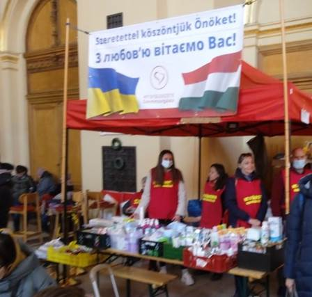

Fractal Sovereignty
Full Circle
© Citizen Doctor
Thematic Table of Contents
Click on the date near the top of each chapter to skip to the next chapter chronologically
|
Meta
Decentralization Series Fractal Sovereignty
Decentralization Related Maajid
Nawaz
Random Musings |
Exodus A
Prayer for Peace
Metaphysical Musings 1.
The Primary
Dichotomy
The Songs of My Life 1.
Bob Dylan
The Books of My Life 1.
The Lord of the
Rings
Metamystical Musings 1. The Time Is Now |
I took my nom de plume from an the long-running BBC science fiction series Doctor Who, which first aired in 1963. It is about the adventures and exploits of a Time Lord who introduces himself simply as The Doctor. By the time I had the opportunity to view the series in America, he was on his fourth incarnation, played by the actor Tom Baker. Being an avid science fiction fan, especially of the time-travel genre, I watched the show religiously during the 1980s.
Tom Baker as the fourth Doctor
One four-part serial broadcast during the fifteenth season was named The Sun Makers. It was set on Pluto, which was populated by over-taxed humans who all had the title, Citizen. When The Doctor met the head tax collector Gatherer Hade, he was addressed as Citizen Doctor. As it turned out, Pluto was being exploited by an alien corporation represented by the sinister Collector, an alien Usurian (derived from usurer) disguised as a human, who was constantly computing profits and losses as the basis for his ruthless decisions. Needless to say, The Doctor, with the aid of his companions Leela and K9, freed the citizens from their enslavement.
I
adopted this pseudonym, not only because I have a doctorate, but because I see
humanity as being stealthily enslaved and I desire for us be free. For many
years, I believed that science and technology held the answers. A decade ago, I
applied my background in complex systems to human society and came to believe
that decentralization could greatly improve the human condition. Subsequently I
delved into decentralized cryptocurrencies, seeing them as an antidote to human
enslavement by the “elite” via the bankster class. Along the way I became
convinced that scientific/technological solutions will not bear fruit unless
accompanied by an awakening in consciousness. And so, I have also been exploring
metaphysics and mysticism seeking a path to awakening.
2022.12.31 TOC
It’s December 31, 2022 here in Spain. What a year it’s been! One reason I chose Citizen Doctor as my persona is because Doctor Who reincarnates from time to time. I remember well the episode where the fourth Doctor Tom Baker morphed into the fifth Doctor Peter Davison. A few months ago, I got a very powerful sign that I interpreted as “the end of an era”. One of the implications was that this project, which had morphed from a project into an album, would be completed by the end of the year, which has now arrived. Citizen Doctor has finally completed his 11-year incarnation. Gratitude to my readers, my teachers and the One, from which all of our beings spring.
I close with a recollection of having had the honor and pleasure of competing with the Olympian Boo Morcom. I was no match for him even though I was a young man and he was in his fifties. In his retirement he had a stroke, but that did not defeat his spirit. He was quoted as saying: When we get to heaven, we'll have a track meet, And everybody will be young and strong.
Hasta
luego!
A social system that balances individual sovereignty and global unity.
We know now that centralized power attracts the few psychopaths among our population like a magnet. Even when hierarchical structures are created by good people with good intentions, they eventually become infested by the worst among us. Once the top of a social pyramid is co-opted by a psychopath, the lower levels tend to become corrupted until the whole structure is a soulless organization bent on power and/or profit with little or no regard for collateral damage to society or the environment.
Unless a cure is found for psychopathy, the only antidote is to maximize the sovereignty of individuals. Individual sovereignty can be increased by distributing power away from power centers. This process is sometimes termed decentralization or localization. But to clarify: this process is not meant to be taken to the extreme of a perfectly flat peer-to-peer (P2P) social structure. Hierarchies occur naturally and have compelling advantages. Consider how bodies are composed of organs, which in turn are composed of cells, which are in turn composed of atoms.
But social hierarchies, despite their advantages, have an inherent weakness: a tendency for power to concentrate at their vertices. To protect against this tendency, power should be yielded by individuals to higher levels of the hierarchy (family, community, region, state, nation and world) only when there is a compelling benefit to doing so and only with adequate safeguards; and always provisionally, with the inalienable right to reclaim yielded sovereignty should the hierarchy become corrupt. Further, there is a need for unrelenting vigilance.
The Founders of the United States understood all this when they framed the U.S. Constitution. But “We the People” have not been sufficiently vigilant and much of the social hierarchy has become compromised. The People must now either try to repair the damage via their existing representative power structure or, if it is beyond repair, scrap the legacy structure and try to rebuild a better one. Or so it may seem.
Another option for dealing with a corrupt hierarchy has come to prominence: the People are quietly building a parallel, much more decentralized/localized structure while withdrawing support from the legacy structure. This organic approach avoids class warfare and bloody revolution. The predators and parasites of society will simply find themselves with fewer and fewer prey.
I like the term Fractal Sovereignty to describe this parallel social structure. Fractals are structures characterized by their self-similarity on different scales, something like hierarchies. Although potentially infinite in extent, a fractal has an inherent unity due its generating principle that reveals itself on every scale. The image of a fractal found on the next page beautifully depicts for me how the whole is represented by each of its parts.
Accordingly, in a fractal society, there would be an ever-present awareness of the whole; each sovereign individual would be loosely bound to all other individuals and to the whole through a network of branches that converge on a central nexus. This network would be self-organizing, resilient and adaptive such that the central nexus would reconfigure organically in response to changing circumstances.
This fractal structure bears a resemblance to a hierarchy but is fundamentally different. In a hierarchy, authority descends from the top, down, while representation ascends from the bottom, up. In a living fractal, authority resides with the outer individuals, who each represent the whole. The inner network reconfigures as needed to optimize global unity, bypassing authority that does not represent the common good, just as the Internet automatically reconfigures to bypass faults in its networks.
To maintain this structure, there must be two complementary processes always operating. In the outward direction, ongoing decentralization/localization efforts minimize concentration of power and enhance individual sovereignty. In the inward direction, there must be a flow of information to spread awareness of problems and to coordinate voluntary collective corrective action when needed.
I have republished ten articles I wrote eleven years ago about decentralization: Decentralized Manufacturing, Decentralized Energy, Decentralized Money, Decentralized Education, Decentralized Agriculture, Decentralized Medicine, Decentralized Security, Decentralized Communication, Decentralized Government and Decentralized Religion. They are mostly still relevant, since society has arguably become even more centralized, in all of these areas, over this last decade.
During
the time since those decentralization articles were written, I have pondered
the problem of voluntary collective action coordination. The technology to
support this already exists. The challenge is to inspire participation. I have
observed the phenomenon of virality (e.g., memes “going viral”) but I still
don’t understand how it works. Nevertheless, I will outline a system which I
call The Nexus, which at least shows what might be possible.
A virtual network for coordinating voluntary collective actions
I’d like to see the sovereign people of Planet Earth have the means to coordinate their actions so that the power inherent in their numbers is harnessed in their favor.
Power, wealth and influence have become concentrated among fewer and fewer people, leaving the masses disempowered even though they vastly outnumber the few. The hierarchical structure of our society has made this possible; the few have only needed to gain control of the vertices of the hierarchy in order to multiply their individual power. The more power they command, the easier it becomes to acquire even greater power.
The systems devised in the past to counter this flaw in our social structures have become increasingly ineffective. While there still may be hope of effecting positive change through legacy systems, tyranny is sweeping the globe at such an alarming rate that a parallel system is needed.
Fortunately, modern technology provides the means to create a parallel system. One possibility is The Nexus, a virtual network for coordinating voluntary collective actions. It consists of:
1. Interconnected pods, each pod identified by a public cryptographic key
2. A pod has only one function: to recommend voluntary collective actions to other pods.
3. A proposed collective action consists of six elements: (a) a short descriptive title, (b) the type of action (boycott, strike, vote, donate, demonstrate, pray, etc.), (c) a region code, (d) a target date, (e) a link to a web page with a full description of and rationale for the action and (f) the public key and digital signature of the broadcasting pod. This small bundle of information is called a kit.
4. Pods may create kits or forward kits received from other pods. In either case, the kit is signed by the broadcasting pod, replacing the previous signature in the latter case. The signature thus signifies endorsement, not ownership. Ownership is obscured
The Nexus is self-organizing and self-regulating. There is no central authority. Each pod decides which other pods to listen to based on the quality of the kits they broadcast. There is no global voting or ranking mechanism but some pods could act as aggregators and publish rankings of the most popular kits as determined by how many endorsements they receive, while others could act as filters or curators.
I
have not mentioned any particular channel of communication between pods,
because any of the available channels might suffice in principle: email,
forums, blogs, tweets, anonymous boards, etc. If there is sufficient interest, dedicated
software will be developed to streamline and enhance the operation of the
network. The key to success is to motivate mass participation. Success breeds
success, so the first action should be selected based on the likelihood of
demonstrable success even with relatively few participants. Hopefully, some
imaginative and creative people will think of actions that are so compelling,
inspiring, clever or audacious that they will spread virally.
About Fractal Sovereignty and The Nexus
I’ve published two articles so far: Fractal Sovereignty and The Nexus. I intend for them to be documents, something like chapters in a book, which are still works-in-progress with commenting turned off. This article is open for comments on and discussion about the ideas in those documents.
I believe that if all the good, truly awakened people in world acted as one, they could change the world almost overnight. They don’t have to be a majority or even close to a majority. They only need to act together so as to focus their collective will where it will have the greatest impact. Two things are needed to do this: (a) a communication network and (b) specific action plans.
Thanks to modern technology and the Internet, we already have the means to communicate. All that is needed is to form our own virtual network on top of the existing one.
Choosing where to focus our actions is more challenging. I look at the world as a complex system which, like all such systems, has points that are resistant to influence as well as points that are sensitive to influence such that even a small stimulation will be magnified to a global scale by the internal dynamics of that system; the system has built-up energy waiting for a trigger, but the trigger exists only in a certain place at a certain time, like a code for a time-locked bank vault. The trick is to identify those trigger points.
I believe the Canadian truckers found one of the trigger points. There are so many factors working in their favor. Their businesses, their offices, their homes-away-from-home are their trucks which can be redeployed as a mobile blockade. They have their own independent CB communication network. They are a linchpin for the whole economy including international trade. The double-whammy effect of ceasing normal operations and blockading transportation routes gives them tremendous leverage.
I admire them and support their cause of freedom. However, I have mixed feelings about their strategy. They are taking the fight to their opponents on their opponents’ home court. There was bound to be a reaction from authorities. That reaction will test the peaceful resolve of the truckers; I hope they stand firm in their commitment to peace. And I hope that none of them become martyrs, and that there is minimal collateral damage.
There are strategies which are not directly confrontational and do not invite a violent reaction from authorities because the actors are decentralized and/or invisible. For example, while people still have some freedom to withdraw their monetary support, boycotts can be amazingly effective. Money still talks and corporations still listen when their bottom line is affected. Perhaps it’s the only thing they listen to. Another example is prayer, which is invisible but effective, especially when many pray together.
The Fractal Sovereignty article gives a philosophical basis for two complementary solutions to the challenge of looming tyranny on our planet. One is decentralization/localization; links to early articles about decentralization are provided within that article. The other is a proposed virtual network for coordinating voluntary collective actions named The Nexus. Please comment below.
Addendum: After 8 months, as of October 12, 2022, I’m closing
this discussion and passing the torch. Please read Global Walkout for an explanation. Thank you to all who
participated.
How the industrial revolution went awry and how a sustainable solution is emerging
[Originally published in 2011 by Citizen Doctor]
Let’s examine the immediate crisis facing America, the debt crisis. Why do we have so much debt? We could rightly blame the money system or the political process, or the wealthy elite who control both, but the most direct explanation is that for many years we have done more consuming and borrowing than producing and saving. For decades our productive capacity has been migrating out of our country, so that now there are fewer quality jobs and we must borrow money from foreigners to pay for imported goods that we formerly produced ourselves.
Did you know that televisions are no longer made in the USA? What’s wrong with this picture? Do we really gain something by buying TV’s and other products from big box stores, shipped from the opposite side of the world using dwindling reserves of oil, only to see them end up on garbage scows heading back to Asia because our landfills are already overflowing with junk? We could produce virtually everything we need ourselves as we once did, and then use our surplus products and resources to trade for whatever else we may need. So why don’t we?
Globalization, with its offshoring and outsourcing, was sold to us as a means to a better life based on cheaper products, but it is really a “get something for nothing” scam intended to transfer wealth and consolidate power at the expense of the middle-class. It is the final stage of a process that began several hundred years ago and that has led us to the brink of ruin. But we have everything we need to save ourselves, once we understand the basic problem beginning with how we got here.
In the early centuries of the industrial revolution, great advances were made in precision mechanical gears such as those used in watches. Gears were also used to transmit power from local sources such as wind and water to increase productivity in a variety of repetitive operations such as grinding, beating, hammering, cutting, sawing, pumping. pulling, and bellowing. But with the introduction of the steam engine in the 18th century, the industrial revolution entered a new phase characterized by centralization and gigantic scale. Steam engines were not cost effective on a small scale. They needed a constant supply of fuel and tenders to operate them, so they were built on a large scale and became the center of sprawling factories that often operated in shifts around the clock and were feed by transportation networks connecting to coal mining operations.
Very large capital investments were required, beyond the means of ordinary individuals and neighborhoods. A worker class evolved to perform monotonous tasks in the factories and mines for long hours and low pay, for the benefit of the few who had the resources to create the infrastructures. The wealthy industrialists wanted a guaranteed return on their investments, so they found ways to ensure that a profitable market for their products would persist for an unnaturally long time whether by influencing labor, patent, tax and tariff laws; using marketing psychology to create artificial demand and an appetite for frequent style changes; designing in short product lifespans and the need for frequent maintenance and repair; or suppressing competing companies and technologies — anything to keep the profits flowing. A steady revenue stream is always preferable to a one-time sale. Monopolies are always preferable to free market competition.
Large factories are like lumbering behemoths, designed for a specific purpose and therefore difficult to adapt to changing circumstances. This centralized industrial model has a built-in resistance to progress, stifling innovation and adaptation because of the need to recoup investments in large-scale dedicated machinery and buildings. In contrast, skilled craftsmen operating locally and with relatively low capital overhead can adapt rapidly to changes, either in market demand or technology. Local industry conforms itself to the needs of society, whereas society must conform itself to the needs of large-scale industry.
In retrospect, it’s unfortunate that electrical machinery did not appear before the steam engine. Because of its efficiency even on small scales and relative ease of transport, electricity could have been introduced directly into homes and neighborhoods, increasing the productivity of manufacturing even more than the steam engine but without as much need for centralization. But by the time electrical machinery appeared in the 19th century, the wealthy industrialists were already in control of society and so brought electricity into their factories to improve their productivity but without changing their centralized system. And so their power, wealth and influence have increased ever since, to this day.
To maintain their dominant position, they must create a steady stream of products whether needed or not, and so they have become experts at sophisticated psychological manipulation as pioneered by Edward Bernays. People must be conditioned to feel that they always need the latest gadget or fashion to be happy, and they must be kept stressed and distracted so that they never realize what is being done to them. But there is more: To ensure that the assembly lines never stop, they intentionally design their products to fail in a short time and they deliberately avoid a modular, reusable approach. If something breaks or wears out, it should be thrown away and replaced; and if it doesn’t break, it must be discarded anyway to avoid the appearance of being unfashionable. And more still: Even despite these strategies demand for new products eventually dries up, perhaps because there is a recession caused by the elite to facilitate wealth transfer. But the factories must keep producing to recoup the enormous capital investment in them, so wars are started to generate artificial demand for military products.
Picture a giant operation stretching across our planet in which conveyor belts bring gobbled up resources into giant processing plants where they are converted into plastic-wrapped products before exiting on other conveyor belts to be delivered into the mouths of force-fed and miserable consumer-creatures, whose excrement collect in vast toxic pits. A few elite fat cats sit on the roofs of their factories surveying their empire, heedless that non-renewable natural resources are rapidly disappearing and the toxic waste spewed by their factories is poisoning the very air they breathe. Animals and plants are dying everywhere, the earth and its oceans are becoming waste dumps, and smog blots out the sun. If this is “economies of scale”, then their idea of economy has nothing to do with what Thoreau practiced at Walden Pond.
Picture instead a world more like the Amish culture, or certain indigenous cultures with ancient traditions of living in harmony with the land, yet having the option to take advantage of remarkable technological advances that can support fractal sovereignty with a manageable environmental impact. It is easier now than ever before to create a society in which perpetual struggle for survival is replaced by satisfying creative work balanced with plentiful leisure and opportunity for creative pursuits, and with such an abundance of the most basic necessities of life that no one need do without them.
We have been conditioned to believe that the conveniences of modern life would not exist without mega-corporations. Why is it then, that we are working harder and longer for less? Why is so much of humanity still mired in poverty? An iPhone is at least a thousand times more powerful than the computers on board the Apollo space capsule that took men to the moon. The increases in productivity due to the 20th century introduction of computers, not to mention other scientific and technological achievements, should have led to a world where people only need work about one day per week to meet their most basic needs. Instead, the bounty of human ingenuity and labor has been funneled to a few elites whose only skill lies in their ability to exploit others, including the tactic of keeping the masses so preoccupied with stress and distractions that they don’t realize there is a better alternative. They’ve convinced us that there isn’t enough to go around; it’s a dog-eat-dog world where they are the alpha dogs and so we’re better off joining their pack and keeping our heads down.
So, we have the advantage of modern electrical machinery and computers along with other innovations such as advanced materials, all together which make it possible for localized, light manufacturing to play a much more prominent role in our society. This advantage is multiplied if we also adopt the open source and modular philosophies pioneered by the computer software community, but which also apply to the world of hardware and tangible products. Open source, modularized software has proven to the world that decentralized innovation combined with free sharing creates a global abundance that greatly exceeds that of the centralized, secretive, territorial and wasteful dominant industrial model. Thanks to the Internet, when open-source software or hardware designs are released, thousands if not millions of people around the world instantly benefit, and then they may also incorporate them into their own work, resulting in exponentially rapid advancement for humanity.
The psychopathic controllers and their sociopathic minions don’t like this trend. They are always seeking ways to tap into revenue streams and siphon off the fruits of others’ labor and creativity, and they’ll use any means to accomplish that. I prefer to think of them as predators and parasites. This helps put them into their proper place in the order of things. If you can imagine them as vampire squids and tapeworms, then they can be dealt with on those terms. It’s a simple matter of choosing not to be their prey by disengaging from their systems, which always rely on some form of coercion, manipulation or deception. Their numbers and influence will decrease as their food supply dwindles. No need to despise them; they actually serve a useful role in that they make us stronger in the long run, just as their counterparts do in the natural world.
The more that you and your neighbors become self-sufficient, the less vulnerable you will be to coercion and manipulation. If your neighbors aren’t ready to at least partially disengage from the dominant parasitic system, then it may be better to relocate or find virtual neighbors through the Internet rather than stand alone. There are progressive communities springing up everywhere. As more people join them, they will serve as an example of a model for an abundant and sustainable society for those still trapped in the old paradigm, until a tipping point is reached.
Let’s summarize:
· The sustainable development of humanity was hijacked by a predatory and parasitic segment of the population during the industrial revolution, diverting us into a cul-de-sac characterized by central control, concentration of wealth, widespread poverty, diminishment of individual freedom and innovation, depletion of natural resources and environmental degradation, and high-overhead, large-scale operations which alter society to accommodate, serve and perpetuate themselves, even after they become obsolete or destructive.
· The way for humanity to return to a sustainable path of development is through massive decentralization, supported by technological innovation shared globally through open communication channels. Creative solutions found anywhere can immediately spread everywhere if the predators and parasites are taken out of the loop, resulting in an explosion of sustainable abundance and advancement.
So, what are we waiting for? Here is a list of resources, projects and movements to join or support, relevant to decentralized manufacturing.
The Homebrew Industrial Revolution: A Low Overhead Manifesto
An excellent overview of the history of the light manufacturing revolution by Kevin A. Carson. Available as a book or as a free download.
“To repeat, there are two economies competing: their old economy of bureaucracy, high overhead, enormous capital outlays, and cost‐plus markup, and our new economy of agility and low overhead. And in the end… we will bury them.”
Also available as free e-book. See also Kevin’s Political Economy of Waste and his review of Plentitude: The New Economies of True Wealth.
P2P Foundation Open Manufacturing
A comprehensive wiki page on open manufacturing. Includes an extensive list of links.
A great example of open source hardware. Arduino is an open-source electronics prototyping platform based on flexible, easy-to-use hardware and software. It’s intended for artists, designers, hobbyists, and anyone interested in creating interactive objects or environments.
“The Fab Lab Network is an open creative community of fabricators, artists, scientists, engineers, educators, students, amateurs and professionals located in more than 100 countries and 1,750 Fab Labs across the globe.”
“From community-based labs to advanced research centers, Fab Labs share the goal of democratizing access to the tools for technical invention. This community is simultaneously a manufacturing network, a distributed technical education campus, and a distributed research laboratory working to digitize fabrication, inventing the next generation of manufacturing and personal fabrication.”
“The premier publication of maker projects, skill-building tutorials, in-depth reviews, inspirational stories, accessible by all ages and skill ranges.
How to Make Everything Ourselves: Open Modular Hardware
Initiatives like OpenStructures, Grid Beam, and Contraptor combine the modularity of systems like LEGO, Meccano and Erector with the collaborative power of digital success stories like Wikipedia, Linux or WordPress.
An economy based on the concept of re-use would not only bring important advantages in terms of sustainability, but would also save consumers money, speed up innovation, and take manufacturing out of the hands of multinationals.
A Network of Farmers, Engineers, and Supporters Building the Global Village Construction Set. The GVSC is a modular, do-it-yourself, low-cost, high-performance platform that allows for the easy fabrication of the 50 different Industrial Machines that it takes to build a small, sustainable civilization with modern comforts.
First Earth (Direct link to YouTube)
Documentary film by David Sheen about building healthy houses out of earth.
It establishes the
appropriateness of earthen building in every cultural context. In the age of
environmental and economic collapse, peak oil and other converging emergencies,
the solution to many of our ills might just be getting back to basics, focusing
on food, clothes, and shelter. We need to think differently about house and
home, for material and for spiritual reasons.
Who controls energy controls whole continents — H. Kissinger
[Originally published in 2011 by Citizen Doctor. See the footnote for a 2022 update.]
What if energy were free?
What would our world be like if energy were as free as air? For one thing, abundant energy could provide clean water everywhere by desalinating, purifying and transporting seawater, allowing for an immense increase in agricultural production including food, clothing and building materials. We could have all the necessities of life in abundance.
But this would not be in the interest of the social predators and parasites who thrive by creating artificial scarcity. They think nothing of instigating mass starvation and energy shortages to reap enormous profits. They have manipulated us into wars for foreign oil to power our society. Attempts to reduce our energy dependency through development of alternative sources have been underfunded or blocked, while Big Energy has been subsidized and deregulated. We had a chance to take a different road in the 1970’s in the aftermath of a contrived energy crisis, when the experience of waiting for hours in gasoline lines was still fresh in people’s minds. But the opportunity was squandered.
Fighting for energy sovereignty
We must decentralize energy production if we are to break free of elite domination, beginning with already available renewable energy options such as solar, geothermal and wind. There is plenty of renewable energy available to support a decentralized society that is no longer burdened by wasteful, inefficient high-overhead manufacturing, gratuitous consumption of frivolous and short-lived consumer goods transported over vast distances, and the daily ritual of commuters creeping along in rush hour traffic to and from cities in their gas-guzzling SUV’s.
We can expect continued advances in alternative energy technology, making implementation on local scales increasingly cost-effective. We might even see breakthrough technologies that could realize the dream of abundant and virtually free energy. But existing technologies already support regional or community-level energy independence in many areas and so we should move aggressively toward energy sovereignty without delay.
Solar energy
Our sun gives us an average of roughly 20 watts of power per square foot, depending on latitude and cloud cover. This energy already benefits us by providing warmth, growing plants and evaporating water which later falls as rain. If we wish to harness this energy for other purposes, we can expect to lose some of the power due to conversion inefficiencies.
Photovoltaic solar
Photovoltaic (PV) cells are typically 15% efficient converting sunlight to electricity and so can generate an average of roughly 3 watts of electrical power per square foot, enough to power a night light. This might be enough to provide for the energy needs of an energy-efficient home if the entire roof area is covered with solar panels, depending on geographical location. But such an installation is expensive with current technology. Historically cheap prices for non-renewable energy sources such as oil, gas and coal, combined with the high capital cost of solar panel systems limited their proliferation in the past.
But non-renewable energy costs have been soaring, even as solar cell conversion efficiency is increasing, manufacturing cost is decreasing, and energy storage solutions are improving. Therefore, we can expect PV solar to become more feasible and cost-effective on the residential and community scale. It is now easier and cheaper than ever to install some supplemental PV solar capacity on your roof. In some areas such as the desert Southwest, complete energy independence of individual homes should be economically achievable. In other areas, communities can pool their resources to overcome the capital barrier, as demonstrated by a new community-owned solar farm in Rifle, Colorado, the largest of its kind in the U.S.
Community solar
farm in Rifle, Colorado
Solar thermal and concentrated solar
A large percentage of our energy use is for heating. Solar energy can be used directly for heating, thus avoiding the inefficiency of conversion to electricity. Relatively inexpensive reflectors or lenses can be used to concentrate sunlight, and these can be mounted to track the movement of the sun, significantly reducing the capital cost per watt of power generated. Here’s an example of a simple homemade solar concentrator designed to heat a swimming pool. Visit BuildItSolar.com to learn about hundreds more do-it-yourself solar projects.
Solar concentrators have been used on large scales to drive steam turbines to produce electricity. It has been estimated that all the electricity needs of the US could be generated this way using only a small portion of the desert Southwest. A scalable modular approach to solar thermal involves arrays of parabolic reflector dishes to heat highly efficient, low-maintenance Stirling electric generators. One or more dishes can supplement the energy needs of individual homes or small communities. These dishes are expensive but should become more affordable as production volume increases, since they are designed for low-cost mass production. If you prefer the do-it-yourself approach, take a look at this open-source project in India.
Geothermal energy
The total thermal energy stored in the earth is estimated to be equivalent to the total solar energy that comes to the earth during a few million years. Most of this energy originates from internal nuclear decay and so is partially renewable, and it is also renewed near the surface by solar energy.
By itself, geothermal energy[1] could easily meet all of humanity’s energy needs. Better yet, it can be developed on local scales even without natural advantages such as hot springs. All that is needed is a way to circulate a fluid into the earth or a body of water so that the energy stored there can be pumped out by a heat pump (or pumped back in for cooling).
This video explains how geothermal heat pumps work. It’s hard to believe that all the energy we need is available right beneath our feet. Thanks to the leverage provided by heat pumps, extraction of the thermal energy can be cost effective in virtually any location where it is possible to dig into the ground. Heat pumps are already a highly refined technology, readily available commercially. Here is an example of a professional installation in the UK: part 1, part 2.
Wind energy
Wind energy production is less likely to be feasible and cost effective on small scales compared to solar and geothermal because locations with good wind resources are not as common, and wind turbines are more problematic than solar or geothermal solutions. In areas with abundant wind community-scale wind energy systems have proved successful. Small wind turbines, such as can be installed on a rooftop, are more justifiable in areas where there is no electric grid but plenty of wind. Here’s an example of a homemade wind turbine.
Community-owned wind turbine in Wales
Waste to energy conversion
We can solve two problems at once by converting waste into energy. Sweden has revolutionized large-scale waste conversion, while this operation in Belgium extends the concept to large-scale landfill mining. This plastic-to-oil converter demonstrates that the technology can be adapted for small-scale use.
Energy storage
Energy storage is a key component of decentralized energy because the sources of renewable energy that can produce electricity such as solar and wind are intermittent. Also, electric cars rely on batteries. Transportation accounts for about one-fourth of our total energy use, and more than two-thirds of our petroleum use. The main obstacle to replacement of internal combustion engines with electric motors is the expense, weight, large size and limited storage capacity of batteries.
More advanced batteries would greatly facilitate decentralized energy, but progress has been blocked by Big Energy, as in the case of the EV-95 NiMH batteries used in the discontinued Toyota RAV4 EV. But lately there have been major breakthroughs in battery technology. These advancements should accelerate the replacement of highly inefficient internal combustion engine technology which should have become obsolete decades ago, and enhance the feasibility and cost-effectiveness of decentralized renewable energy.
Integrated solutions
If we combine renewable solar, geothermal, and wind energy sources with breakthrough battery technology, convert our waste to energy, build more energy-efficient dwellings, and localize our economy so that transportation needs are reduced, we can have an abundant and sustainable decentralized society. Some examples of solar-powered, cost-effective and energy-efficient houses can be found in the Solar Decathlon Virtual Village.
Dreams of free energy
We don’t need to wait for the appearance of rumored devices that purport to draw energy from water or from the vacuum itself, yet the possibility is very intriguing. Free Energy: The Race to Zero Point is the best documentary I’ve seen on the subject, and it is compelling. There is no doubt that there are almost unimaginable energies trapped in the very substance of our reality. We have already witnessed incredible amounts of energy released from atomic particles. Theoretical physics backed up by such experimental evidence as the Casimir effect indicate that even greater energies may be trapped in the very fabric of space-time itself.
There is little doubt that the elite would do everything in
their power to suppress free energy technology if it does indeed exist. Our
world could transform virtually overnight if such technology were to suddenly
become available. But it would be a mistake to wait passively for this
eventuality, when there is nothing preventing us from working toward
decentralized energy sovereignty right now.
Decentralized Energy: Geothermal
Free energy beneath our feet
When I wrote Decentralized Energy eleven years ago, I was already very familiar with the subject of alternative energy, even having done a feasibility study for a tidal power project back in the 1970’s. So, I did not discover many surprises as I gathered information for that article. But one thing did surprise me and that was the bigger truth about geothermal energy, so I’m revisiting that subject to see what has developed in the interim.
Like many people at the time, I had a preconception about geothermal energy. I associated it with geographically rare resources such as hot springs, such that only a few places like Iceland might be suitable locations for geothermal energy development. I had overlooked the fact that geothermal energy is potentially available everywhere, given sufficiently clever technology to extract it.
Old Faithful Geyser in Yellowstone National Park, USA
I was surprised to learn that there is enough thermal energy inside the earth to power human civilization indefinitely. It is effectively a renewable resource. And it is decentralized across the Earth’s surface. Why? Because we live on a giant nuclear reactor! (Have you ever heard that? I wonder why not.) The core of the Earth is hotter than the surface of the sun and has been for billions of years and will continue to be so for billions more years. The thermal energy within the Earth is not merely left over from its original formation. Rather, it is constantly replenished by radioactive decay which generates heat that flows outward from the Earth’s interior to its surface, then into the extreme cold of space. A layer of insulating atmosphere covering our planet keeps its surface temperature near the range of liquid water, fortunately for us.
While the elite pit us against each other in wars for oil, we are standing on a virtually unlimited supply of free energy. Although the energy itself is free, just as energy from the sun is free, there is a cost involved in harnessing it. Technology is required, but we already possess adequate technology for cost-effective decentralized geothermal energy extraction. The reason that we don’t already make widespread use of geothermal energy must be for non-technical reasons; it has not been a priority for industrial capitalists. What has been a priority instead, has been to extract and refine radioactive material from the Earth’s crust so that it can be concentrated in centralized, large-scale nuclear energy plants, consistent with the elite’s modus operandi as described in Decentralized Manufacturing. This approach, as always, enhances their wealth and power, and in this case especially, does so at great expense to the natural environment.
The key technology for harnessing geothermal energy is the heat pump, which is not very new technology; an ordinary air conditioner is a heat pump. Heat pumps transfer thermal energy from a cool zone to a warm zone, requiring proportionately small amounts of mechanical or electrical energy to do so, significantly less than the total amount of energy transferred. They are the opposite of heat engines, which generate mechanical or electrical energy as thermal energy flows from a warm zone to a cool zone.
The ground beneath our feet is a reservoir of thermal energy. In the temperate zones of the Earth where most humans live, the temperature at a depth of 1.5 to 3 meters is in the range 10°C to 23°C (50 to 73 °F) all year round. All that is needed is to circulate fluid through pipes buried in the ground, to provide a cool zone for a heat pump to extract thermal energy from so as to, for example, heat a home. The heat pump lowers the temperature of the fluid in the pipe, from cool to cold. The cold fluid returns to the reservoir where it becomes cool again, due to the second law of thermodynamics, which causes thermal energy to spontaneously flow from a cool zone to a cold zone, thus warming the cold fluid in the pipe. But a heat pump can also cool a home in the summer, simply by reversing the direction of thermal energy flow to the reservoir instead of from it. Thermal energy extracted from the Earth in the winter can be returned in the summer.
The yard of a typical detached home is big enough for the pipe system to interact with the reservoir at a shallow depth. For very small yards, or for apartment buildings, vertical piping may be needed, requiring drilling. In some cases, it may be more cost-effective to build a community-scale facility in the most optimal nearby location, which can service many homes. Generally speaking, it is most cost-effective to install a geothermal system during initial construction, but in many locations even retrofitting is still cost-effective.
Geothermal energy has the potential not only to provide heat and cooling for homes — a significant percentage of total energy usage — but also to provide electrical energy which could then be used to meet general energy needs. This is more technically challenging, requiring larger scale operations, deeper wells, or more favorable locations to be cost-effective, at this time. But we can hope for breakthroughs such that all of the energy needs of a community could be met locally through geothermal energy alone. Can you imagine what might be possible if research and development of geothermal energy became a priority comparable to the efforts that have been directed toward the development nuclear energy over many decades? Until then, a hybrid of eco-friendly geothermal, solar, wind and hydro energy generating systems coupled with strategies for reducing energy needs, such as improved insulation and reduced commuting, can give local communities energy sovereignty while easing the burden on our natural environment.
To give an idea of what the current state of geothermal
technology is, here are some recent comments left below this informative YouTube video:
ChrisMax NY 9 months ago
We are about to have a vertical system installed by Dandelion in fact the drill rig will be here on Friday Aug 13th (yeah the old superstition). We are located close to Kingston NY and after a small heating oil leak decided to get out of the fossil fuel business! We checked out mini splits but found the maintenance on 6 interior units to be excessive not to mention the holes in the house walls for the refrigerant and drain lines. Dandelion designed a 5 ton system which requires two holes for the vertical loops. The house is 1920 sq ft and has an open design. We also had to replace the old hot air duct system as it was small and made from ductboard. After seeing the condition of the ductboard it was money well spent! Will update this comment after the drilling and install.
ChrisMax NY 8 months ago
Today they finished drilling two holes 288ft. Very noisy for three days! Waiting for next phase which will be the trenching and going thru the foundation. Can't wait to remove the oil tank and oil along with the furnace.
ChrisMax NY 8 months ago
We've been living with geothermal for three days and the cooling is phenomenal! Dandelion installed a 5 ton Aaon geothermal heat pump but we didn't get the desuperheater as our electric water heater is extremely efficient. However if your household has more than two people the desuperheater will be helpful in providing additional hot water. If you are in the northeast of the US Dandelion is without a doubt the best company to hire to install a geothermal system. All the people from initial contact to the final install and adjustments were respectful and helpful. Their quality of work and attention to detail is top of the line.
Our project involved upgrading our main electric panel to 200 amps and completely replacing the ductwork. We were very happy to so because an electric car is in our future and the ductwork was made of ductboard that was 30 plus years old. These two upgrades added $13,000 USD to the cost of the geothermal project but I consider them to be essential changes that would have been done at some point.
The entire experience of installing geothermal beyond the cost is more like an adventure. The process started with a phone call to Dandelion at the end of April 2021. We had the site survey in June which consisted of taking photos of the entire interior of the house with a 3d imaging camera so Dandelion could design the proper system for our home. Also the site for the drilling and trenching on our property was chosen. Dandelion actually wanted to start drilling in July but I put them off until mid-August which is when the drilling rig arrived. This was the part of the project that kept me awake at night. Both the neighbor's and my wells were very close (50ft) to the drill holes and as a precaution I had tested our wells before the drilling started. The drilling was extremely noisy, heard all over the neighborhood, and took two and a half days. This is the worst and most messy part of the entire project but also very interesting. Trenching to the foundation wall came next which was quiet compared to the drilling and not as bad as I expected. After reading what I consider a hit piece on Dandelion in Forbes magazine which mentioned cracked foundation walls caused by holes needed for the geothermal loops I was apprehensive! Turned out the foundation was just fine after drilling the holes but have the shopvac ready as there will be a lot of concrete dust blowing into the basement as the drill comes thru the wall. The rest of the install was a piece of cake and again Dandelion did an outstanding running the electric, connecting the loops to the geo heat pump, and finishing up cleaning the work site. The outside landscape was left in rough ready to be top soiled and seeded condition as per the contract.
The cost of just Dandelion's part of the project (all in USD) starting with the total: $40,375 - $1750 (discount for paying up front) - $9820 (incentive) Price before tax credit: $28,805 (what we paid) -$7489 (tax credit) Final Total: $21,316
ChrisMax NY 5 months ago
It's December 16th and the system is working without a flaw. Our electric bill has so far been lower then the cost of our old system. We had an air source heat pump that heated the house until the outdoor temp went down to 35 F then the oil furnace would do the heating. So the cost of the required electric and oil was more than the electricity the Geothermal is using. The coldest part of winter is coming so I'll post as to how that works out. Dandelion gave us this handy app to monitor the system and right now the water entering the heat pump is at 43.69 F and leaving it is 40.16 F outdoor temp is 43 F at 6:36 AM there is no snow on the ground.
ChrisMax NY 5 months ago
Dec 21 update: The outdoor temp this morning is 16.9F. Our home is at 72F and the water entering the Geo furnace is at 42.7F the water leaving is 38.9F. That temp difference is keeping us toasty! According to the app this heating season we would have used 78 gallons of heating oil. In reality that would translate to actually using 100 gallons due to the inefficiency of the oil furnace meaning 22 gallons would have just gone up the chimmney!
ChrisMax NY 4 months ago
Update: Jan 11 7:43A ET, 13F outside this morning. Water temp in: 39.77F out: 36.5F Supply air: 90.82F Return air: 69.11 Two wells 288Ft 5 Ton Aaon GEO Furnace Electrical: Jan 347 kwh which is equal to about 7.9 gal heating oil with 78 percent efficient oil furnace about 9 gal. Electric: 347 x .177 (our electric rate per kwh) = $61.42 USD oil: 9 x 3.57 (oil price per gallon) = $32.13 USD. There is electrical consumption with the oil furnace to run the blower.
ChrisMax NY 4 months ago
We are very happy with the system it has met all of our expectations. Our home has been toasty warm this January. Our electric bill is within what we had estimated. I can say without hesitation if one is choosing between a minisplit system and geothermal go with geothermal.
ChrisMax NY 4 months ago
Update: Jan 15th 6:18A ET, 4.6F outside, Water temp in: 40.46F out: 37.23, Supply air: 92.56F Return air: 67.95F Total electrical usage so far in Jan: 512kwh.
ChrisMax NY 1 month ago
The GSHP System has performed
flawlessly and the house is as comfortably warm as it was with the oil furnace.
Yes the hot air coming out of the registers is at a lower temp than oil but it
also is not as harshly dry and it smells fresh. The thermostat setting should
be kept at say 68F at night and not 65F. If every morning the house has to be
warmed from 65 to 70 the auxiliary or toaster heat would come on which uses a
lot of electricity. Our auxiliary heat came on very few times in Jan and it
used 9.13kwh which at our utility rate cost $1.79USD. In Jan the GSHP used
1269kwh for a cost of $249USD. In contrast the oil furnace which was about 80%
efficient used 95 gallons of heating oil on average in Jan. At $4 a gallon
that's $380 plus the electric it used to run the blower. So that amount of
heating oil equals 4170.5kwh of electricity! Can't speak to mini-splits but we
decided against them because of the maintenance and amount of equipment
involved but if you don't have hot air system it's the only alternative.
Restoring money to its role as the lifeblood of society and defending it from the vampiric bankster class
[Originally published in 2011 by Citizen Doctor. See the footnote for a brief update.]
Functions and properties of money
The body cannot be healthy without good blood and conversely, if there is a problem anywhere in the body it can usually be detected by a blood test. Blood serves the dual functions of transporting nutrients and oxygen to tissues and also removing waste products. Good circulation of the blood is necessary for it to perform its functions properly.
Money is the lifeblood of society. Bad money can ruin a society and conversely, a decaying society will show evidence of its illness in its monetary system. The main function of money is to facilitate exchange between individuals and organizations. For society to be healthy, money must be sound and circulate freely.
Circulating money is called currency, reminiscent of the flow of water. Sometimes money facilitates exchange because it is intrinsically valuable, such as with gold and silver coins. In such cases, money can function as both a currency and a store of value. However, these two functions partially conflict because if valuable money is hoarded it is not available for circulation.
What properties make money sound? Possibly the most important property is that it should be secure against counterfeiting and other forms of theft. But it’s also desirable for money to be convenient for ease of circulation. Convenience and security are conflicting properties in general. The usual compromise is to keep money in several different forms; for example, some in a bank for security and some in cash for convenience.
Due to the conflicting functions and properties of money, it is unlikely that there will ever be a single perfect form of it. The best solution is to let a free market decide which among several competing forms of money are most useful and when, where and how to use each form.
This brings us to the subject of this article, decentralized money. If we believe in the free market ideal, then decentralization is implied. Central control of the entire monetary system is antithetical to this ideal, especially when the central monetary authority creates debt-based, interest-bearing, fractional-reserve money by fiat and suppresses all competing alternative forms, as in the case of the current dominant system. Such systems are virtual invitations to the predators and parasites of the world to tap into the lifeblood of society and drain it dry. So, decentralization of the money system should be the overriding objective, through providing independent competing alternatives, some of which should be decentralized in their own right.
Centrally controlled currencies
It is generally accepted that a central authority for the creation and management of the money supply enhances security. But in reality, the security of the US dollar, for example, was seriously compromised as a consequence, losing over ninety-five percent of its value through stealthy theft during the past 100 years by the very authorities entrusted with its security, namely, the Federal Reserve Banks. Any centralized system will attract the predators and parasites of society to the points of control of those systems. The greater the power and wealth accessible at those control points, the stronger the attraction.
Thus, even successful locally centralized currencies such as BerkShares are susceptible to corruption. But with vigilance the small scale of local currencies might escape the notice of the worst predators; and since they are more decentralized than state, national or global currencies, they offer a partial solution.
Local currencies can be based on gold or silver, but are more likely to be paper scrip created by fiat of local authorities and to have no intrinsic value. Despite this, local currencies have been known to bring struggling communities back to prosperity by promoting local commerce and public works. Sometimes they are designed with demurrage so that their nominal value decreases with time, thus encouraging high money velocity — the opposite of hoarding. A famous example of this was the scrip that the town of Wörgl, Austria issued during a depression in the 1930’s. It was a very successful experiment until the Austrian central bank interfered.
There are over 2,500 local currencies in the world, the number surging in recent decades. Check the Wikipedia community currency page to see if one already exists in your area and consider supporting it. If not, consider starting one for your own community, building on successful models elsewhere.
The moral hazards of centralization increase at the state level, but nevertheless North Dakota has proven that a publicly-owned bank can maintain its integrity for more than 100 years, perhaps in part because this small-population state has stayed under the radar of the worst financial predators. The Bank of North Dakota exists to serve the people of the state, not private shareholders, and so North Dakota is one of the economically healthiest states in the US and has become a role model for other states and countries. For more details, watch Ellen Brown’s Web of Debt video (part 2, part 3, part 4, part 5).
At the national level, the US Treasury itself could directly issue debt-free and interest-free fiat money as it has in the past, eliminating the predatory and parasitic Federal Reserve Banks that currently control our money. For more details on this kind of solution, watch Bill Still’s video The Secret of Oz.
Bill is strongly against a gold-backed national or global currency, making the case that the elite could get control of too much of the gold supply while simultaneously outlawing silver money as they have done in the past. The mere fact that so many elite insiders are now promoting a gold standard is cause for suspicion. This is why I stress that the fundamental issue is not whether the money system is debt-based or gold-backed (though the latter is clearly superior), but whether it is centralized or decentralized.
Lincoln’s Greenback
The reintroduction of something like Lincoln’s Greenback in the US would be a positive step, but the banksters would not rest in their efforts to regain control of our money, even if it takes them a century or more — it is what they live for. It was just because the US was the fattest cow on the planet that the banksters were relentless in their efforts to co-opt politicians until, on their third attempt, they managed to get control of the US money supply in 1913 and have been milking the country dry during all the years since, charging us interest on our own money, orchestrating boom and bust cycles as a means of wealth transfer; and lately, in the final stage of mass looting before complete collapse, simply moving trillions of dollars out of the country. I refer you to the videos Money as Debt and The American Dream for more details about the current destructive monetary system.
For a centrally controlled national money to maintain its integrity, there must be competing forms of money in a free market. The banksters knew this when they demonetized silver in the “crime of 1873” to prevent competition with a new gold standard. They previously had acquired so much gold themselves that they effectively monopolized the new gold-backed money supply. This deliberate reduction in money supply brought about a six-year depression, possibly the longest in US history, transferring even more wealth to the elite. So we see that even a gold-standard is not sufficient protection against the elite, because any centralized monetary system can be co-opted.
In summary, the decentralization principle is of overriding importance. Local currencies and banks are preferable to state currencies and banks, state to national, and national to global; but a free market that permits competing forms of money is essential. Even if a particular form of money is centrally controlled on some scale, as long as it is not the sole “legal tender” then it can, along with other legal alternatives, be part of a decentralized system. But the overall integrity of the system would be best protected if at least one of the alternative forms is inherently decentralized. This would help keep honest all partially centralized alternatives within a free market.
The one inherently decentralized form of money that is already well-established are the precious metals — and I mean the physical metals themselves, not a paper substitute. There is also the promising prospect of decentralized digital currencies now under development.
Decentralized gold and silver as a store of value
Precious metals are decentralized in nature and so are an excellent antidote to the fraudulent debt-based fiat paper money system perpetrated by the predatory elite, who rely on central control more than anything else to achieve their ambitions of dominance. Metals have intrinsic value due to their usefulness in industry and their natural scarcity, and can therefore serve as a store of value when sufficient security measures are taken. They are relatively difficult to counterfeit when stamped into standardized coins or bullion and therefore have been a ubiquitous form of currency around the world and throughout history, but they are relatively cumbersome for this purpose, especially in the digital computer age.
Physical possession of precious metals is the best shield against the banksters who use their fiat money to steal our wealth from us. Physical possession of silver in particular is also recommended as a effective silver bullet to undermine their mechanism of wealth transfer by exposing the uncovered naked short silver positions in the commodity futures market as the key to their scheme of suppressing precious metal prices in order to prop up their fiat debt money.
We are in the midst of class warfare, and precious metals are among our best means of both defense and offense. In this circumstance, we prize the metals mostly for their intrinsic value and, perhaps without realizing it, their inherent decentralized nature: gold and silver exist and have value in their own right regardless of what any central authority may declare. Although for a time the metals might also be important as a currency, in the modern global world there should be alternative forms of decentralized money better suited to perform the currency function of money.
Decentralized digital currency
The problem
Part of the reason why our cancerous money system has persisted is because there are enough drawbacks associated with the various alternatives, even precious metals, that it has taken a crisis to get us to seriously consider them again. It’s just too convenient to pull Federal Reserve Notes out of our wallets, or to swipe credit cards, even though the banksters have found 101 ways to bleed a dollar here and a dollar there as money flows through their system, mostly beneath notice until recently. Nowadays, they are beyond brazen with their fees, scams and outright looting.
I lost my patience with the banksters recently while a foreign country. I wanted to get some money out of an ATM machine. A few years ago, there was a two-dollar ATM fee (which was bad enough) but no charge for currency conversion and no withdrawal limit. Then they added a 3% conversion fee, increased the withdrawal fee to $3 and reduced the maximum withdrawal amount to $125. So, it cost $27 or 5.4% to withdraw a total of $500. How is this justified?
I hoped I could get a better deal with a wire transfer of a larger amount of money. I transferred $2000 for a flat-rate $40 international wire fee, figuring that paying only 2% made the 3-5 day wait worth it. (Why does it take that long to transfer a few bits electronically?) But my bank routed the transfer through American Express, who tacked on another $25 fee. Finally, the local foreign bank added $25 on their end for a total of $90 or 4.5%. I managed to saved 0.9% but had to wait 4 days.
I looked into Western Union and other companies, but they were no better. Aside from my personal experiences, I’ve heard and read many banking horror stories. For example, there was the case where a bank deliberately switched the order of a customer’s deposit and subsequent withdrawal on the same day so that their account appeared overdrawn for a short time. They did this so they could charge an exorbitant overdraft fee. This is a relatively minor scam. Major scandals include money laundering for drug cartels.
All this profit for transferring a few computer bits and issuing a few pieces of paper backed by nothing but debt. You have to give the bankster parasites credit for getting away with it. Why do we tolerate this and the other questionable practices of the big financial corporations? What if we could bypass the banks and their scams? What if we could make an exchange of value with anyone in the world in a matter of minutes at virtually no cost?
A hopeful solution
This is the hope of those promoting the first truly decentralized digital money, Bitcoin[2]. Because it is new and experimental, it is controversial and risky. It is in a phase of development something like the Wild West or the Gold Rush, when enthusiastic homesteaders and prospectors risked everything for dreams of abundance and a better life, but sometimes found hardship or ruin instead.
But over time the flaws should be worked out of Bitcoin or its successors. Decentralized digital money is here to stay and will be equally important as and complementary to gold and silver as an alternative to centrally controlled fiat debt money. Besides being decentralized, it has the potential to be convenient, relatively secure, circulate easily, and even has an effective intrinsic value by virtue of its scarcity.
I have watched the evolution of Bitcoin since its early days, when only a few idealistic geeks and hackers were involved. They could see the immense potential once all the necessary components of a viable decentralized currency were brought together in one package. Some of these components did not even exist until about a decade ago. There were breakthroughs in cryptographic techniques that eventually lead to the solution of the double-spending problem of digital money, which is a variation of counterfeiting. For the first time, a central authority is no longer needed to protect the integrity of the money supply. This function can be performed by a decentralized network of computers, each of which is identical in authority to all others in the network.
Bitcoin languished in obscurity for a couple of years until exploding onto the international scene earlier this year. I’m sure that the timing had something to do with the spreading awareness of the impending collapse of the dominant money system. But there have been many growing pains, some of which have been caused by predators and parasites moving in to take advantage of the zealous but somewhat naive visionaries and the wave of early speculators who jumped onto the bandwagon. But so far, the setbacks have only made the Bitcoin community stronger and more determined; they still hold the original vision that Bitcoin as not just a get-rich-quick scheme, but a means for the people to regain control of their money system from the banksters.
I would not invest in Bitcoin as a store of value at this stage of its evolution. There are too many potential pitfalls, including that it could become illegal since it is a genuine threat to the dominant monetary system. Hoarding bitcoins would be risky speculation at best and would be self-defeating as this practice undermines their real value as currency. However, Bitcoin holds so much promise that I would contribute to its technical development and use it modestly and cautiously as a currency.
Some of the weaknesses of Bitcoin are that it doesn’t yet scale well to large numbers of users and it is publicly accessible to attackers. Many talented programmers are working on these problems. But since the software is free and open source, it could easily be adapted in its current state for use as a local digital currency on a trusted private network. The ultimate solution might be to have many competing variations of Bitcoin operating on local and regional scales, with competing exchanges mediating between them.
A decentralized free market keeps money honest
A decentralized free market keeps the various alternative
forms of money honest and in balance. Gold and silver help keep the store of
value function of all other forms of money honest. Decentralized digital
currencies promise to help keep the currency function of all other forms of
money honest, particularly centralized currencies at the state, national and
global levels as well as the corporate money services like credit cards and
PayPal.
I know no safe depository of the ultimate powers of the society but the people themselves — Thomas Jefferson
[Originally published in 2011 by Citizen Doctor.]
I know no safe depository of the ultimate powers of the society but the people themselves; and if we think them not enlightened enough to exercise their control with a wholesome discretion, the remedy is not to take it from them but to inform their discretion by education. This is the true corrective of abuses of Constitutional power. — Thomas Jefferson
The Problems with Centralized Education
How did America slip from top of the class to average in world education rankings? Through central control of the educational system. George W. Bush’s national No Child Left Behind program is seemingly yet another failure of central planning, but by the elite’s standards it is has been a huge success since their long-term objective has been to deliberately dumb down the population, according to former government insider Charlotte Iserbyt.
How could it be an oversight that Americans are not taught many of the most essential concepts required to be informed citizens in a constitutional republic? For example, we are taught next to nothing about something so basic and vital as the monetary system. Most Americans have no idea about the true significance of the paper bills in their wallets. Consequently, wealth accumulated by past generations is being stolen from right under their noses.
Under federal central control, our schools are failing. Failure will accelerate as funding for the prevailing centralized, high-overhead education model vanishes with increasing budget cuts and a reduced tax base. Perhaps this is just as well, given that most of our public schools have become more like day care/indoctrination centers, if not prisons complete with armed guards and metal detectors.
The federal government has no business being involved in education; it is the province of the States by default. The framers of the US Constitution understood that decentralization is the best defense against tyranny. Authority in some limited areas was originally granted to the federal government by the States only because there was compelling reason to do so and then only with safeguards against abuse of power. Presidential candidate Ron Paul understands this well and so has long advocated the elimination of the federal Department of Education.
My Journey to Disillusionment
I view my 12 years in the public school system as one long prison sentence. I was forced to memorize and repeat, obey authority, and sit in a chair. The system tried to destroy my curiosity and creativity, but I countered its efforts to stifle my development by visiting my local library after school to educate myself. I also joined the Boy Scouts to learn about leadership, first aid and safety, swimming and sailing, orienteering and camping, rifle shooting and archery, and many other skills not taught in public school.
My extracurricular efforts paid off. To the amazement and dismay of some of my teachers who had low expectations of me, I scored among the highest in my school on several of the College Board achievement tests and so managed to escape “prison” to what I perceived as the freedom of college.
I was thrilled by the relatively unconstrained college campus life. My enthusiasm propelled me all the way to a doctorate, but along the way I learned that college was no utopia. As I became more aware of the very serious problems in our society and world, I realized that our institutions of higher learning, which one would think of as having the best understanding of social problems and to be the best equipped to devise solutions to them, were not doing so — at least not very effectively.
I decided to work within the system to improve it by becoming a college teacher myself. Part of my preparation was to study experiential learning as exemplified by the Foxfire program in rural Appalachia. I later introduced this philosophy into my department’s curriculum through project-oriented courses with opportunities for creativity and teamwork.
The Foxfire books
My courses were successful, but there was little professional reward. Promotions, tenure and raises were given to those who published technical papers and won research grants, regardless of how poor their teaching evaluations were. Indeed, professors usually spend less than half of their time actually teaching, often shunting the responsibility for teaching lower-level courses to inexperienced graduate students. Most academics ride on the backs of young people striving for a good life. Shame on them.
Equally disturbing was the feeling of being in an intellectual box. My college saw itself as a bastion of academic freedom, but there was invisible pressure to conform to an orthodoxy. Reading Zen and the Art of Motorcycle Maintenance helped clarify what was disturbing me. The author had taught college Rhetoric and came to the conclusion that our college system is a church of reason. The academic world bears a strong resemblance to a religion or cult, complete with priests, holy books and cathedrals.
In the Church of Reason, a rational rather than romantic approach to life is preached. The cold and sterile intellectual processes of the mind are considered to be the arbiters of truth, whereas the compassionate intuitions of the heart are discredited. This reflects the suppression of the feminine in modern western society, and accounts for the tragic state of our world.
There is nothing wrong with rationality, but it must be balanced with intuition to discern quality and truth. Deduction and reduction must be balanced with integration and synthesis. Native American wisdom teaches that your heart tells you what to do and your mind tells you how to do it.
Our Flawed System of Education
The dominant system of education preys upon young people starting out in life, indoctrinating them, shaping them into useful tools for corporations to exploit and burdening them with debt so that they end up spending their productive lives as captives of the system. Our school system has become like a high-overhead factory assembly line (see Decentralized Manufacturing) churning out robotic workers to serve the corporations.
In my day, at least college was affordable and there was a reasonable expectation that the investment would pay off. This is no longer the case, as college expenses have soared and the assurance of a satisfying career with a healthy salary has become an empty promise for many. Students are saddled with an onerous and inescapable debt and are likely to find themselves moving back in with their parents upon graduation. In desperation, some have turned to prostitution to finance their education. There are even suggestions to pay for a degree by selling a kidney. Something is seriously wrong with a society that so cruelly exploits and abandons its young.
Our intelligentsia should be at the forefront of society, leading the way toward a modern Age of Enlightenment. Instead, they are either neutralized: compartmentalized by the overly specialized disciplines or distracted and intimidated by the publish or perish culture; or they are co-opted: gatekeepers and agents of the dominant system of central control, conditioning and filtering candidates for suitable roles within hierarchical corporate structure.
Just look at the Economics discipline, at how utterly it has failed to educate and lead society out from under the domination of the banksters. They have obscured the truth about the Federal Reserve Banks and have endorsed intellectually bankrupt Keynesianism. The corruption of Economics was accomplished by co-opting the points of central control, by funding chairs of prestigious academic departments and infiltrating editorial boards of prestigious journals. Case in point: our illustrious Federal Reserve Chairman Bernanke was formerly Chair of the Department of Economics at Princeton University.
We should ask ourselves, why are there so very few honest intellectuals of the caliber of recently passed historian Howard Zinn leading society out of ignorance? I say to today’s intellectual elite, in modern Internet parlance: Epic Fail. As Treebeard said of Saruman in The Lord of the Rings: A wizard should know better! There is no curse in Elvish, Entish, or the tongues of men for this treachery. Looking at you, Ben Bernanke.
A Better Way
We need to return to the old-fashioned decentralized system but with the enhanced opportunity made possible through effective use of technology. A decentralized system does not guarantee excellent education everywhere; but freed from the yoke of central control, local communities will have no limits on what they can give their children.
Decentralized education begins in the home and community, according to local customs and cultures. In traditional and indigenous cultures, the elders are the primary teachers of the young. At their stage of life, they have the most wisdom, experience and time. In a healthy society, they would be well-established and secure, having achieved their goals in life and having a natural desire to pass on their knowledge and skills to the next generation. Our unhealthy society devalues their worth and relegates them to nursing homes. Perhaps they would not need to be in a nursing home if they felt useful and valued.
I recommend reading about the Foxfire program in rural Appalachia to learn what community-based education can be like. Students collect traditional wisdom and knowledge from the elders and craftspeople of their community and record it in magazine articles and books, making their own decisions about how to learn required material. They emerge from the program as functional, independent adults able to contribute to the community which has supported them.
Nowadays, traditional educational techniques can be effectively supplemented by technology as demonstrated by the Khan Academy. Students learn at their own pace until they are satisfied that they have mastered a topic through video instruction and interactive computer exercises.
Some classroom teachers have found that the traditional model of teaching can be turned on its head with much better results. Instead of lecturing in class and assigning homework exercises, students are asked to watch Khan videos at home so that class time can be better used to work on exercises, with individual attention given to students who are stuck — attention from both the teacher and from other students who “get it”.
All the knowledge of the world is potentially accessible to humanity right in their homes through the Internet. It is like the Library of Alexandria raised to the Nth power. Just as the big box stores are being eclipsed by online retailers, the current education model is becoming obsolete. An expensive diploma doesn’t guarantee a million extra dollars over the course of a lifetime of employment as it once did; indeed, you’ll be lucky to break even. Watch the video College Conspiracy for more details (but beware of the NIA).
Choosing your path
I once knew a very wealthy business man from Asia. He explained that he had already achieved all his ambitions in life. He owned banks, factories, retail stores and more, all over the world. His pleasure in life now came from passing on his knowledge to apprentices he would seek out and take under his wing for a few years, having them practice managing at one of his locations, negotiate deals for new properties, and so on. The first step in evaluating potential apprentices was to ask them if they had an MBA degree. If they did, they were automatically disqualified because, he claimed, they had been so damaged by the educational system that it was not worth the trouble to repair them.
So, I encourage young people to consider alternatives to
going into debt to attend college. Start a business, become an apprentice to a
skilled craftsman, or travel the world instead. Of course, there are some
career or vocation choices that require the resources that centralized
education offers, so there is no single best strategy applicable to all. But
there is much room for greater decentralization in education. Be bold. You are
a sovereign individual and access to the accumulated knowledge of human civilization
is no more than a few keystrokes away.
Who controls the food supply controls the people. — Henry Kissinger
[Originally published in 2011 by Citizen Doctor. See the footnote for a brief update.[3]]
Like every other social system, agriculture is vulnerable to the consequences of central control; but compared to money, manufacturing and education, the consequences are easier to understand: more direct, and potentially more catastrophic. Everyone understands that we need food on a daily basis in order to survive. Only breathable air and potable water are more immediate survival necessities. If the security of anything should be of primary concern, it is that of our air, water and food; yet our diseased and decaying civilization is recklessly neglecting these essential elements of survival.
Most of us now recognize that giving greedy, soulless corporations and government agencies control over our food supply is a bad idea, as bad or worse than monoculture, where planting a single dominant crop throughout a large area invites disaster due to weather anomalies, infections, pests, and soil depletion. Corporations like Monsanto try to patent genetically engineered crops and animals so that they can monopolize the food supply, even though the supposed benefits of the genetic engineering are actually extremely harmful. Corporations are a greater danger to our food supply than all of the naturally occurring hazards combined. Government agencies like the FDA have been co-opted by these same corporations and now act primarily on their behalf rather than to protect public interests. They pretend to protect the public by sending SWAT teams to take out lemonade stands and natural organic food stores meanwhile subsidizing Big Agra, all at taxpayer expense.
Our dominant system of food production and delivery is highly wasteful, unhealthy, unethical and unsustainable. We’ve been sold the idea that bigger is better. Family farms have almost vanished from the American landscape, replaced by vast operations involving huge machines or hoards of migrant workers, supported by a vast array of chemical pesticides and fertilizers, and powered by imported oil through the entire cycle of planting, harvesting, processing, and transportation to markets.
Did you know that the average transport distance of food in your supermarket is about 1800 miles? Did you know that your supermarket can empty in a matter of a few hours in a crisis? Do you realize how much of the cost of food is for wasteful packaging and marketing propaganda? And what about food quality? Could it be that chemical pesticides and fertilizers, genetically modified seeds, hormones in animal products, artificial additives, toxins like mercury in high fructose corn syrup, MSG, Aspartame, etc., might explain the decline in health and life expectancy and the increase in obesity and health care costs in the US? Did you know that prostate cancer in places like Japan, China, India and Africa is about an order of magnitude less common than in the US? It is believed that our unhealthy food supply is the main culprit. The dominant corporate/government-controlled food system is dangerous and unsustainable. If you don’t take steps to disengage from it, you could be among the starving masses in the not-to-distant future. What are the decentralized alternatives?
Support local farmers
Buy locally grown products if offered by your grocer or from a farmers’ market if there is one in your area. You can also get more directly involved in supporting local farmers through Community Supported Agriculture, or CSA.
Over the last 20 years, Community Supported Agriculture (CSA) has become a popular way for consumers to buy local, seasonal food directly from a farmer. Here are the basics: a farmer offers a certain number of “shares” to the public. Typically, the share consists of a box of vegetables, but other farm products may be included. Interested consumers purchase a share (aka a “membership” or a “subscription”) and in return receive a box (bag, basket) of seasonal produce each week throughout the farming season.
Grown your own food
Rooftop garden in Brooklyn
You can grow food anywhere
Plant a garden in your yard, on your building’s rooftop, on your apartment balcony or in window boxes; or even indoors with the help of efficient, wide spectrum LED lighting. Gardening techniques have become so well developed and refined that you don’t need a green thumb to be successful. Modern techniques such as raised beds, vertical gardening, companion planting, hydroponics, natural fertilizers and pest-control methods, all enhance your chances of growing an abundant supply of healthy food, even in a small space.
Go beyond gardening into all-encompassing permaculture. Take a tour of some permaculture projects: Urban Permaculture Institiute of the Southeast (part 2, part 3). For further inspiration, see how one million pounds of food are produced on three acres in Wisconsin.
Join or start a community garden
The American Community Garden Association will help you get started.
The ACGA recognizes that community gardening improves people’s quality of life by providing a catalyst for neighborhood and community development, stimulating social interaction, encouraging self-reliance, beautifying neighborhoods, producing nutritious food, reducing family food budgets, conserving resources and creating opportunities for recreation, exercise, therapy and education.
Get involved in social movements that support the paradigm shift
Oppose Monsanto along with 270,000 farmers led by the Organic Seed Growers and Trade Association, who filed a law suit in March, 2011 to defend their right to protect themselves from Monsanto patents. Oppose the appointment of Monsanto’s Vice-President as senior advisor to the Commissioner of the FDA, the US Food Safety Czar.
Oppose Codex Alimentarius, which amounts to the weaponization of food.
Support Food First, an organization founded by Frances Moore Lappé, author of the best-selling Diet for a Small Planet. It is devoted to eliminating the injustices that cause hunger. They understand that our existing food system has been corrupted by centralized corporations and governments and therefore advocate decentralized solutions. They have been highly critical of World Bank and International Monetary Fund policies.
The return of the Victory Garden
Decentralized Agriculture is a vital component of the paradigm shift away from concentrated power and wealth and toward sustainability and liberty. Growing food locally reconnects us with nature and strengthens our sense of self-reliance, taking back our power and freedom from the predators and parasites in corporations and government who are as detrimental to society as the vermin and blights that infest and infect our gardens. Ironically, the US Government’s Victory Garden campaigns during the two world wars would be appropriate today, if we recognize who the real enemy is.
Trust me, I’m a doctor
[Originally published in 2011 by Citizen Doctor.]
Trust me, I’m a doctor
The first time I seriously questioned the medical establishment was when I learned how physicians are trained by intentionally overworking them and subjecting them to sleep deprivation during their hospital residencies, resulting in avoidable errors including deaths. I later watched how the medical profession, which had long since been compromised by the pharmaceutical corporations, became further compromised by the rise of HMO corporations, which put bottom-line profit over the well-being of both patients and doctors. Meanwhile, insurance corporations, through health and malpractice insurance, were driving up costs while subverting authority to decide on treatment.
It’s no surprise to me now that physicians are the third leading cause of death in the US behind heart disease and cancer, while statistical indicators of health such as life expectancy and infant mortality are falling behind much of the developed world even as per capita health care costs are twice that of any other country — medical costs are the leading cause of personal bankruptcies. And we shouldn’t be surprised that profit-driven corporations and the government agencies they control routinely suppress alternative health options. Under Codex Alimentarius, they are even trying to outlaw over-the-counter vitamins and herbal remedies as part of a general strategy to restrict our health freedom. The FDA is trying to destroy the vitamin industry.
As in every other sector of society, the solution to domination by predatory and parasitic central authorities is decentralization, beginning with individual sovereignty. We have health resources at our disposal that earlier generations couldn’t dream of: a vast knowledge-base directly accessible via the Internet and a vast array of alternative healing options including over-the-counter remedies and supplements. The goal is to reduce our dependency on the dominant profit-driven medical establishment by taking responsibility for our own health. The medical establishment is controlled by predators who profit from disease. They have no qualms about such strategies as manufacturing flu pandemics to reduce population size while making billions in profit.
One man’s journey to health sovereignty
I will share with you a personal healing story that made me a believer in health sovereignty. When I was in my early forties I developed prostatitis, an inflammation of the prostate gland. This disease has become a common occurrence in men in that age range in the US, as has the more serious disease prostate cancer, which is the most common form of cancer in men besides skin cancer. The symptoms quickly became acute. Without going into details, I will just say that the symptoms can be extremely painful and debilitating, such that one will do whatever it takes to stop the pain.
When a man with prostate problems visits his physician in desperation, he is probably offered treatments to alleviate the symptoms such as anti-inflammatory drugs or in the case of cancer, radiation or surgery. The typical mentality of the medical profession is to see a diseased part of the body as something that must be either suppressed or removed. A better perspective is to see the whole mind-body system as inherently possessing astounding self-repair and self-immunization capabilities, which operate smoothly unless they are undermined in some way. If true healing occurs, it is always the mind-body that heals itself. The best medicine is to support this natural healing ability.
I resolved not to suffer the fate of many men I have known at the hands of the medical establishment. Over the next year, I tried several natural remedies such as saw palmetto, but at best they provided only temporary relief. Then one day listening to a radio program I learned of a treatment advocated by a doctor who had cured himself of prostate cancer. He was told by his own physician that if he didn’t immediately have his prostate gland removed, he would die. But he didn’t give in to fear. Instead, he embarked on an extensive research program which resulted in a theory of the cause of prostate cancer and a program to treat the cause. I’ve found no better example of what health sovereignty means that what Dr. Clapp has demonstrated.
Prostate Health in 90 Days by Dr. Larry Clapp
According to the theory, the cause of prostate problems is in the colon. Due to the typical unhealthy American diet (the incidence of prostate cancer is 10 times less in Japan and Africa), by the time one reaches the age of 40, a large amount of undigested food residue has collected on the walls of the colon. This substance becomes putrefied and hardened, forming a kind of plaque that has several detrimental effects. Absorption of nutrients is blocked, affecting the overall health of the body. More seriously, the substance generates toxins as it decays, and also becomes a breeding ground for parasites. Between the parasites and toxins, the colon wall is damaged and the toxins leak out into the rest of the body. (This is also leads to leaky gut syndrome.) The nearby prostate happens to be one of the most sensitive tissues in the body and is likely to be the first to react to the toxic load by inflaming. (Incidentally, a corresponding sensitive tissue in women is the breast tissue.)
If this theory is right, it is obvious how completely wrong-headed the medical establishment is in their approach of cutting out tissue that has reacted to toxins. The prostate acts as an early warning system that something is wrong in the body. Cutting it out or radiating it is like firemen responding to a fire by disabling the alarm and then leaving the building to burn. Removing the prostate, besides the direct harm done to the body and the psyche of the man, does not address the actual problem and thus assures further disease.
As Dr. Clapp discovered, there is an effective treatment that is simple, inexpensive, natural, non-invasive and can be self-administered. It consists of a cleansing liquid-only fast and detoxification and a long-term commitment to a healthy diet. The most immediately effective part of the treatment is a daily salt-water enema. A quart of water is consumed each morning, salty enough that the body does not absorb it and so it is passed through in an hour or two, and serves to wash the colon clean. After a few days, one can actually observe long black cords of hardened material being expelled. This plaque is broken up with the help of bentonite, a mildly abrasive clay.
After only one day of this treatment, my prostate symptoms began to improve. By the forth day, the black substance began to be expelled from my colon. By the ninth day it was all gone and my lower abdomen felt light and clean, like the feeling of having a long hot shower for the first time after months or years without. The symptoms returned in mild form periodically and so I repeated the treatment a few times during the following years. I have been 100% symptom-free for more the two years since my last treatment.
I wanted to tell this story for two reasons:
1. First, colon health is extremely important to overall health, and can be greatly improved with this simple treatment along with a healthy diet and lifestyle. Don’t wait for symptoms to appear. Most Americans probably have the black cord in their colon right now, like a time bomb waiting to go off. With a little effort and commitment, you can save yourself much misery and expense in the future. Spread the word.
2. Second, this is a good example of how you can free yourself from dependence on the dominant medical establishment. Chances are good that your physician knows nothing about this treatment. Most likely he is overstressed, limited to ten minutes per office visit by his HMO, and subject to intense marketing from the pharmaceutical corporations. Do you want to turn over your health sovereignty to him, and perhaps end up losing part of your manhood and having to wear diapers in the bargain? Don’t expect the corporate-controlled medical/pharmaceutical establishment to promote such cures, since they would be cutting their own profits. By all means go to the emergency room if you break a bone; but for non-trauma events, consider first checking the Internet or visiting a local alternative health practitioner.
Some strategies for overcoming disease and creating health
It goes without saying that a balanced life with minimal stress, good relations, proper diet, sleep and exercise are all important to health, i.e., an ounce of prevention is worth a pound of cure. Prepare ahead of time for the occasions when injury, illness or disease may strike by educating yourself and identifying alternative health practitioners and sources of remedies and supplements in your area. Equip yourself with first aid supplies, and stock up on medicines, remedies, and supplements that have a substantial shelf life.
The subject of medicine, in the most general sense, is very broad and I do not have the expertise to make specific treatment recommendations or to properly survey the vast range of alternatives. My goal is simply to motivate you to begin taking steps toward health sovereignty. But I will suggest a few directions to explore on your own journey, based on my personal experience.
My daily regimen
Every day I take some vitamins, minerals and other supplements, especially green powder which helps keep my pH-level up, more alkaline than acidic. It is known that cancer can not exist in an alkaline environment. Since I started this regimen years ago, a chronic and advancing case of candida (a yeast infection), which appears as a red rash on the skin but can also damage internal organs, has permanently vanished. The expensive ointment I previously used for years as prescribed by my physician only temporarily suppressed the symptoms.
I also try to keep my caloric intake down. Studies show that low caloric intake correlates with longer life. I believe that the body has two modes: either growth or regeneration dominates. Low caloric intake keeps the body in a regenerative self-healing mode conducive to survival. Cancer is cell growth run amok. Growth is good for children but for adults, regeneration and longevity are more important.
Also very important is plenty of water. Think of pure water as a medicine, or better yet as an elixir.
Resources on the web
Although the WebMD online database is based on Western establishment medicine, it can be very helpful on the path to health sovereignty. With it you can at least get a “second opinion” about anything your physician says, including learning about all the side effects of treatments. There are a host of informative alternative health websites such as Natural News. Educate yourself about potential health hazards such as vaccines, mercury, fluoride, GMO, MSG and aspartame and mobile phones.
Chinese medicine
I have had good luck with traditional Chinese medicine,
which is a holistic approach to healing drastically different from Western
medicine and less expensive. Chinese acupuncture and herbal treatments are
intended to remove energy blockages and restore the balance of the body’s vital
energy systems, so that it can heal itself. My understanding is that much
training and experience is needed to master Chinese medicine, and it is best to
find a practitioner trained in China.
Homeopathy
Homeopathy aligns well with the theme of decentralized medicine. It is a holistic approach, treating each person as an individual and taking into account their entire life situation and history as well as their complete mental, emotional and physical condition, and it uses minute amounts of various substances found in nature to stimulate the body to heal itself. Homeopathic remedies are easy to acquire: no prescription is needed and they are relatively inexpensive and completely harmless compared to allopathic drugs.
I wish I could give a strong endorsement of homeopathy, but my personal experience with it has been disappointing. I worked with several experienced homeopathic practitioners over several years in an attempt to cure a chronic disease, but never clearly benefited from homeopathic remedies, even for ordinary illnesses. But it seemed safe and inexpensive enough, and based on sound enough principles, to be worth giving a chance.
Creating a healthy life
It has been demonstrated by many studies that one’s mental attitudes and belief systems are a primary determinant of one’s health. Studies with placebos have proven the remarkable ability of the body to heal itself if one completely trusts their physician, even if all he prescribes is a sugar pill. Likewise, a physician’s diagnosis of disease can trigger a loss of hope and a terminal downward spiral. The challenge is to put your trust in yourself instead of some external authority figure. Become proactive in establishing and maintaining your own health, and when you must overcome disease, do it on your own terms. Never surrender your sovereignty.
If you really want to take responsibility for your own long-term health and well-being, consider a combination of bodywork, therapy and spiritual practice. This is a serious long-term commitment, not a quick fix, but is well worth the effort and expense. The health of the mind-body-spirit system is greatly affected by emotions, which are in turn are governed by belief systems, and no pill can substitute for the effort needed to find inner balance. A compassionate, joyful spirit, a focused, clear mind and a strong, vibrant body all go together.
The long-term process of healing the body, mind and spirit, which inevitably leads to a change in lifestyle, is a very personal journey. My own journey led me to a healing approach known as Core Energetics + Pathwork combined with a yogic lifestyle. Yoga is a physical, mental and spiritual practice backed by thousands of years of tradition. The best introductory book I’ve found on yoga is the Sivananda Companion to Yoga. But there are countless other paths to follow. Be well.
A formula for real security: interdependence
[Originally published in 2011 by Citizen Doctor]
Security: at what cost?
The easiest social area to argue the need for centralized authority is security, because primitive fears are evoked when security is threatened. Logically flawed statements such as “we must destroy our potential enemies before they destroy us” or “we must operate secretly and outside the law, and deprive you of your privacy and liberties, all in the interest of national security” are readily accepted without critical evaluation in a state of fear.
Those who would give up Essential Liberty, to purchase a little Temporary Safety, deserve neither Liberty nor Safety — Benjamin Franklin
When people are tricked into abdicating their responsibilities to higher levels of the social structure, they become weak and dependent, ripe for exploitation by predators and parasites who seek to control and infest any and every organization with concentrated power at the top of a pyramidal structure. There is no better example of such structures than typical military command and control structures, which rely on unquestioning obedience of subordinates to the dictates of central authority. Therefore, the realm of security is a favorite of predators and parasites. If there is no enemy the elite will create one; if there is no war, the elite will instigate one and support both sides. The ideal enemy is one that cannot be seen or defeated; the ideal war is an endless one. The goal is perpetual fear, total submission to central authority and permanent abdication of liberty.
A formula for real security
Real security begins with free individuals taking responsibility to protect themselves, then their families and their communities. Children should be taught from an early age to be self-sufficient and able to defend themselves. They should learn objective critical reasoning skills to accurately assess their situation. They should learn survival skills, including the normal need to provide themselves with food, clothing and shelter. In some traditional cultures, the very measure of adulthood is the ability to grow or hunt for food, or to build a home from what is available from the land. In the U.S., organizations such as Scouting and 4-H can provide hands-on, experiential education and training for children in these areas beyond what is available in the school system.
Senator S. I. Hayakawa well understood that true security is built on the inner security of a healthy personality. Here is an excerpt from his 1965 speech on this subject:
Since the theme of this conference is ‘The Search for Security,’ let me start by contrasting two views of security, namely, the static and the dynamic. The static concept of security may be pictured by thinking of the oyster inside its shell, the frightened person behind his neurotic defenses, or pre-war France behind the Maginot Line. The main idea in the static concept of security is to build up enough protective walls and to sit still inside them. The “search for security” for many people still is the task of building and mending walls around oneself.
The dynamic concept of security can be pictured by thinking of a skillful and self-confident driver speeding home in the traffic stream along Bayshore highway. He knows that the highway is dangerous; he knows that he may encounter drunken drivers or cars with faulty brakes, and he knows that a slight error in judgment at 60 miles an hour may result in his not getting home at all. Nevertheless, he is not insecure, he is not frightened; in fact, this daily confrontation of danger doesn’t worry him at all, because his security in this dynamic and dangerous situation depends not on walls to protect him from danger, but on internal resources — skill, knowledge, experience, flexibility — with which he knows he can cope with danger. — Senator S. I. Hayakawa
Gloucester Fisherman’s Memorial
We can learn from the attitude of an experienced boatman, who leaves port for the open sea with the understanding that should he encounter problems, his survival depends on his own equipment, preparation, skill, experience and judgment; he does not count on being rescued. Some sportsmen take the challenge of self-sufficiency to an extreme, and their writings offer insight and inspiration. My personal favorite is Walter Bonatti’s The Mountains of My Life. He accomplished a series of stunningly audacious solo first ascents, such as the North Face of Matterhorn in winter, during an era when equipment was relatively primitive. These words of his capture for me the essence of individual sovereignty:
Right from the start my own motivation has been mostly of a thoughtful, introspective nature, ending in an assertion to myself about myself. — Walter Bonatti
But “no man is an island unto himself.” Not every individual can be fully self-sufficient. Eventually everyone is diminished by old age, if not by illness or accident. The responsibility to care for the elderly and infirm falls first to the family and then the community. The young and healthy should help others in their community when they are able so that when they need support it will be returned by those whom they have supported. Those who may have less to contribute in some areas may have more to contribute in other areas. The elderly, especially, can offer experience, knowledge and wisdom.
Bear ye one another’s burdens… But let every man prove his own work, and then shall he have rejoicing in himself alone, and not in another. For every man shall bear his own burden. — Galatians 6
To the extent that this ideal is approached, community members operate from a position of strength and independence rather than weakness and dependency. When strong individuals interact in a mutually beneficial way, the main social dynamic is interdependency rather than co-dependency, the latter being comparable to the mostly passive food role in the predator-prey and parasite-host dynamics. Interdependency generates prosperity and security through mutually beneficial cooperation.
The formula of interdependency based on self-sufficient sovereignty and leading to prosperous security extends to all levels of our social structure. As with individuals, strong, self-sufficient communities and nations are well-positioned for mutually-beneficial trade with their peers without risking exploitation or absorption.
Self-sufficiency → Sovereignty → Interdependency → Prosperity → Security
Where we went wrong
It was a mistake to turn over care of the elderly and infirm to the state and to corporations. Social Security funds and Corporate Health and Pension plans are subject to looting. If they haven’t been already, they will be in the near future. Then bureaucratic “death panels” will decide who can live and who must die.
It is a mistake to rely solely on police and military for protection against attack. If citizens give up the responsibility to defend themselves, they become weak, dependent and easy to control. National Guard units and local police departments are increasingly controlled by the federal government, and are being transformed into para-military units for use as instruments of control of the population. The distinction between police and military is blurring, as military units are increasingly assigned domestically, in defiance of the Posse Comitatus Act.
It is a mistake to relinquish the right to bear arms. We can learn something from the Swiss, who are required to keep a rifle in their home after being trained in its use during their military service. Even Hitler hesitated to invade Switzerland. Historically, governments disarm the people as a prelude to tyranny and genocide. There has been an ongoing campaign by the federal government to erode the Second Amendment rights of U.S. citizens. In recent years, even veteran soldiers have been systematically targeted for loss of these rights.
It was a mistake to ignore President Eisenhower’s prophetic warnings about the military-industrial complex. Few things are more dangerous to liberty than a standing army and so the U.S. Constitution has specific checks against them, but they have failed:
There can be no denying that the Framers’ efforts to protect the nation from involvement in unnecessary and unjust wars and from an enormous standing army have failed. The two mainstays of their plan — a small defensive military force and a constitutional separation of war powers — are dead letters. The country is routinely engaged in conflicts in every corner of the globe, none of which has anything to do with the military’s only legitimate purpose: to defend the country from invasion. The power to wage war has coalesced under the executive and the government maintains an increasingly imperialistic foreign policy. Free of the constitutional chains that the Framers imposed upon it, the federal government is now on a road of empire, intervention, militarism, aggression, occupation, and torture, not to mention increased taxes, inflation, and despotism at home. — Bart Frazier
Even when Social Security funding is under attack, the bloated military budget is untouchable, draining the financial lifeblood of the country. How can this be in the “interest of national security?” America has become so mentally and morally weakened that a military invasion is not even necessary for its conquest. Our wealth is being sapped from us while we have been duped into endless expensive wars on drugs and terror. First our industrial base was moved overseas, then our monetary base was diluted, and now our retirement security fund is being looted. This all came about because people turned over their sovereignty to central authorities.
Ways to support decentralized security
Real security is built on and by strong, self-sufficient, free individuals and communities.
· Acquire self-defense and firearms training.
· Acquire first-aid and emergency training.
· Store food and water for emergencies and shortages.
· Learn to grow food and build shelter.
· Develop other specialized skills that will benefit your community.
· If you don’t feel part of a real community, consider relocating or starting your own.
Here are some other specific ways to support decentralized security:
· Support the movement to defend county sheriffs as the only directly elected law enforcement officials, answerable only to their constituents, bound by their oaths to the Constitution, and having ultimate law enforcement authority within their jurisdictions, as explained by Sheriff Mack in his book The County Sheriff: America’s Last Hope. YouTube video summary: part 1, part 2.
· Consider decentralized alternatives to conventional health insurance; as an example learn about at the Christian organization Samaritan Ministries.
· Form or join an existing Resilience Circle or similar community group: A Resilience Circle is a small group of 10–20 people that comes together to increase personal security during these challenging times. Circles have three purposes: learning, mutual aid, and social action.
·
September 12, 2011 was celebrated as Interdependence Day with
this crowd-sourced short film Declaration
of Interdependence. Consider declaring your
interdependence. When the people of the world realize their
interdependence, there will be no more wars.
The greatest defense against tyranny since the printing press
[Originally published in 2011 by Citizen Doctor. See the footnotes for links to recent relevant articles.]
The Internet: the greatest defense against tyranny since the printing press
Printing press
The emergence of the Internet poses a greater threat to the control of humanity by a small elite class than the appearance of the printing press did in the fifteenth century[4]. Because the elite were able to turn the printing press to their benefit by dominating the publishing industry, they thought they could do the same with the Internet. The benefit of secretly monitoring everyone’s communications seemed to outweigh the risks, which they limit by controlling the domain name system (DNS) and the Internet infrastructure itself through government agencies and telecommunications corporations. They can blacklist any website domain name and can surveil, regulate or block transmissions through the infrastructure.
But now the elite are genuinely frightened by the success of alternative news media such as Infowars.com[5]. Secretary of State Hillary Clinton remarked that: We are in an information war, and we’re losing that war. Senator Jay Rockefeller asked: Would it have been better if we had never invented the Internet? And so the elite have been taking steps to assert their control through censoring, eliminating anonymity and threatening to shut down the Internet with a “kill switch”.
Many who value freedom have realized the great boon the Internet is to humanity and are working to free it from government and corporate control. Through sharing of information, the people of the world can become informed and educated; they can be given tools to lift themselves out of ignorance and poverty. People from different cultures can learn through direct communication how much alike we all are and how much common interest we have in peace and prosperity.[6]
Eleven ways to support Internet freedom
1 Oppose any legislative attempts to restrict the internet, such as internet taxes, and support net neutrality through groups such as Save The Internet: Through education, organizing and advocacy, we promote diverse and independent media ownership, strong public media, quality journalism, and universal access to communications.
2 Support the Electronic Frontier Foundation: When our freedoms in the networked world come under attack, the Electronic Frontier Foundation (EFF) is the first line of defense.
3 Support projects that support Internet anonymity, such as the Tor project: Activists worldwide use Tor to protect their anonymity online and to circumvent Internet censorship. But they all rely on a limited number of user-provided “relays” to protect themselves and communicate with others.
4 Support the Free Software Foundation (FSF): As our society grows more dependent on computers, the software we run is of critical importance to securing the future of a free society. Free software is about having control over the technology we use in our homes, schools and businesses, where computers work for our individual and communal benefit, not for proprietary software companies or governments who might seek to restrict and monitor us.
5 Support the P2P Foundation: The P2P Foundation was conceived to help people, organizations and governments transition towards commons-based approaches to society through co-creating an open knowledge commons and a resilient, sustainable human network.
6 Support projects aligned with the recent U.N. declaration that Internet access is a human right.
7 Use encrypted email to thwart government spying.
8 Use Startpage to use the Google web search tool anonymously.
9 Withdraw your support from corporate-controlled social websites like Facebook.
10 Support the development and spread of open source decentralized social software alternatives to Facebook and Twitter:
· OneSwarm — privacy preserving peer-to-peer file sharing.
· GNU Social — The free software social networking platform.
· Diaspora — The online social world where you are in control.
11 Support projects which are building a decentralized Internet infrastructure, outside government and corporate control. Here are a few of many such projects:
· Freedom Box Foundation — based on the ideas proposed in this inspirational talk by Eben Moglen. A project to develop software that will enable tiny inexpensive plug computers to function as private servers which can connect directly and automatically to others through a decentralized wireless mesh network.
¨ We are an organization committed to the tenets of free information, free culture, and free society.
¨ We hold that advances in information technology provide humanity with the ability to effectively face global challenges.
¨ We contend that our very ability to mobilize, organize, and bring about change depends on our ability to communicate.
¨ We see that our ability to communicate is purchased from a handful of powerful entities.
¨ We know that we cannot depend on these entities to support movement away from a status quo from which they are the beneficiaries.
¨ We believe that access to a free network is a human right, and a necessary tool for environmental and social justice.
¨ We envision communications infrastructure that is owned and operated cooperatively, by the whole of humanity, rather than by corporations and states.
¨ We are using the power of peer-to-peer technologies to create a global network which is immune to censorship and resistant to breakdown.
¨
We promote freedoms, support innovations and advocate
technologies that enhance and enable digital self-determination.
The powers not delegated to the United States by the Constitution, nor prohibited by it to the States, are reserved to the States respectively, or to the people. — Amendment X
[Originally published in 2011 by Citizen Doctor. See the footnote for a link to a recent relevant article.]
The Republic in crisis
The Founding Fathers of the United States understood the problems of both centralized power (tyranny) and pure democracy (mob rule), and so devised a system where the two are intricately balanced. This balance is articulated in the Declaration of Independence, the Constitution and the Bill of Rights. Together they are perhaps the best formal system yet devised to implement Fractal Sovereignty, beginning with the assertion that the sovereignty of the individual — his life, liberty and the pursuit of his happiness — cannot be usurped by the state. They go on to assert the sovereignty of the separate States that compose the Union:
The Founders recognized that a system of self-government of the people, by the people and for the people could only endure if We The People remain vigilant against the predators and parasites which would inevitably infiltrate and infect the apparatus of the state. When Benjamin Franklin was asked, upon leaving the Constitutional Convention, whether we got a republic or a monarchy, he replied: A Republic, if you can keep it.[7]
Perhaps the greatest threat to the Republic until now was the Civil War, instigated by the elite working through the banksters. President Lincoln’s main goal was not to end slavery, but to preserve the Republic. On the walls of the Lincoln Memorial are engraved these words from his Gettysburg Address:
We here highly resolve that these dead shall not have died in vain—that this nation, under God, shall have a new birth of freedom—and that government of the people, by the people, for the people, shall not perish from the earth. — Abraham Lincoln
The Republic went on to endure another 148 years to this day, but the elite have not been idle. Control of money has always been their primary lever of power used to control every other aspect of society. As the infamous bankster Mayer Rothschild stated in 1790: Let me issue and control a nation’s money and I care not who writes the laws. The elite gained control of the money system in 1913, with the creation of the Federal Reserve Banks. In the 98 years since, they have nearly succeeded in using that lever to wrest control of the state from The People. The Republic is in graver danger now than during the Civil War, and will be lost unless The People defend the spirit of the Constitution by reclaiming sovereignty from the state which they created but which has turned from servant to master.
History records that the money changers have used every form of abuse, intrigue, deceit, and violent means possible to maintain their control over governments by controlling money and its issuance. — James Madison
Reclaiming sovereignty
The strategy is simple: massive decentralization in every area of society, beginning with the monetary system. Each of us can begin by simply buying physical silver and gold. To accomplish this on a large enough scale to save the Republic, we need to educate The People. Fortunately, the Internet is still relatively decentralized and allows us to bypass the corrupt educational system and establishment media.
But buying silver and gold is only the first step in regaining control of our money and our sovereignty. Legal tender laws and capital gains tax laws need to be changed through the political process provided by the Constitution and Bill of Rights. Accordingly, if change cannot be effected at the federal level, then it can be effected by reasserting the sovereignty of the individual States which compose the Union.
Washington is still heading full speed toward a cliff, despite the efforts of a handful of principled statesmen like Congressman Ron Paul. Ron has perennially introduced bills to audit the Federal Reserve and to reinstate gold and silver as non-taxable legal tender, but he stands virtually alone against a tsunami of corruption in the “District of Criminals” and so his legislation is usually stalled or defeated. Now that he is the Monetary Policy Subcommittee Chair, he may have more influence. And we can hope that he will win the presidency in the forthcoming national election. Indeed, he may be the only remaining hope of meaningful positive change from within the federal government.
But
rather than gamble that Ron Paul alone can save the Republic, the State of Utah
has recently reasserted its sovereignty by declaring that gold and silver are
legal tender and are not subject to capital gains taxes. State Representative
Ken Ivory is one of many legislators promoting State Sovereignty/States Rights
as an antidote to the corruption of the federal government, as sanctioned by
the Constitution. Ken and other legislators are coordinating their efforts to
identify the areas where the federal government has exceeded its constitutional
authority and then to systematically restore usurped power to the States. You
can learn more about such efforts through the Tenth Amendment Center.
…behold, the kingdom of God is within you. — Luke 17:21
2022.12.19 TOC
[Originally published in 2011 by Citizen Doctor.]
The corruption of morality
As with every other sector of our social system, religion is subject to infiltration by predators and parasites at the points of concentrated power in its structure, which for many religions is a pyramidal hierarchy. Once the structure is co-opted, it draws wealth and power into the hands of a few by manipulating the masses.
There is no clearer example of the harm that can result from the corruption of a hierarchical organization than the Church of Rome, the largest and most powerful church in the world. I need not go into detail about the crimes perpetrated by this particular church over the centuries including involvement in war, genocide, slavery, and torture — not to mention the more recently exposed crimes involving abuse of children, the latest scandal being the facilitation of the theft of 300,000 children in Spain. Instead, what I wish to focus on is how they have been able to get away with these crimes in the context of the theme of decentralization.
The power of the Church elite rests on their ability to convince their “flock” to surrender their sovereignty to central authority. This is the same strategy used in every other social sector. It begins with parents, acting as agents of the religious elite, indoctrinating young children when they are most impressionable. The parents’ natural role of authority is subverted by the Church elite by getting them to say to their children:
1. You are inherently flawed and are incapable of discerning truth.
2. The Church elite are knowledgeable and enlightened, and know the truth.
3. They have been designated by God as intermediaries between you and Him.
4. Therefore you must believe what they tell you and do as they say.
5. Or else you will forfeit your reward in heaven and instead be punished forever in hell.
This early religious conditioning prepares children for later submission to authority as students in schools, employees in the workplace, and soldiers in the military.
Most insidious in this conditioning is the perversion of moral teachings to serve the immoral ambitions of the elite. Predators and parasites always seek out something positive to feed on — it is in their nature. They cannot survive exclusively on their own negativity. Just as vampire must drink the blood of others to live, the elite must find something good to pervert.
For example, it is considered good to give generously even to the point of sacrifice for the sake of others in need, so the elite twist this natural tendency of goodness in people to their own benefit and demand various forms of tribute and sacrifice supposedly for the greater good but actually to enhance their own wealth and power.
But they are equally adept at taking advantage of the less noble aspects of human nature such as cowardice, and are experts at using guilt and fear to dominate their flock.
Using both the carrot and the stick, the Church has extracted a vast hoard of wealth from its followers over the centuries while using its power and influence to retard the evolution of society. The elite fear nothing more than mass enlightenment, for then their power and wealth would evaporate.
This man claims to
hold the keys to the kingdom of heaven.
Would you relinquish your spiritual sovereignty to him?
The corruption of the Church of Rome was eloquently exposed by British actor Stephen Fry, known internationally for his role in V for Vendetta, in a debate of the premise The Catholic Church is a force for good in the world. The debate swayed the opinion of the audience from mildly opposed to the premise to 7 to 1 opposed. This debate demonstrates how the cult-like conditioning of the Church can be broken by a voice of reason and compassion appealing to open minds and hearts.
Cults are everywhere
It’s not so difficult to recognize the characteristics of a cult in the Church of Rome, but can you identify cult-like characteristics in other social institutions such as your school, your workplace, or your nation? Here are some signs of a destructive cult to look for:
· Totalitarian in its control of its members’ behavior.
· Ethical double standard.
· Two basic purposes: recruiting new members and fund-raising.
· Appears to be innovative and exclusive.
· Authoritarian in its power structure.
· Leader is a self-appointed messianic person claiming to have a special mission in life.
· Leader centers the veneration of members upon himself or herself.
· Leader tends to be determined, domineering, and charismatic.
Most of my professional life was with a university, which I originally thought was the antithesis of a cult. But over time I came to agree with Robert Pirsig, who referred to the university where he taught as a branch of the Church of Reason. The ivory towers were the church steeples, the textbooks were the holy books, and the professors were the priesthood. Indoctrination into a particular world view was just as thorough in its own way as religious indoctrination, and both the carrot and the stick were used to condition students to obey authority.
The Church of Reason, like the Church of Rome, has been co-opted by an elite few controlling its upper echelons who misdirect it to serve their agenda at the expense of the masses. The former has been subverted into an agency of ignorance and compliance rather than knowledge and liberation, the latter into an agency of evil rather than good.
I leave it to the reader to examine other sectors of society such as government, security and medicine for cult-like characteristics, which may not be quite as obvious as in classic religious cults like Rev. Sun Myung Moon’s Unification Church or the cult of the guru Bhagwam Shree Rajneesh (a.k.a. Osho):
Osho before his deportation from the US in 1985
Osho's collection of Rolls-Royces, which eventually numbered ninety-three
The road to spiritual sovereignty
The people most susceptible to cults are those whose sense of self-worth has been undermined through conditioning at an early age, and who are looking for self-validation through acceptance by society. They seek it in the comfort of belonging to a group with a leader who makes decisions for them and effectively gives them their identity, whether in a church, school, workplace or nation.
The only real way to establish self-worth is by breaking free of the social network and finding one’s true identity through inner seeking. This is not easy, for it involves giving up social status, roles, positions, titles, and the perquisites that go with them. Sometimes this feat can be accomplished while still superficially participating in the system, but many choose to physically disengage from the system to facilitate their inner journey. Either way, they must simplify their lives, avoid social entanglements and redirect much of their time, attention and energy to the pursuit of inner balance and true identity.
The book Ordinary People as Monks and Mystics: Lifestyles for Self-Discovery by Marsha Sinetar describes this journey and gives examples from the lives of a wide range of people. The basic premise is that at some point people realize that society is sick, and their participation in it has made them sick too. They realize that they must heal by disengaging from society. After a period of mediation, contemplation and prayer, and often a drastic lifestyle change, they experience a measure of enlightenment. They have become independent, autonomous individuals able to form healthy interdependent relationships on their own terms. They have healed and have something of genuine value to contribute to society, and so they may opt to re-engage with society for the purpose of serving it.
Who's pulling your strings?
The process of self-discovery involves recognizing the extent to which one’s assumed identity is false. How much of your life situation is really the choice of society imposed on you rather than your own sovereign choice? Are you a doctor or lawyer or Christian because your parents wanted you to be one, or because your society approves of these professions or affiliations with a big monetary reward or elevated social status?
In order to get along in society, most people create a false persona that gets some level of acceptance or at least attention from some segment of society; even negative attention seems better than being ignored, even dysfunctional relationships are better than no relationships. We compromise our integrity by pretending to be someone we are not, and then invest so heavily in our invented persona that we forget that it’s not real. We live a lie until, if we are lucky, a crisis shatters our fragile self-deception. For some, this manifests as a “mid-life crisis”.
Once the false identity crumbles, the way is clear to discover one’s true nature, and to begin showing up for life as one’s real self. Then one can begin to have genuine relationships and to discover one’s true vocation. It becomes no longer possible to engage with other people by having your mask interact with their mask. Instead, you will just be your authentic self. This simple act of true being will put so much pressure on the false personas of others that they will be forced into their own identity crisis or else they will disengage from you because they are not yet ready to give up their false identity.
The benefits of self-actualization are many. Not least is that a repressed intuitive sense of truth and rightness reawakens. You will know who and what rings true and what places, situations and actions are right for you. You will no longer follow the crowds and their self-absorbed leaders because you are lost. But you may choose to engage with others in service to them, at the right time and in the right way, because you trust your own inner moral compass.
…behold, the kingdom of God is within you. — Luke 17:21
And ye shall know the truth, and the truth shall make you free. — John 8:32
…seek, and ye shall find; knock, and it shall be opened unto you. — Luke 11:9
Decentralized religion
Most modern religions began as attempts to institutionalize the teachings of spiritual masters, whose examples inspire us to attain mastery ourselves. This is fundamentally an individual spiritual pursuit. The best a religion can hope for is to provide support for this pursuit, perhaps by preserving and disseminating time-tested spiritual teachings or perhaps by humbly providing spiritual guidance. But beyond the scale of the local community, religions are increasingly prone to corruption.
Religions would do well to adopt the principles pioneered and demonstrated so successfully in the open-source software and peer-to-peer (P2P) movements:
Open-source religions attempt to employ open-source methodologies in the creation of religious belief systems. They develop their systems of beliefs through a continuous process of refinement and dialogue among the believers themselves. In comparison to traditional religions — which are considered authoritarian, hierarchical, and change-resistant — they emphasize participation, self-determination, decentralization, and evolution.
Following the example of Nature, religion and all other
social sub-systems are best organized in a fractal configuration, with maximum
sovereignty at the individual and then the local scale. Sovereignty should be
relinquished to broader levels of society only when there is a compelling
benefit, and then only with adequate safeguards against concentration of power;
and always provisionally, with the unalienable right to reclaim relinquished
sovereignty should the hierarchy become corrupt.
A man worth listening to
Maajid Nawaz appeared on Joe Rogan Experience in late January, but Spotify did not release the interview until 3 days ago. The next day it appeared on Rumble.
The interview is 3 hours long and well worth listening to in its entirety. Maajid is articulate, intelligent, insightful and knowledgeable. But what sets him apart is that he overcame indoctrination as a Muslim subversive. Having deprogrammed himself with the help of mentors and spiritual guides, he recognizes the psychological operations being inflicted upon humanity via the COVID pandemic, which he sees as a stepping stone to global technocratic tyranny. Maajid sees the big picture and how all the pieces fit together, and he comes prepared to back up his claims with receipts.
Maajid started a substack after being let go from his LBC radio talk show in early January of this year “after accusations of spreading 'deranged rubbish' about vaccines and COVID”. The show was his only source of income at the time.
Of special interest to me is that Maajid fully grasps the vital importance of decentralization. Indeed, he sees the appearance of the decentralized Internet as comparable to the appearance of the printing press, which challenged the establishment’s control over information and threatened their power. A 30-year war ensued. We are now in the midst of a war between centralized establishment power and decentralized people power.
Starting at 2:15:42 of the video:
What’s going on here is with this central banking digital currency (CBDC), if you get to that situation where you end up with the Chinese social credit system in the West… Why? Why would anyone want to do that?
I believe we’re in a moment of the Gutenberg press. Go back to when the printing press was invented. Technology disrupts power structures. It always has. Printing and its invention was a new technology. What happened when they invented the printing press? The power structures who, up until that point were reading the Bible for you and were telling you that you will pay this priest X amount of favors and he’ll forgive you your sins. And that became a bribery system, which was what Martin Luther was so upset about when he pinned his thesis to the wall. The printing press disrupted that power dynamic because people could read the Bible for themselves. And they began realizing that the power structures were manipulating what was written, to control people.
Now, nobody in hindsight is going to argue that printing and its invention is a bad thing for humanity. But at the time, it led to war. It lead to the Thirty Years’ War in Europe because it disrupted power so much that people began rising up and it lead to this 30 year period of war, which eventually lead to the Reformation and the rest is history.
What’s today’s Gutenberg press? The Internet. The decentralization of information and then because of that — the Internet — the decentralization of currency in the form of crypto is disrupting power. Because the way, that after the revolution of the Reformation — the printing press — control was still possible — though obviously not to that level which is why we no longer have those absolute monarchies — but control in a nation-state context was still possible to an extent because the money supply was controlled. Now what’s happening is that the invention of the Internet, with the decentralization of information and, in particular here, the decentralization of currency in the form of cryptocurrencies is disrupting those power hierarchies and it’s leading to this conflict now. And we’re in a moment when the printing press was invented, the Powers-That-Be needed to try and hold on to that power as the Thirty Years’ War kicked off. They eventually lost it, but to hold onto it they became very brutal, because they were losing their grip on power.
Today, this is what I believe we’re witnessing. It’s not about vaccine passports. This was a red herring. To have the infrastructure in place that you you can have a Checkpoint Charlie society, so that when the central bank and digital currencies are in place that infrastructure’s already there because people were so scared that they voluntarily allowed you to put that in place, so that you can maintain your grip on power because what’s coming around the corner is the decentralization of everything, of media, therefore of narrative. And of course, remember, whoever gets to define the truth gets to define reality. Decentralization of narratives. Decentralization of the economy through crypto. You no longer have the power to define the story and control the money supply. So the powers that be, who are losing that power, need to clamp down. They’re clamping down on their own children, because we are people who are born of the West. So it’s an internal civil war in a hybrid war context over truth and over information. Centralization versus decentralization, basically. It’s no longer about nepotal (?) rights. It’s about up versus down, it’s about power versus those who don’t have power.
For more on decentralization, see Fractal Sovereignty. For the establishment’s reaction to crypto, see el gato malo’s new article governments are about to come for cryptocurrency in a big way. The cat with a bad attitude advocates for building a parallel society:
this project will be the most
important work of the next decade. it will decide whether we inhabit a free
society as a citizenry possessed of agency and liberty, or succumb to top-down
control from the collectivist authoritarians and have to eat our bugs or be
barred from public transportation.
All that glitters is not gold
As an advocate for decentralized money, I had been following several projects for years when Bitcoin appeared in 2008. What Bitcoin brought to the space was full automation. Several cryptographic innovations made possible, for the first time, a decentralized ledger of transactions of something called bitcoins, maintained by a network of miners, which are automated machines. The ledger is deemed trustworthy because the miners have a competitive profit incentive — they keep each other honest in their constant efforts to win the right to collect a batch of transactions (a block) about every 10 minutes. Successive blocks are chained or stacked together in such a way that in about an hour or so they become nearly impossible to alter.
What are bitcoins? They are created with each new block and recorded by all miners as being owned by the winning miner. The block creation reward decreases over time and is currently 6.25 bitcoins.
But what are bitcoins worth? Their value is determined entirely by market forces. When I first took notice of the fledgling Bitcoin project, bitcoins were offered for sale by early miners at a rate of $0.10 per bitcoin. They are now offered for close to $40,000 each.
Bitcoin is a negative-sum game, in the sense of game theory. Everyone who makes money speculating on the price of bitcoins does so at the expense of others who lose. And the total losses exceed the total gains by the amount paid to miners. This is exactly how gambling casinos work, with the “house” taking the place of miners. The house always gets a percentage of the gambling volume, while the gamblers are left with what remains to split among themselves according to luck or skill.
Like all other forms of speculation, bitcoin price is driven by confidence. In the case of bitcoins, the belief is that the the price will keep increasing. In the case of gambling casinos or lotteries, the belief is that one has greater luck or skill than other players. Bitcoin speculation is essentially a confidence game, so it is better named Bitcon. There have been many such speculative con games in history, one oft-cited example being the Dutch tulip bulb mania of 1634 to 1637. At its peak, a single tulip bulb sold for ten times the annual income of a skilled artisan. When the price crashed, many investors were ruined and Dutch commerce suffered a severe shock. The difference between a bitcoin and a tulip bulb is that if you plant a tulip bulb, at least a flower will grow. But even if you could actually plant a bitcoin, nothing would happen.
The inevitable ruin of many, if not most, bitcoin speculators raises concern for ethically-minded people, those who do not gamble as a matter of principle because they understand the damage gambling causes society, whatever collateral benefit there may be.
Does Bitcoin benefit society in any way, to offset the harm it causes as a speculative bubble? Yes, it does provide a mechanism for transferring value outside the legacy banking system with all of its surveillance and control. If you buy a bitcoin only for the purpose of transferring it electronically to a recipient who then transfers it back into something of actual value, then during this short period the market price of Bitcoin is not likely to fluctuate very much. The downside of this use case is that the transfer fees are sometimes very high and there can be a substantial delay due to the very limited capacity of the Bitcoin network — a mere 7 transactions per second. Although there have been innovations to Bitcoin and its successors to reduce fees and improve throughput, the inherent inefficiency of decentralized systems will always be greater than well-designed centralized systems. Still, in some situations (both legal and illegal) there are viable use cases.
But what will happen when the speculative bubble bursts? What if the value of mining rewards drop so low that miners shut down and the Bitcoin network is no longer secured by intense competition? The network would become vulnerable to hacking, causing Bitcoiners to lose confidence and sell their bitcoins, thus accelerating the network’s demise. This is an inherent flaw, aside from risks posed by quantum computing and government regulation.
Meanwhile, the inherent inefficiency of decentralized crypto networks adds a resource burden to our planet: countless servers allocated and in some cases such as Bitcoin itself, exorbitant energy used.
The above thoughts come from someone who had high hopes for cryptocurrencies in their early days when the crypto space was dominated by idealists, and who got involved both as a miner and developer. But with dismay I watched the spirit of the space change when speculators and financiers moved in, greedy for profit and caring nothing about benefiting society, only about how many Lamborghinis they could buy. Technology, like energy, is neutral in itself. It can be used for good or ill by humans. It cannot save humans from themselves.
In contrast to what Bitcoin has become, compare it to a local currency. A classic example is the Wörgl Experiment in Austria in 1932-33:
One of the best-known applications of the stamp scrip idea was applied in the small town of Wörgl in Austria in 1932 and 1933. When Michael Unterguggenberger (1884-1936) was elected mayor of Wörgl, the city had 500 jobless people and another 1,000 in the immediate vicinity. Furthermore, 200 families were absolutely penniless. The mayor-with-the-long-name (as Professor Irving Fisher from Yale would call him) was familiar with Silvio Gesell‘s work and decided to put it to the test.
He had a long list of projects he wanted to accomplish (re-paving the streets, making the water distribution system available for the entire town, planting trees along the streets and other needed repairs.) Many people were willing and able to do all of those things, but he had only 40,000 Austrian schillings in the bank, a pittance compared to what needed to be done.
Instead of spending the 40,000 schillings on starting the first of his long list of projects, he decided to put the money on deposit with a local savings bank as a guarantee for issuing Wörgl’s own 40,000 schilling’s worth of stamp scrip. He then used the stamp scrip to pay for his first project. Because a stamp needed to be applied each month (at 1% of face value), everybody who was paid with the stamp scrip made sure he or she was spending it quickly, automatically providing work for others. When people had run out of ideas of what to spend their stamp scrip on, they even decided to pay their taxes, early.
Wörgl was the first town in Austria which effectively managed to redress the extreme levels of unemployment. They not only re-paved the streets and rebuilt the water system and all of the other projects on Mayor Unterguggenberger’s long list, they even built new houses, a ski jump and a bridge with a plaque proudly reminding us that ‘This bridge was built with our own Free Money’ (see photographs). Six villages in the neighborhood copied the system, one of which built the municipal swimming pool with the proceeds. Even the French Prime Minister, Édouard Dalladier, made a special visit to see first-hand the “miracle of Wörgl.”
It is essential to understand that the majority of this additional employment was not due directly to the mayor’s projects as would be the case, for example, in Roosevelt’s contract work programmes described below. The bulk of the work was provided by the circulation of the stamp scrip after the first people contracted by the mayor spent it. In fact, every one of the schillings in stamp scrip created between 12 and 14 times more employment than the normal schillings circulating in parallel. The anti-hoarding device proved extremely effective as a spontaneous work-generating device.
Wörgl’s demonstration was so successful that it was replicated, first in the neighboring city of Kirchbichl in January of 1933. In June of that year, Unterguggenberger addressed a meeting with representatives of 170 other towns and villages. Soon afterwards 200 townships in Austria wanted to copy it. It was at that point that the central bank panicked and decided to assert its monopoly rights. The people sued the central bank, but lost the case in November 1933. The case went to the Austrian Supreme Court, but was lost again. After that it became a criminal offence in Austria to issue “emergency currency.”
… does it sound familiar? Only a central authority saviour can help people who are not allowed to help themselves locally. And as all economists will point out, when there is enough demand, supply always manifests in some way. Even if you have to import it. During the Anschluss of 1938, a large percentage of the population of Austria welcomed Adolf Hitler as their economic and political saviour. The rest is well known history.
This is what real decentralization is about: reverting power back to local communities. Bitcoin is a global currency, not a local currency. It is decentralized only in a limited, technological sense. Trust in it is based on the questionable assumption that automated machines are more trustworthy than personally known, trusted community leaders like Mayor Unterguggenberger. Bitcoin is a step toward transhumanism, where machines compensate for the perceived flaws of natural humans.
Now, paper scrip like that used in Wörgl could be digitized to bring it into the computer age, but there is no advantage to using decentralized technology such as the blockchain; a simple centralized network in each community, under the control of trusted community members, would suffice and be more efficient. The scrip monetary system itself is already decentralized to match a fractal social structure; no additional technological decentralization is necessary or productive. Trust is placed in people who have earned it from their neighbors, not in automated machines competing for a reward.
A
question to ponder: The Wörgl experiment resulted in immediate, dramatic
benefits for the community. Fourteen years on, is the world a better place
because of Bitcoin?
The rise of the dachniks
The famous American healer Edgar Cayce prophesied:
… for changes are coming, this may be sure — an evolution, or revolution in the ideas of religious thought. The basis of it for the world will eventually come out of Russia; not communism, no! But rather that which is the basis of the same, as the Christ taught — His kind of communism! (1930, No. 452-6)
In Russia there comes the hope of the world, not as that sometimes termed of the communistic, or Bolshevik, no; but freedom, freedom! That each man will live for his fellow man! The principle has been born. It will take years for it to be crystallized, but out of Russia comes again the hope of the world. (1944, No. 3976-29)
I believe that the revolution Cayce spoke of has already begun, in the form of a movement inspired by a series of books known as the Ringing Cedars of Russia which have become some of the best-selling books ever written in the Russian language solely by word of mouth. They chronicle the interactions between a native Ukrainian entrepreneur Vladimir Megré and Anastasia, a recluse living in the Siberian[8] wilderness. Since few people have met Anastasia, and since she possesses some extraordinary abilities, many doubt her reality. But no one can doubt the enormous impact the books have had on Russia and beyond. Many inspired by the books claim that it doesn’t really matter to them whether the books are fictional or not — it is the message that counts, and that message has inspired thousands to garden, to write poetry, compose music and paint, who have not been inclined to do so before.
Anastasia and her son
According to Anastasia, tens of thousands of years ago there was an advanced and thriving global civilization that eventually fell into decline. History has been rewritten to obscure the origins of humanity and repress knowledge that could restore freedom and prosperity to our planet. This ancient civilization persisted longest in areas in and around Russia, until about a thousand years ago when it was subdued. But the remnants of this civilization have survived intact in remote Siberia.
The ancient Russian civilization was named Ved-Rus, and was contemporary with and related to the ancient Indian Vedic civilization. Ved means knowledge or wisdom in both the Russian and Sanskrit languages. The Vedic scriptures of India are some of the oldest spiritual texts in the world, and they describe an advanced civilization including spacecraft and nuclear weapons. Rus is the root of Russia, which the editor of the English translation of the Ringing Cedars books, Leonid Sharashkin, translates as seeding the light. Likewise, Ved-Rus could be rendered as knowers of the light in the spiritual sense.
Why it is that we know of highly developed ancient civilizations in Egypt, Greece, Rome, Persia, China, Central and South America and elsewhere dating back thousands of years, yet know very little about Russia before a thousand years ago? How could there be nothing but primitive peasants in such a vast territory, covering nine time zones? Even Russians themselves know very little about their own roots and have, until recently, sought instead to emulate Western culture believing that their own cultural and spiritual heritage is “mere” paganism.
When the ancient Ved-Rus civilization finally began to fall — and Anastasia claims that the fall began with essentially a false flag operation — a remnant hid in the vastness of Siberia, where it was preserved. But even in European Russia and elsewhere, fragments of the old culture survived in various rituals and traditions, even if their full meaning was obscured. The Church could not completely eliminate pagan rituals, but instead cleverly merged them with ostensibly similar Christian rituals. For example, Maslenitsa (the Sun festival marking the imminent end of winter, with large hot round pancakes symbolizing the Sun) is now coordinated with the beginning of the Christian season of Lent, which ends with Easter, when the Christian celebration of Christ’s resurrection is merged with pagan celebrations of the rebirth of nature and fertility (as symbolized by the Easter Bunny).
The ancient Ved-Rus civilization was characterized by its relationship to the land. There was such prosperity and abundance built on a harmonious relationship with nature that they felt no need to build giant stone structures like the Egyptians and others did, and did not develop nature-destroying technology as the legendary Atlanteans may have done and as Western civilization has more recently done. Indeed, Western civilization may best be described as a soulless, unnatural technocracy, where in the name of efficiency power is centralized, freedoms are lost, most people are impoverished, and the natural world is depleted and ruined.
The spiritual basis of the Ved-Rus civilization is essentially the same as the Judeo-Christian basis: the Creator made humanity perfectly in His image to dwell in a natural paradise, designed to meet all of humanity’s needs with minimal toil as in the Garden of Eden. The Creator held nothing back, giving humanity free will so that humans are a fully endowed Children of God, creators in their own right. But this gift allows humanity the option of turning paradise into hell if so chosen. It seems that such a choice has been made, and that humanity is plunging toward self-destruction, taking the natural world down with it. God, like any good father, hopes that His children will yet choose to reverse their course and fulfill their intended destiny: to become god-like co-creators living in peace with each other and in harmony with the natural world.
How can humanity change its course? Apparently, existing
religious, moral and intellectual traditions have not yet been enough. What is
further needed is a practical effective strategy, and Anastasia offers one.
The rise of the dachniks
The foundation of her strategy has been to work with Russian dachniks, those who lovingly tend their family garden plots. The plots are small enough (typically 800 square meters) so that modern large-scale agricultural techniques are impractical. Dachniks rely mostly on their hands and light tools and equipment. So many Russians tend family garden plots that their combined agricultural output surpasses the entire agricultural output of big agribusiness, and even surpasses the economic output of the oil and gas sector in their country.
Anastasia has been reawakening in the dachniks the ancient knowledge that brings about incredible abundance with minimal toil. Nature is meant to serve humanity, and does so with ease when humanity understands the language of nature and treats her with love and respect. Food grown on such a dacha is not only delicious and nutritional, but actually healing for the specific conditions of the dachnik who tends it. No artificial chemicals are needed, neither insecticides nor fertilizers, and no GMO. With the right combinations of plants — especially trees — the soil can fertilize and replenish itself just as it does in the absence of human cultivation.
Each human couple (as symbolized by Adam and Eve) is meant to be the sovereign steward of its family territory, and nature is designed to support this divine intent. All that is needed is to bring societal laws into alignment with this principle. There is a growing movement in Russia to introduce laws mandating that each family be granted its own piece of land in perpetuity as long as the land is cultivated by the family and its descendants, never to be sold. The optimal size of such a family homestead or kin domain (reminiscent of kingdom) is one hectare (100 meters on a side). And the domain and its agricultural produce must never be taxed by the state.
Inspired by Anastasia, there are already many eco-villages (such as Kovcheg) springing up across Russia and around the world, and July 23 (Vladimir Megré’s birthday) is celebrated as Dachnik Day in some cities — in time it may become a national holiday. And there are initiatives to plant trees throughout existing cities to help restore air and water.
According to Anastasia, a kin domain can produce virtually all that a family needs, including surplus to trade for whatever cannot be produced locally. The few projects which might require the cooperative effort of a community of domains such as a water supply or a school, would be overseen by a small administrative staff that simply executes the will of the community. This is decentralized society at its best — there is little need for large scale governments and corporations, thus avoiding excessive concentration of power which tends to attract the few among us with a psychopathic drive to dominate others.
A kin domain or family homestead
Trees are a vital part of a kin domain, playing several essential roles, not least of which is to protect vegetable plants and herbs from wind and pests and to help fertilize the soil. They also serve to collect energy and deliver oxygen and nutritious and healing pollens into the air. Every family domain should begin with the planting of a family tree, perhaps an oak or cedar that will live for hundreds of years, to be admired by many generations of descendants and bind them together. (Incidentally, the Druids, who also knew the secrets of nature, naturally revered trees.)
Another vital part of Anastasia’s strategy is proper child-rearing and education, beginning with conception, pregnancy and birth taking place on the kin domain. The newborn infant is immediately put into contact with nature, which is alive and more complex than any technological device will ever be. Children must always be respected, asked questions, and given choices. With this approach, children naturally develop phenomenal abilities.
An American dachnik
Paul Gautschi
Paul Gautschi has created a virtual Garden of Eden on the Olympic peninsula of Washington state. He’s discovered some of the same techniques as the Russian dachniks, and also fully grasps the spiritual aspects of Eden. You can hear it in his voice and see it in his face in the documentary film Back to Eden. His land generates amazing abundance with little toil and lots of love. One of his techniques is to never leave bare soil exposed. The Earth must be kept covered as if it were an animal with skin or a tree with bark.
America has had some great visionaries who have understood the most important principles of life. John Muir, Henry David Thoreau, and Ralph Waldo Emerson come to mind.
Emerson believed that divinity diffuses all nature, and speaks to the notion that we can only understand reality through studying nature. He promoted a philosophy of individuality, freedom and self-reliance. Thoreau read one of Emerson’s essays while studying at Harvard, and was so influenced that he later wrote the great study of natural economy Walden while living in a self-built cabin on land owned by Emerson.
John Muir, an early advocate of the preservation of wilderness believed that Eden was not a lost legend:
I used to envy the father of our race, dwelling as he did in contact with the new-made fields and plants of Eden; but I do so no more, because I have discovered that I also live in “creation’s dawn.” The morning stars still sing together, and the world, not yet half made, becomes more beautiful every day.
Unfortunately, the wisdom of these men has not yet pervaded the American consciousness, although it lives in some American individuals like Paul Gautschi and in some communities like those of the Amish. For the most part, America has become a nation of hustlers, according to author Morris Berman in this interview by former Goldman Sachs director Nomi Prins:
It is not just the American Dream that has failed, but America itself, because the dream was a mistake in the first place. We are at our core a nation of hustlers; not recently, not sometimes, but always.
In the final days of the American Empire, its hustlers have turned on each other as their dream morphs into a nightmare, while most of the world disengages from its hegemony and its fiat petrodollar.
Leonid Sharashkin, in a talk given to the 2008 Nexus conference in Australia, compared the American and Russian cultural mindsets with this revealing anecdote:
The word dacha (garden) in the Russian language today derives from the verb “to give”. Compare it with the term “farm” in the English language which derives from the verb “to take”. It does! So just think about this way of looking at the world. These are two different civilizations and two different mindsets and worldviews.
I remember seeing at one of our university events, one day there was a field day when people could come to a research farm at the University of Missouri and discover where there food is coming from. And there was a special tent for kids where children could play in some farm machinery or simple farm equipment to see how the food is being produced. And there was a manual corn grinder. They were pouring the corn and children could turn the handle and get some corn meal to take home. And there was a red-haired boy — probably seven, not more than seven years of age — who really enjoyed it and spent like fifteen minutes there until the receptacle for the corn meal was filled to the brim. And the person who was supervising the exhibit and who was in charge of conveying to children the truth about where their food is coming from said, “Oh, great, you made it; now what can you do with all this cornmeal?” — thinking that the answer would be “cornbread” or something like that. The boy was puzzled — a bit like that [sighs and wipes his brow] — and then he came up with an answer: “Sell it!”. You know, in our society a boy of seven years knows that agriculture and your connection with the land is nothing but a way of making money. What else could it be?
Well, I have another story to tell you from Russia. I was returning to my homestead in the eco-village … in the town of Vladimir and I gave a ride to a local woman who lived not far away from our place. And it was just a couple of miles drive and I decided to take her home because she was carrying two larger sacks. I took her to her home and she asked me whether I had apples. I said, “Well, I have a pregnant wife at home and a small child and so I have very good consumers of apples and apple juice so I would like to have some.” And literally she went into her house and invited me to step in. And she started to load a fifty-kilogram sack — about like that [shows size of the sack] — with apples. And she loaded it! I felt really uncomfortable receiving such a gift for taking her two kilometers out of my way. And I took out some money to offer her. And she lives alone; she’s elderly. And I could tell that she could use every single ruble I was handing out to her in my hand. And she was so offended. She said, “No! God forbid! This is not for money. This is just for you and your family. No, no, this is not about money.”
You know, the two different civilizations, the two different cultures: in America every small boy knows about getting the most of the income from the Earth and in Russia still there is this ancient reverence for the Earth and that what was provided for free to us should not be exchanged for money.
Paul Gautschi is a true dachnik, a giver — he has never sold
the abundance of his land, only given it freely as he has received it. If only
more Americans would follow his example and wake up from their American Dream
turned Nightmare and go back to Eden, the Dream of the Creator.
Decentralized peaceful grassroots activism

When I think of peaceful grassroots activism, three historical examples come to mind:
In each case, the people’s noble cause eventually prevailed, but not without a cost. The strategy of centralized protesting can lead to martyrs and collateral damage. As I wrote about the Canadian truckers:
I admire them and support their cause of freedom. However, I have mixed feelings about their strategy. They are taking the fight to their opponents on their opponents’ home court. There was bound to be a reaction from authorities. That reaction will test the peaceful resolve of the truckers; I hope they stand firm in their commitment to peace. And I hope that none of them become martyrs, and that there is minimal collateral damage.
Since I wrote this, there has already been a harsh reaction by authorities, including threatening the children and pets of the truckers. This is to be expected, and it can get worse. This is what happened to some of the salt marchers:
Not one of the marchers even raised an arm to fend off the blows. They went down like ten-pins. From where I stood I heard the sickening whacks of the clubs on unprotected skulls. The waiting crowd of watchers groaned and sucked in their breaths in sympathetic pain at every blow. Those struck down fell sprawling, unconscious or writhing in pain with fractured skulls or broken shoulders. In two or three minutes the ground was quilted with bodies. Great patches of blood widened on their white clothes. The survivors without breaking ranks silently and doggedly marched on until struck down ... Finally, the police became enraged by the non-resistance ... They commenced savagely kicking the seated men in the abdomen and testicles. The injured men writhed and squealed in agony, which seemed to inflame the fury of the police ... The police then began dragging the sitting men by the arms or feet, sometimes for a hundred yards, and throwing them into ditches.
Good people who put themselves at the mercy of bad authorities, expecting them to respond with compassion, are taking a big risk. Many of the people in positions of authority have compromised their humanity to get those positions and making a plea to their humanity often arouses murderous hatred rather than compassion.
In the Watchmen film, the girl putting the flower in the gun is like a battered woman who says you’re hurting me, please don’t hit me again. It is the stance of a helpless victim which, in practice, often enables the abuser. Confronting an abuser on the abuser’s home court (and the public square is seen by the authorities as their home court), enables the abusive pattern to continue, which benefits neither victim nor abuser.
Sometimes, abuse is deliberately provoked in the hope that the abuse will be witnessed by a third party stronger than the abuser, who will then intervene to stop the abuse. This actually happened with the Salt March and eventually lead to Indian independence. I’m not suggesting that this strategy can’t work, but why not at least consider a more peaceful strategy that avoids violence altogether, if at all possible?
Violence is the last refuge of the incompetent. — Isaac Asimov
Authorities expect protests, marches and occupations and are ready to give themselves emergency powers, declare martial law, and deploy militarized SWAT teams with “non-lethal” weapons like LRAD whenever the natives become restless. Why play into their strength, if there is a better way?
Decentralized peaceful grassroots activism, in accordance with Fractal Sovereignty, bypasses mechanisms of suppression that authorities have spent billions on, rendering them useless. It is entirely peaceful and legal, and most importantly it is so dispersed as to be invisible to authorities until they have already lost. There is no centralized target to strike. It is the withdrawal of support, the refusal to actively participate in a system that exploits and enslaves.
One example of decentralized activism is the silver stacking movement, which has its current online headquarters at WallStreetSilver subreddit. (Don’t worry, they will not be deterred if Reddit censors them.) At this moment, 180,000 silverbacks, as they call themselves, plus a great many more throughout the world, have come together from all walks of life in a common cause, which is twofold:
1. Store their personal wealth in a real physical asset in their possession to protect and provide for their families as the legacy financial system implodes.
2. Hasten that implosion by depleting the silver stockpiles used to prop up the corrupt central bank system, which debases the population’s currency while transferring wealth to their cronies, multiplying their power and dominance over society.
The second point needs some explanation. Banksters rely on suppressing the price of precious metals to create the illusion that their debt instruments, such as the unconstitutional Federal Reserve Note, have any real value. The price of silver is especially easy to control because it is such a small market in comparison to gold. The actual mechanism of suppression is to sell silver that doesn’t exist to put downward pressure on the price.
This is deemed legal as long as the banksters eventually buy back the fake silver, which they are usually able to do at a lower price, giving them a profit. There is no limit to how much fake silver they can sell — they’ve been known to sell a year’s worth of silver production in a few minutes to drive the price downward, which no sane investor would do unless the goal is to manipulate the price by inducing panic selling.
However, when the day comes that silver stackers force the price higher by depleting inventories, the banksters will be forced to buy back their paper silver at a huge loss, potentially bankrupting them, breaking their corrupt system and with it the illusion that their debt instruments have any real value. The value of their debt instruments is entirely based on confidence that they will retain their purchasing power (notwithstanding that they have lost well over 90% of their value since 1913).
There is a tremendous camaraderie among stackers. They are united regardless of age, gender, race, religion and class; all the differences that the elite tries to exploit to divide them. They won’t give up; it’s just a matter of time. And that time would be shorter if more people join the movement.
A comparable strategy for the Canadian truckers would have been to simply stop delivering products. Their country would quickly come to a standstill; they would be dealing from a position of great strength. Granted, authorities might try to force them to work, like slaves, but would they be able to track down and coerce every trucker in a country the size of Canada? I suppose it’s possible, but wouldn’t this decentralized strategy be worth a try before putting one’s livelihood, health, freedom, children, pets and even their lives at risk?
These two actions, trucker striking and precious metal stacking, are two of many possible decentralized actions that could be coordinated by The Nexus such as boycotts, strikes, votes, donations and prayer.
The key to success is to motivate mass participation. Success breeds success, so the first action should be selected based on the likelihood of demonstrable success even with relatively small numbers of participants.
The stackers have already given us a head start and made great progress in the past year. Consider joining in! In lieu of that consider moving your money out of the megabanks into local banks and credit unions or public banks such as exist in North Dakota.
I support the building of a parallel society rather than tearing down the legacy structure, and in so doing, avoiding class warfare and bloody revolution.
What you resist, persists. — Carl Jung
You never change things by
fighting the existing reality. To change something, build a new model that makes
the existing model obsolete. ― Buckminster Fuller
A step toward fractal sovereignty
When I began this project on January 31 of this year, my intention was to share a vision I’ve had for more than a decade of a social system that balances individual sovereignty and global unity, which I named Fractal Sovereignty:
We know now that centralized power attracts the few psychopaths among our population like a magnet. Even when hierarchical structures are created by good people with good intentions, they eventually become infested by the worst among us. Once the top of a social pyramid is co-opted by a psychopath, the lower levels tend to become corrupted until the whole structure is a soulless organization bent on power and/or profit with little or no regard for collateral damage to society or the environment.
Unless a cure is found for psychopathy, the only antidote is to maximize the sovereignty of individuals. Individual sovereignty can be increased by distributing power away from power centers. This process is sometimes termed decentralization or localization.
In the final paragraph, I admitted that I don’t understand the phenomenon of social virality, how novel ideas capture the attention of the mass consciousness.
I have pondered the problem of voluntary collective action coordination. The technology to support this already exists. The challenge is to inspire participation. I have observed the phenomenon of virality (e.g., memes “going viral”) but I still don’t understand how it works.
My whole life I’ve been mystified by how various fads take hold. Pet rocks, Beanie Babies, Mutant Ninja Turtles, Transformers, Pokémons. Who thinks up these things? I know there is a science to human mass psychology, as practiced by the likes of Edward Bernays, Freud’s nephew, but I only am able to understand how his campaigns worked in retrospect. For example, I would never have guessed that women could be tricked into smoking cigarettes as an act of liberation. And my brother, a designer, explained to me that automobile styles alternate between smooth curves and sharp edges by design. After enough years pass by, people can be convinced by marketers that smooth curves are the latest new style and therefore they must have them, even though a few years earlier they were considered passé. What? I just don’t get it.
But I went ahead anyway and proposed a practical implementation of Fractal Sovereignty which I named The Nexus. I meant for these two articles to be documents subject to revision as people contributed feedback on a comments and discussion page added a few days later:
My hope was that a working group would form, including some people who do understand social virality. But alas, the articles gained no traction. In fact, there was a loss of interest over the week that the articles appeared. As of now the three pages have the following statistics:
1. Fractal Sovereignty: 514 views, 17 likes
2. The Nexus: 73 views, 4 likes
3. Comments and Discussion: 50 views, 2 likes
Although I’m not a psychologist or marketer, I do have experience in project management and software development, supported by a background in engineering and science, specifically complex systems. I was revved up, but no one came to the party. Oh, well.
Accordingly, I took a different tack and focused on being rather than doing, through writing about metaphysics and mysticism. However, I kept the doing track going by adding some articles in support of Fractal Sovereignty, hoping perhaps for a delayed reaction to the original article:
1. Decentralized Manufacturing
3. Decentralized Energy: Geothermal
9. Decentralized Communication
12. Maajid Nawaz
13. Bitcon
14. Back to Eden
But I now believe that no system, no matter how clever or how sound, will solve humanity’s problems without an upgrade to the mass consciousness. I’m now certain that such an awakening is underway and so I will continue to concentrate my efforts in that area going forward. I leave the building of new systems for humanity to emerging leaders, and I applaud and support their efforts.
In particular, a relatively new initiative came to my attention yesterday which I heartily endorse as a significant step toward Fractal Sovereignty, to those of my subscribers who may have taken an interest in this project because of my first article eight months ago. It is also endorsed by Catherine Austin Fitts, for whom I have great respect and have followed for many years. This initiative is named Global Walkout:
The architect of this movement understands crowd psychology much better than I do. The plan is to announce a sequence of steps, one each week on Sunday, 8 PM London time. There have already been many steps announced:
1. September 4: KEEP CASH ALIVE
2. September 11: REIGNITE FARMING
3. September 18: REIGNITE MSM
4. September 25: SUPPORTING SMALLER BANKS
5. October 2: SHARE YOUR FLAG
6. October 9: COMMUNITY DINNER TABLES AROUND THE WORLD
7. October 16: NO MORE SELF-CHECKOUTS OR QR CODES
8. October 23: WATCH THE NEW DOCUMENTARY ‘The real Anthony Fauci’
9. October 30: KEEP CASH ALIVE
10. November 6: RECAP STEPS 1-9
11. November 13: BOOST YOUR VITAMIN D
12. November 20: CURRICULUM AWARENESS WEEK
13. November 27: WITHDRAW AND REACH OUT
14. December 4: DIGITAL ID AWARENESS
Each step is simple and easy to understand, and is accompanied by media resources; translators are invited to assist in spreading the word. I like how it is packaged and I support all of the steps so far. [2023-08-29: Global walkout has ended...for now!]
I don’t know if this movement will reach critical mass, but I hope it does because it could be just the “vaccine” humanity needs against the disease of “globalism.” From the Step 1 page:
We have the power…there are already enough of us…WE JUST NEED TO ACT IN UNISON.
Agreed! As I mentioned this in Good Samaritans:
But at least since the time of the original Good Samaritan, the good people of the Earth, only wanting to build a good life for their families and communities, have suffered the depravations of tyrants, despots and madmen. Have they not suffered enough? Will they finally join their strength and act as one to heal the world? If not now, then when? There is a spiritual principle that the power of a group with coherent intention increases exponentially with the size of the group. A majority is not needed, not nearly. “Come on people now, smile on your brother. Everybody get together, try and love one another right now. Right now. Right now.”
The last sentence about now being the time to come together was emphatically restated in my last article: The time is now.
I am reminded of what Tolstoy wrote in War and Peace, First Epilogue, Chapter 16:
Я хотел сказать только, что все мысли, которые имеют огромные последствия, — всегда просты. Вся моя мысль в том, что ежели люди порочные связаны между собой и составляют силу, то людям честным надо сделать только то же самое. Ведь так просто.
I was just going to say that all ideas that have a huge impact are always simple ones. And my idea comes down to this: if all the bad people can get together and show strength in unity, honest folk must do the same. You see – it’s as simple as that.
It’s
as simple as that.
Now is the time.
What the American Founders and others wrote about it.
The United States of America is a constitutional republic. The word democracy is not mentioned in the Declaration of Independence, the Constitution, or the Bill of Rights. Here is what the Founders and some other notable people wrote about democracies and republics:
The best argument against democracy is a five-minute conversation with the average voter. — Winston Churchill
Democracy is a pathetic belief in the collective wisdom of individual ignorance. — Henry L. Mencken
It is a besetting vice of democracies to substitute public opinion for law. This is the usual form in which masses of men exhibit their tyranny. — James Fenimore Cooper
When once a republic is corrupted, there is no possibility of remedying any of the growing evils, but by removing the corruption and restoring its lost principles; every other correction is either useless or a new evil. — Barron Charles de Montesquieu
Democracy means simply the bludgeoning of the people by the people for the people. — Oscar Wilde
The greatest danger the Republic faces is its growing number of under-informed electorate, which is merely a confederacy of fools, making one of its own the prince. — Bernie G. Ruchin
There is a cult of ignorance in the United States, and there has always been. The strain of anti-intellectualism has been a constant thread winding its way through our political and cultural life, nurtured by the false notion that democracy means that my ignorance is just as good as your knowledge. — Isaac Asimov
Republicanism is not the phantom of a deluded imagination. On the contrary, laws, under no form of government, are better supported, liberty and property better secured, or happiness more effectually dispensed to mankind. — George Washington
Democracy is nothing more than mob rule, where fifty-one percent of the people may take away the rights of the other forty-nine percent. — Thomas Jefferson
The democracy will cease to exist when you take away from those who are willing to work and give to those who would not. — Thomas Jefferson
The republican is the only form of government which is not eternally at open or secret war with the rights of mankind. — Thomas Jefferson
It is the manners and spirit of a people which preserve a republic in vigor. A degeneracy in these is a canker which soon eats to the heart of its laws and constitution. — Thomas Jefferson
Democracy will soon degenerate into an anarchy; such an anarchy that every man will do what is right in his own eyes and no man's life or property or reputation or liberty will be secure, and every one of these will soon mould itself into a system of subordination of all the moral virtues and intellectual abilities, all the powers of wealth, beauty, wit, and science, to the wanton pleasures, the capricious will, and the execrable [abominable] cruelty of one or a very few. — John Adams
I do not say that democracy has been more pernicious on the whole, and in the long run, than monarchy or aristocracy. Democracy has never been and never can be so durable as aristocracy or monarchy; but while it lasts, it is more bloody than either. … Remember, democracy never lasts long. It soon wastes, exhausts, and murders itself. There never was a democracy yet that did not commit suicide. It is in vain to say that democracy is less vain, less proud, less selfish, less ambitious, or less avaricious than aristocracy or monarchy. It is not true, in fact, and nowhere appears in history. Those passions are the same in all men, under all forms of simple government, and when unchecked, produce the same effects of fraud, violence, and cruelty. When clear prospects are opened before vanity, pride, avarice, or ambition, for their easy gratification, it is hard for the most considerate philosophers and the most conscientious moralists to resist the temptation. — John Adams
There is no good government but what is republican. That the only valuable part of the British constitution is so; for the true idea of a republic is 'an empire of laws, and not of men.' That, as a republic is the best of governments, so that particular arrangement of the powers of society, or in other words, that form of government which is best contrived to secure an impartial and exact execution of the law, is the best of republics. — John Adams
The experience of all former ages had shown that of all human governments, democracy was the most unstable, fluctuating and short-lived. — John Quincy Adams
It has been observed that a pure democracy if it were practicable would be the most perfect government. Experience has proved that no position is more false than this. The ancient democracies in which the people themselves deliberated never possessed one good feature of government. Their very character was tyranny; their figure deformity. — Alexander Hamilton
We are a Republic. Real Liberty is never found in despotism or in the extremes of Democracy. — Alexander Hamilton
Democracy is the most vile form of government. … Democracies have ever been spectacles of turbulence and contention; have ever been found incompatible with personal security or the rights of property; and have in general been as short in their lives as they have been violent in their deaths. — James Madison
A simple democracy is the devil's own government. — Benjamin Rush
A democracy is a volcano, which conceals the fiery materials of its own destruction. These will produce an eruption, and carry desolation in their way. — Fisher Ames
All such men are, or ought to be, agreed, that simple governments are despotisms; and of all despotisms, a democracy, though the least durable, is the most violent. — Fisher Ames
In democracy … there are commonly tumults and disorders … Therefore a pure democracy is generally a very bad government. It is often the most tyrannical government on earth. — Noah Webster
It is easy to see that when
republican virtue fails, slavery ensues. — Thomas Paine
The Easter Bunny’s Springless Steps
Information warfare
I keep handy a list of video montages put together by Conan O’Brien’s team to give to anyone who is still under the spell of the MSM (MainSream Media), better named corporate media or legacy media.
· The Easter Bunny's Springless Steps
· A Christmas Present Or Two Or Ten Edition
· Hostess Twinkies Are In Trouble!
· Where Can You Enjoy Cyber Monday Sales?
· A Child's Happiness is Priceless
Questions to ask about this orchestrated programming:
1. What is the message?
2. How is it packaged to be appealing?
3. What is the agenda behind the message?
Humor aside, this montage put together by another team exposes an orchestrated crackdown on free speech: This Is Extremely Dangerous to Our Democracy. Four years later, the crackdown hardens and we get this bulletin from the DHS:
The United States remains in a heightened threat environment fueled by several factors, including an online environment filled with false or misleading narratives and conspiracy theories, and other forms of mis- dis- and mal-information (MDM) introduced and/or amplified by foreign and domestic threat actors.…The primary terrorism-related threat to the United States continues to stem from lone offenders or small cells of individuals who are motivated by a range of foreign and/or domestic grievances often cultivated through the consumption of certain online content.
For Peace
As the fever of day calms towards twilight
May all that is strained in us come to ease.
We pray for all who suffered violence today,
May an unexpected serenity surprise them.
For those who risk their lives each day for peace,
May their hearts glimpse providence at the heart of history.
That those who make riches from violence and war
Might hear in their dreams the cries of the lost.
That we might see through our fear of each other
A new vision to heal our fatal attraction to aggression.
That those who enjoy the privilege of peace
Might not forget their tormented brothers and sisters.
That the wolf might lie down with the lamb,
That our swords be beaten into ploughshares
And no hurt or harm be done
Anywhere along the holy mountain.
— John O’Donohue, Irish poet and philosopher. From the book, Benedictus.
My
friend with Irish roots sent me this prayer, knowing of my own Irish roots. We
both believe in peace and in the power of prayer. Thank you to all who join in
this prayer, on behalf of my in-laws in Ukraine.
A man was going down from Jerusalem to Jericho, when he was attacked by robbers. They stripped him of his clothes, beat him and went away, leaving him half dead. A priest happened to be going down the same road, and when he saw the man, he passed by on the other side. So too, a Levite, when he came to the place and saw him, passed by on the other side. But a Samaritan, as he travelled, came where the man was; and when he saw him, he took pity on him. He went to him and bandaged his wounds, pouring on oil and wine. Then he put the man on his own donkey, brought him to an inn and took care of him. The next day he took out two denarii and gave them to the innkeeper. ‘Look after him,’ he said, ‘and when I return, I will reimburse you for any extra expense you may have.’ — Luke 10:30-35
In the 1980s, I read the book Worldwalk, by Steven Newman. During his four-year sojourn around the world, he learned first-hand that most ordinary people in the world are good and generous, willing to share whatever they have to help strangers in need, contrary to the usual picture painted by the mass media. As I recall, he would test his faith in humanity by asking for a drink of water in every new village he entered. Through 20 countries, he was never refused, not until he returned to his home country, the United States of America.
I tested my faith in humanity beyond the USA in a different way. I married a Ukrainian woman and lived with her in her country for many years, until we evacuated a couple weeks ago. Now that we have reached our destination, I can report that there are indeed many good people in the world who are, like the Good Samaritan, responding to a tragedy by helping those in need. Many of them are volunteers, using their own resources — be it time, money, supplies or accommodations.
When the war broke out on February 24th I was sick in bed with COVID. My wife had been infected a couple weeks earlier and was not yet fully recovered. We were in no condition to travel. A week later I felt able to travel but when we went to the train station, the scene was chaotic. Even if we had somehow squeezed our way onto a train, we would have taken the place of women and children who would be left on the platform. That was not an option. We heard later that one of the people who made it onto a train that day called a relative and reported that there were 15 people squeezed into each compartment designed for four, with others lying on the floor in the passageway. Adults were prevented from using the toilets in favor of children. Some of those trains took two days to reach the western border of Ukraine. So, we accepted that we would have to weather the coming storm in our home.
But a week later I awoke at 3 am with a sense of foreboding and felt an urgency to depart. By this time, conditions at the station had improved; order had been restored. Many people had already left during the previous week and the number of daily trains had increased, making it more likely that there would be a space for us. But most importantly, some new trains were going to Chop in the southwest corner of Ukraine bordering Hungary and near Slovakia. Otherwise, trains went toward Poland. When I had previously tried to visualize traveling to Poland, all I could perceive was blackness. Now I could picture a clear path through Hungary. And Hungary had the least restrictive COVID rules and had allocated many extra trains to transport refugees.
We packed very lightly, not knowing if we would be stuffed into a train like sardines, not knowing if we would be forced to leave our bags on a platform before crossing the border as had happened in Lviv, near Poland. When we arrived at the station about an hour before departure to Chop, there was a long line, long enough to fill a train. But more trains were leaving later in the day so if we waited in line, most likely there would eventually be a space for us. But when the Chop train arrived, an official announced that anyone going to Chop could jump ahead in the queue. Evidently, most people in the line were waiting for a train to Lviv or Chelm, Poland. So we hurried into the station shepherded by officials and guards, who were there not only to keep order but to prevent Ukrainian men under the age of 60 from leaving.
Our cabin had seven people in it. Crowded, but manageable. I was the only man. The other five were good company. There were two older women with a boy on their way to relatives in Uzhgorod north of Chop. One of them had diabetes and needed insulin during the trip, which lasted more than a day. Despite the circumstances, they were cheery and generous, and offered us some of their food. There were also a mother and her young daughter, headed for Germany, where there was said to be full support for refugees: accommodation, food, medical care, education and a small allowance of money. But those seeking refugee status would have to surrender their passport and would not be allowed to leave the country, we were told. The young mother was stoic, showing no sign of fear or desperation. These were the salt-of-the-earth Ukrainians I had come to know and love, and my heart broke for what was happening to them and their country.
To our surprise, we were informed that our train would be stopping in Lviv before continuing on to Chop. If the long lines of people ahead of us at our origin had known, they would surely have taken the Chop train ahead of us. This was one of many fortuitous happenings throughout our trip.
The six-hour ride from Lviv to Chop was during daytime, so we could enjoy views of the Transcarpathian hills. At every stop, people would give our conductor food, often homecooked, which was then distributed to the passengers. It was more than we could eat, so we packed some of it for the journey ahead. We were touched by the good-heartedness of those strangers.
I must not forget to praise the heroic evacuation efforts of the Ukrainian train company Ukrzaliznytsia. They have moved vast numbers of civilians to safety under difficult conditions, all free of charge. When we arrived in Chop, my wife tearfully thanked the conductor of our wagon, who said that she hoped she would be bringing us back home under better circumstances.
Many of the passengers on our train, as weary as they were, decided that they should get in the long line for the train that crossed into Hungary every three hours. We had been advised by a friend that there was a shelter in a nearby school. In our condition, we needed time to recover before the next stage of our journey, besides needing to exchange money and buy a few supplies. There were some tables set up with sandwiches and drinks for the taking, and some volunteers available to answer questions. We asked one of them for directions to the school; it was only a short walk from the station. Behind him we saw a sign about the shelter, in English, but we might have easily missed it.
There were donated beddings on the floor in the classroom we were assigned to. There was already a Muslim family from Kyiv against one wall. We set up against an adjacent wall and then took turns visiting the cafeteria where we were given free homemade borscht. I sat at a table with a woman and her daughter, who I had seen on our train in a different compartment. I assumed they were also headed for Germany. We said hello to each other. She got up and brought me some kvass to drink. By now I was becoming accustomed to such gestures. I did not have the heart to ask what had become of her husband.
Later, back in the classroom, another family arrived from Kharkiv: two grandparents with their daughter and grandson. They lamented that an area of their beautiful city had been destroyed. Another woman arrived from Kamianske who was going to her son who lived in Hungary and who advised her to go to the station at 4:30 am to get on the first train, so as to avoid waiting in long lines. That turned out to be an invaluable tip.
The two families left the next morning, hoping to take the sole daily train to Slovakia which departed at 11:30 am. When they did not return that afternoon, we assumed they had made it. We had the room to ourselves for most of the day so we got some sleep and did some errands. Our room:

We noticed the Hungarian alphabet on the classroom wall. This was a Hungarian language school in Ukraine, as there are many ethnic Hungarians in that area. The exceptional hospitality of these people would continue throughout our entire journey through Hungary.
Later in the day, two new families arrived from Kryvyi Rih and Kamianske. Two women with seven children between them. The younger ones did not understand what was happening and played with toys in the classroom. But the older ones knew and it showed on their faces. A young boy's shoe sole was falling off. His mother asked around for glue, but my wife knew where some donated shoes could be found. After less than a day, she was the resident expert in our classroom, able to help newcomers.
We left the school at 4:30 am after a fitful sleep amid much snoring. We made it to the train station in Zahony, Hungary by 6:30 am, breezing through immigration on both sides of the border. Amazing, considering that the U.S. Embassy had warned of 10 hour wait times at the border, down from double that a week before. Providence had smiled on us again.
The hospitality at the Zahony station was as extraordinary as it was in Chop. Volunteers walked among the refugees during the early morning hours with trays of free food and drink. Other volunteers helped us get free tickets to Budapest, with departure about an hour later. The station was small but well lit and clean. For the first time in weeks, we were out of harm's way and sighed with relief.
We noticed a middle-aged couple sitting on the bench opposite us. You wouldn't guess by looking at them, but their village in Zaporizhzhia Oblast had been destroyed. They had a few small bags with them, all their remaining possessions. We guided them to the right train and after sitting down, offered them some money. At first they refused but my wife persisted. They ultimately accepted, saying, God bless you” Once again, we had a chance to give back. Hospitality and generosity are contagious.
When we arrived in Budapest, we were greeted by dozens of volunteers. Help was available for refugees with no money and no place to stay. There was food, water, tea and coffee, pizza, vegan soup (offered by a very tall Hare Krishna woman), all kinds of supplies, and used clothing.

At one table a volunteer offered us sandwiches and asked: Would you like some tea? It’s the best tea in Budapest! We found a place to sit and enjoyed the blessed food. The tea was exceptionally good, so we returned to thank the man. Since he could speak English, we chatted for a while. He said he was a volunteer and had made the sandwiches and tea himself. He didn’t look Hungarian so we asked him where he was from and he replied: Palestine. My wife said to him: Then you know. He nodded. The three of us were bonded by the experience of living in a war zone. Words are inadequate. I gave him some money, saying: This is for anyone who needs it. I did not need to know what he would do with it. I already knew by looking into his eyes that he was a good man and would put the money to good use. And he knew that I knew.
If there is hope for humanity, it will come from people like the man from Palestine and the Hare Krishna woman, the strangers who brought homecooked food to the train and the conductor who watched over us, the principal who turned her elementary school into a shelter for hundreds and from the many other Good Samaritans who helped us. They are everywhere, in every country and every culture. When they see a need they know what to do and they do it, often unasked and unrecognized.
But at least since the time of the original Good Samaritan, the good people of the Earth, only wanting to build a good life for their families and communities, have suffered the depravations of tyrants, despots and madmen. Have they not suffered enough? Will they finally join their strength and act as one to heal the world? If not now, then when? There is a spiritual principle that the power of a group with coherent intention increases exponentially with the size of the group. A majority is not needed, not nearly. Come on people now, smile on your brother. Everybody get together, try and love one another right now. Right now. Right now.
The Youngbloods – Get Together (1967)
|
Love is but a song we sing Fear's the way we die You can make the mountains ring Or make the angels cry Though the bird is on the wing And you may not know why
Come on, people now Smile on your brother Everybody get together Try to love one another right now
Some may come and some may go He will surely pass When the one that left us here Returns for us at last We are but a moment's sunlight Fading in the grass
Come on, people now Smile on your brother Everybody get together Try to love one another right now
Come on, people now Smile on your brother Everybody get together Try to love one another right now |
Come on, people now Smile on your brother Everybody get together Try to love one another right now
If you hear the song I sing You will understand, listen You hold the key to love and fear All in your trembling hand Just one key unlocks them both It's there at your command
Come on, people now Smile on your brother Everybody get together Try to love one another right now
Come on, people now Smile on your brother Everybody get together Try to love one another right now
I said come on, people now Smile on your brother Everybody get together Try to love one another right now Right now Right now |
Love/freedom
The world is full of dichotomies: yin/yang, light/dark, inner/outer, order/chaos, being/doing, feeling/thinking, feminine/masculine, to name a few. In a static sense, they provide contrast: a setting, a stage. In a dynamic sense, their interplay is what constitutes activity and life. But what is the primary dichotomy, that represents the primal differentiation of Unity? Consider it to be love/freedom.
Freedom implies choice, which is only possible when there is contrast, hence pervasive dichotomies. And there must be choosers, individuals existing in a field of dichotomies, acquiring varied experience by choosing this or that. As one choice adds to another, fates of individuals diverge, resulting in separation.
Love is the counterbalancing principle, that converges disparate destinies toward harmony, then union, then Unity. It is like the inward pulling gravitational force that balances the outward expansion of the Big Bang and which will eventually reverse the expansion to draw all matter/energy inward to a singularity, some scientists believe.
Freedom is the outbreath of Creation, love is the inbreath. Freedom is the gift of the One Source to its individuated parts, which allows them to experience that which they truly are from the perspective of that which they are not. (How can the light truly be known except by also knowing darkness?) Love is the patient, accepting and allowing presence of Unity within the field of dichotomy, a beacon of light to those who, through their choices, become lost in the darkness of separation.
During the outbreath immature individuals tend to make selfish choices. Choosing against love leads them further into separation, which can become very lonely. In their pain, they begin to seek love. Yet still being immature, they tend to be needy, clinging, smothering and demanding. Harmony remains elusive until, after long experience, the threshold of maturity is reached and the outbreath transitions to the inbreath.
During the inbreath, mature individuals voluntarily chose for love with increasing consistency. Why? Not because they must but simply because love works. Love invites individuals back home to their true being and gives them ever greater joy and peace. The greatest use of freedom is to choose love; but only the free can truly love and the greatest gesture of love is to bestow freedom, in imitation of Divinity.
Mature individuals know from their experience that love/freedom complement and dynamically balance one another. Neither can vanquish the other, because each polarity contains the seed of its opposite and spawns its opposite. Together they perform the Great Dance of Life within Unity as represented by the yin/yang symbol:
The various sub-dichotomies mentioned above are more or less aligned with the primary dichotomy love/freedom. In the yin/yang symbol above, light aligns more with freedom while dark aligns more with love. Freedom is the urge to explore the dark void, to fill it with light, while love is the pull back to Unity, to Source, gently urging the light to eventually circle back rather than become lost in Infinity. Being reflects the isness of Source (I am that I am), whereas doing is the enacting of freedom. Perfect order is oneness, whereas chaos makes possible the multiplicity of experience. Feminine, as a principle, more embodies orderly love and inner being; whereas masculine, as a principle, more embodies chaotic freedom and outer doing.
But there are also dichotomies not well-aligned with the primary dichotomy. We know from physics that when polarized light passes through several filters, it can emerge with the opposite polarity, consistent with yin/yang spawning each other. It can also emerge with a blend of polarities, some proportion of the original mixed with the opposite. Both the feminine and masculine principles coexist within individuals, society and the natural world, in various proportions. The feminine quality of orderly cohesion and provides stability and resilience. The masculine quality of chaotic diversity provides adaptability and evolution.
An example of a blended dichotomy is female/male. Both draw upon both the masculine and feminine principles, with female biologically biased toward the feminine principle and with male biologically biased toward the masculine principle. During the inbreath, the feminine principle will bloom in both men and women, but women especially will more often be chosen as leaders because of their innate connection to Source through love, without needing to play the immature-masculine game of competition where winner-takes-all. The mature masculine will support the mature feminine and its win-win approach to life.
An example of a social structure with blended dichotomy is Fractal Sovereignty symbolized by the fractal image below. The inner nexus reflects the feminine principle, social cohesion, while the outer branches reflect the masculine principle, providing diverse experience. Such a structure will replace immature-masculine-dominated hierarchies during the inbreath.
How
does the political left/right align with the primary dichotomy love/freedom? Is
the left more aligned with love or with freedom? Amidst the current crisis, has
the left’s immaturity caused it to deviate from its essential quality? Is it
progressing or regressing? Similar questions for the right.
Left/right
The first Metaphysical Musings article proposes that love/freedom is the fundamental dichotomy and that other dichotomies are either approximately aligned with them or a blend in various proportions. A rhetorical question is posed at the end of the article:
How does the political left/right align with the primary dichotomy love/freedom? Is the left more aligned with love or with freedom? Amidst the current crisis, has the left’s immaturity caused it to deviate from its essential quality? Is it progressing or regressing? Similar questions for the right.
Following are my own answers to these questions, in the form of comments made on Substack.
Left/Right dichotomy I
There is a saying that some feel clarifies the right/left dichotomy: "There are two kinds of people, those who want to be left alone and those who won't leave you alone."
A simple one-dimensional right/left dichotomy does not account for the dimension of growth, development, evolution. Those on the right are being forced to evolve as they witness before their eyes the consequence of exclusively "minding their own business."
The truth is that "no man is an island unto himself." Those on the right have something to learn from the most enlightened version of leftism, which I take to be, "love your neighbor as yourself." The corresponding evolution of the left is to realize that only the free can truly love, and that the greatest gesture of love is to bestow freedom.
Left/Right dichotomy II
Both the left and right are susceptible to losing their minds and having their ideals distorted and perverted, when they succumb to fear. The forces that have induced fear into the population have done so by threatening that which they most fear to lose.
For the left that would be their social bonds and for the right that would be their independence. The left has had inflicted on it isolation, quarantines, social distancing and facial masking. The right has experienced an assault on their bodily autonomy, freedom to speak, freedom of movement and freedom to work.
Much of the right has figured out that the assault is coming from the ruling class, not from a virus per se. That is probably because the right has a natural distrust of authorities, which are always and forever a threat to their independence. Many of them also blame the left, but most have come to understand that the left is being manipulated by authorities to fear a virus and to hate the right for "selfishly" denying them their social cohesion.
Left/Right dichotomy III
What happened to the left?
The feminine principle, with which the political left is (or was) fundamentally aligned, has been targeted by the "elite" for a very long time. Because, the feminine principles of compassion, social cohesion, spiritual connection, etc., are the greatest threat to the ruling class, which depend on separation (divide and conquer) and deception. It's obvious how compassion is an antidote to soulless corporatism and how social cohesion is an antidote to separation and division, but perhaps it's not as obvious how the feminine is the antidote to deception.
The feminine is primarily based in being and feeling and can penetrate all deceptions to feel truth directly. The masculine, on the other hand, operates by doing and thinking; it is oriented toward functioning effectively in the material world of separation, relying on logic and reason which depend on information. Information can easily be corrupted, and if there is no ability to discern the truth of the premises then logical deduction is useless. Worse than useless: people untethered from their feminine spirituality become a farce.
The targeting of the feminine goes much further back than the witch hunts. In the modern day, as the feminine has been rising from millennia of suppression to threaten the elite it has been subverted and undermined, at times cleverly and at times brutally. Extracting wealth from society so that women must abandon child rearing and even child bearing, and enter the masculine, competitive, often ruthless workforce to make ends meet. Breaking the sacred bond of mothers with their unborn children. Tricking women into smoking cigarettes and destroying their health as proof of their "liberation" (Bernays). Flattening the genders. The entire corporate and academic world rewards the masculine while dismissing or denigrating the feminine. (Can you imagine a Ph.D. in Women's Intuition?). The pandemic is the latest assault: masking, social distancing, isolation and dividing families and communities were meant to be the final trauma to extinguish the feminine.
But the elite overlooked something. The yang (masculine) contains a seed of yin (feminine) and vice versa. The masculine-aligned right has been aroused to fight for its freedom and in doing so, reaches maturity and gives birth to love. The left will be restored from the right, right under the nose of the elite. As society transitions away from immature-male-dominated hierarchy, healed and whole women will be seen as natural leaders, due to their innate spiritual wisdom, their aptitude for social bonding, and their penetrating discernment of truth. And men will honour them.
More about what happened to the left: The mind virus wetiko.
Perhaps Naomi, Noam and the rest have a sickness, a mind virus, known as wetiko or windigo to Native Americans, Antimimos to Jung, archons to the Gnostics, and flyers to Castaneda. Paul Levy describes it as an autoimmune disease of the psyche, a cancer of the soul, and gives a cure.
And not to overlook the attack by the “elite” on the masculine:
It is in the interests of the
"elite" to emasculate society. They do this by taking away the protector
role from men, leaving them with diminished self-esteem, and by casting the
masculine principle in its less-evolved form so as to demonize it, and by
literally reducing the testosterone level in men through various means.
My fascination with time began with early exposure to science fiction media: the film The Time Machine based on H.G. Wells classic novel, the TV series The Time Tunnel and the book A Wrinkle in Time by Madeline L’Engle. This was the beginning of a life-long inquiry into the nature of time. Over the decades, I have continued to follow the time-travel genre, watching virtually every entry on these Ranker lists: films, TV series. I studied the physics of time at the graduate level, then delved into metaphysics to fill in the gaps left by conventional science. Certain practices, such as intentional dreaming, eventually led to some paranormal experiences. This third instalment of Metaphysical Musings is about some of my findings and experiences.
Most people never question the mass belief that time is linear, that it flows unidirectionally from past to future; that the past is unalterable, the present dependent on the past via cause and effect, and the future uncertain because there are too many variables to predict it with certainty from past causes — or if they know about quantum physics, because the future is not entirely predictable, even in principle — although they tend to expend great effort to manipulate whatever variables they can control to their advantage.
Unless, of course, they have been influenced by the time-travel genre or by science to open their minds to other possibilities. But it seems to me that even such people seldom apply such mind-opening influences to everyday experience, perhaps because they feel there is no point without a time-travel machine or some type of artifact, as is usually suggested. And even though about 40% of people have experienced déjà vu, such “glitches in the matrix” tend to be shrugged off and daily routines resumed as if nothing extraordinary had just happened.
These days, the superhero genre frequently overlaps the time-travel genre. Several recent Marvel superhero films have featured prominent time-travel or multiverse themes (the two being closely related).
Doctor Strange surveying timelines in the Infinity Wars film saga
The Master of the Mystic Arts, Doctor Strange, uses his amulet to travel in time. It has the power to reverse time and to alter the past, and as such was an important plot element in the Infinity War saga. Timeline/multiverse themes have spilled over into Spiderman films and return in the upcoming Doctor Strange in the Multiverse of Madness. (Could these media projects and others like them be a soft disclosure operation revealing the truth about time, albeit with a subtle misdirection implying the need for artifacts?)
A century after their discovery, the shocking implications of relativity and quantum physics have reached mass awareness, thanks in part to films like the ones mentioned above. The implications are so bizarre that scientists still struggle to grasp them. For example, quantum physics tells us that particles have speed and position, but that both cannot be measured simultaneously; therefore, knowledge of one implies uncertainty of the other, in principle. This further implies that the outcomes of particle interactions cannot be predicted in advance; only the probabilities of various possibilities can be calculated. Einstein himself resisted this probabilistic feature of quantum physics throughout his life:
God does not play dice with the universe. — Albert Einstein
But Einstein’s objections are moot if future outcomes of particle interactions are probabilistic only because of the absence of conscious intent. Indeed, parapsychologists, in meticulous and exhaustive experiments, have demonstrated that the statistics of radioactive decay, for example, can be skewed by conscious intent.
Strikingly, a particular probable outcome of a particle interaction is actualized only when observed by a conscious human. This, in turn, invites speculation about the possibility of parallel realities, each one experienced by a different variant of the observer. All such parallel realities would constitute a hypothetical multiverse.
What if consciousness is the most fundamental reality, as some physicists believe, and all else is subject to it? What if pure consciousness trumps all technology? What if humans, by virtue of being conscious, have unlimited potential? What if the greatest deception of the “elite” has been to convince us that we are no more than accidents of nature, the result of random reactions in a primordial chemical soup, subject to the vagaries of fate, victims of arbitrary and merciless forces beyond our control and doomed to lose our struggle against entropy when the Universe succumbs to heat death, or alternatively, collapses into a singularity?
What if we have the innate ability to chart our own course through the multiverse, without the aid of artifacts, through pure conscious intent alone? What if we actually do this all the time, but our course is predetermined by implanted and mostly subconscious programs rather than by our own free will — programs that are all but invisible to us because we never question the fundamental beliefs that shape our reality?
What binds us to our current timeline is our state of being, which is determined by the sum total of our beliefs, thoughts and emotions. If we wish to be free, we must assert sovereignty over our state of being, so that it becomes intentional rather than reactive to circumstance.
The first step toward freedom is to become aware of our inner state. We must heed the words that were inscribed on the Temple of Apollo at Delphi, which Neo noticed over the Oracle’s kitchen door in The Matrix film:
Temet Nosce — Know Thyself
We must thoroughly examine our beliefs, especially the ones we take for granted without question. We must look beneath our persona, our mask, our idealized self-image, to reveal the dark corners of our psyche that we are often in denial of but which nevertheless project outward onto the world and to which the world responds accordingly. Reality is a mirror. Can we recognize our own reflection, and take responsibility for our projections?
Having the courage to face even the worst in ourselves, we discover that these fragments of consciousness, stunted in their development because we have disowned them and denied them our nurturing life force, are not the whole truth of our being. Beneath them at the core of our being, all but obscured by our judgements, is the source of our life force: our soul, our connection to our Source and to all of existence. This connection transcends all separation, including the illusory separation imposed by time and space. By accepting and embracing the totality of our being, we can become whole and free.
Physical reality is not a work-in-progress. It is a construct, a creation already complete in potential form. What is in progress is our experience of various parts of the construct that match our state of being, which at first is reactive to circumstance but then, as we learn and grow from our experiences, becomes intentional and sovereign. We ourselves are the work-in-progress.
So long as we condemn any part of creation, then or now, here or there, potential or actualized, them or us, we will continue to suffer the agonies of separation, just as we do when we reject parts of our own psyche. For if the ultimate truth of our being is oneness, then all rejection is self-rejection. Peace comes to those who recognize All That Is as good, because freedom to choose from the full range of possible experience is the point of creation. Without creation there is no doing, only being — being without the option of experiencing itself, which is also a state of agony.
So, the construct provides a context for a particularly intense kind of experience. In our corner of creation, the experience is one of total amnesia and descent into the darkest depths of separation, where we have become the prey of predators that harvest us like sheep. But we have the capacity to free ourselves by claiming our inherent power, bestowed upon us by our Creator. Once we claim our power, we will see that the predators have served a role as worthy adversaries intended to spur our evolution in consciousness. There is no need to fear them or even resent them, any more than we would resent a tiger for being a tiger.
How to claim our power, practically speaking? There are as many paths of development as there are individuals. My own path has been focused on dreaming practice, inner work and inner assertions, which I may eventually elaborate on. For now, I will describe a profound experience I had with time which left me with a permanently altered perception of reality, in the hope that even if you are not a dreamer yourself, you might consider that such experiences, and greater, are available to you on whatever path works for you.
I was having a non-lucid dream and as was often the case for me, I was heavily engaged in an emotional drama. The drama had a full context, including an historical context. I was arguing with someone about something negative that had happened in the very recent past, specifically about who was to blame for it. They were not taking responsibility and I was trying to set them straight, but they were being evasive to the point of absurdity, which upset me.
At a certain moment, I became lucid. I was aware that I was dreaming, and as I evaluated the situation I was in, I experienced a huge shock: the recent event about which I was arguing, that I had accepted without question as having actually happened, had in fact not happened, not even in the dream world.
The emotional drama I was involved in had needed a context. It had needed a physical setting. It had needed an antagonist. And it had needed a past event with a negative consequence which, belonging to the past, could not be undone; only blame could be dispensed.
The entire context had been "dreamt up" by some amazingly proficient part of my subconscious and seemed utterly real. I had to focus very acutely to discern with certainty that my dream memory of the earlier event was indeed fabricated. I had not actually had an earlier dream in which the past event had occurred as a dream event.
Several days or weeks later, while awake, I was driving to another state to meet with my mentor. I got hungry and knew I was approaching a shopping center which had a Whole Foods store where I could grab some lunch at their salad bar. As I exited the highway and pulled into the parking lot, spaced out and on autopilot, I experienced a jolt of awareness that my ex-girlfriend was in the Whole Foods store. It was a certain knowing, but I really had no reason to accept it as such, because she would normally be at work in the other state at that time of day. I hadn't seen her or talked with her for many months; for all I knew, we might never connect again.
I walked into the store, headed for the salad bar, and walked right past my ex. I was stunned and felt like I was in a dream. She apparently didn't see me, so when I recovered, I caught up with her and we talked for about half an hour in her car (which was located far from the entrance to the parking lot where I had had the premonition, and it was hidden behind many other cars, so I couldn't have subconsciously noticed it). That was the beginning of a gradual reconnection, which eventually became a very close and enduring friendship and which completely altered the course of my life for the better.
But what happened next was even more stunning. While driving later that day, I thought about how, from the time I woke up that morning to drive to another state, if I had made the slightest change to anything I did, or if any of many stop lights had lasted a few seconds longer, I would have missed out on a pivotal life event. As I was pondering this, I remembered the dream described above and then I suddenly became lucid. Yes, lucid while awake!
Then came biggest shock of all, literally like an electric shock, very jarring to my psyche. I suddenly realized that I had not actually driven through many stoplights to get to the Whole Foods store that day. That was only a context for the significant event of reconnecting with my ex, a context that I had accepted as real without question.
A door had opened into an entirely new way of perceiving and experiencing reality.
Over the years, I have had several other premonitions that played out in precise detail. They were qualitatively different from ordinary intuitions or “gut feelings.” All of them involved pivotal life experiences: one was very enriching but the other three were rather unpleasant. I tried to avoid the unpleasant ones, but could not. I felt locked-in to a particular timeline. But as difficult as those experiences were, in retrospect they were for best.
The metaphysical teachings I had studied for many years turned out to be true: the present moment is the point of power and alternate probable futures and pasts fan out from that point, providing a context for the now-moment. But we mistake the context for cause and effect, this misdirection being a feature (not a bug) of the construct, which has been referred to as the “camouflage reality”. Moreover, there are adjacent now-moments on alternate timelines accessible to us by an act of will, without need of the props typically used by superheroes and scientists.
The word “human” is composed of hu, a word meaning “divine” and man, from manus meaning “hand”. We are divine manipulators who, while immersed in the construct, have developed our ability to manipulate the material world to such an extent — far beyond any other creature — that we have lost touch with our divine inheritance: we have the ability to shape our reality through conscious intent alone.
It is not easy to let go of the way of doing that we have become accustomed to and successful at, as experienced souls in the game of life. We are conditioned to strive, to struggle, to overcome circumstance through sustained effort. We may even judge against those who seem to prosper without effort or sacrifice.
Time to drop such beliefs and follow the example of the Buddha, who stopped everything he was doing and sat under a tree while he tuned his being like a fine instrument. Our beings are like Stradivarius violins, exquisitely designed to produce heavenly music, but with strings slack. As each string is tightened and tuned to resonance with the others, the intended beauty and power of the instrument is revealed to all with ears to listen.
But the Buddha also advocated the middle path, the path of balance: if the strings are too loose, they cannot sing but if they are too tight, they will break. Most of us, due to our immersion in the construct where we’ve become expert manipulators in order to survive and prosper, are far out of balance toward doing and consequently have lost touch with our being, and with it our connectedness to the greater part of ourselves. As such, not only have we lost mobility in time, but much is hidden from us — we are easily deceived and mislead. So, it behooves us to recover our sense of being so that our doings may flow from it rather than from a substitute, implanted program. And that is best done by stopping the world, being still and feeling one’s own presence until a greater presence is felt.
When we resume our doings, now as sovereign beings, we can practice what Castaneda called controlled folly and catch ourselves when we take events too seriously. Whatever circumstance we find ourselves in, we can center ourselves and, like Doctor Strange, survey the infinity of alternatives that surround us, already created and accessible simply by adjusting our state of being. Drop judgements and resentments, disengage from drama, regret not the past, fear not the future, laugh — for laughter dispels fear. To the extent that we integrate the various fragments of our psyche, realigning counter-currents, a unified state of being is achieved that has the power to bend reality in our favor.
The mass consensus reality we collectively share will bend to our favor when enough of us align our conscious intent to traverse to a timeline where goodness prevails. Large numbers of us are not needed to reach critical mass, because each additional contributor exponentially increases the power of our joint vibration to trigger a mass awakening. The time has come for the Family of Light to shine brightly. It will be our finest hour.
There is a peace that passeth understanding; it abides in the heart
of those who live in the Eternal. There is a power which maketh all things new;
it lives and moves in those who know the Self as one. May that peace brood over
us, that power uplift us, till we stand where the One Initiator is invoked,
till we see His Star shine forth. — Alice Bailey
I started this project to propose a social structure which I like to call Fractal Sovereignty. The structure is built on individual autonomy.
Unless a cure is found for psychopathy, the only antidote is to maximize the sovereignty of individuals.
But “no man is an island unto himself.” Humans are social creatures and are meant to interact. However, they tend to surrender too much of their sovereignty to those who offer to meet their perceived needs, exchanging freedom for security. Taken too far, this tendency can lead to slavery; and so free humans must be ever-vigilant to guard their sovereignty.
…power should be yielded by individuals to higher levels of the [social] hierarchy (family, community, region, state, nation and world) only when there is a compelling benefit to doing so and only with adequate safeguards; and always provisionally, with the inalienable right to reclaim yielded sovereignty should the hierarchy become corrupt.
It goes without saying that independent, self-reliant, self-responsible, autonomous individuals are in the best position to guard their sovereignty. They voluntarily engage in relationships only when there is mutual benefit. But this notion evidently doesn’t go without saying as I discovered in Charles Eisenstein’s recent article on central bank digital currencies.
Well, there is no such thing as an autonomous individual. The true nature of the human being—indeed, of being itself—is relationship. Only a system built upon that metaphysical understanding can hope to durably fulfill the hopes that we invest in it.
There is no such thing as an autonomous individual. We are creatures of dependency to the core. Let us not speak, then, of freedom from social constraint. Let us ask instead how we should be constrained, and by whom. To whom should we be accountable, to whom should we be in debt, on whom should we depend in our neediness?
I took the opportunity to assert my position on this subject in the comment section, elaborating on previous Metaphysical Musings:
"There is no such thing as an autonomous individual."
The goal of spiritual development is full autonomy. Consider enlightened ones such as the Buddha. Was he needy? Healthy development proceeds from total dependence (think infants) to striving for independence (think adolescents) then, from a position of independence, voluntarily seeking interdependence because it is a win-win strategy and ultimately the path to unity. Unhealthy development occurs when the natural striving for independence is thwarted, the result is co-dependence and all the conflict that goes with it.
"The true nature of the human being—indeed, of being itself—is relationship...We are creatures of dependency to the core."
At our core is the Oneness, which is pure being. Relationship came about secondarily, when the One individuated in order to experience Itself. Hu-mans thus have a dual nature: "Hu" or divine (pure being) and "man" from manus or hand. We are "divine manipulators" who have become so engrossed in our doings in the illusion of separation that we have lost touch with our beings which, beyond the illusion, are all One Being. Restoring balance involves transitioning from conflictual co-dependence toward harmonious, loving relationship among free and independent individuals. Only those who are free can truly love and the greatest gesture of love is to bestow freedom, in imitation of Divinity.
The One, our core identity, is, by definition, autonomous. We are projections or representations of the One into the illusion of separation and as such are endowed with divine qualities such as creativity and sovereignty. We are "made in the image of God."
Our identity is unitary. There is exactly one of you, not 1.234 of you. This image or reflection of the One pervades the illusion as quantum. There is no 1.234 electron either. Although your unitary sense of self appears distinct from mine, they are in fact one Self and this can be directly experienced from within the illusion. Think of the facets on the surface of a gemstone. Each facet is a unique "self" but all are one with the whole gemstone "Self." The distinction is a matter of awareness and perspective.
As hu-mans with a dual nature we have the ability to shift perspective at will, or would if we had not become entranced by the illusion. Individuals such as the Buddha have dispelled the illusion and claimed their sovereignty and unlimited potential as creators. Some choose to identify as the One while others embark on a sovereign journey through creation to experience Self from many perspectives. Such enlightened individuals can traverse timelines and bend reality. (See my recent article.) Full autonomy, no dependency. All relationships are voluntary and without hidden agendas based on need. The collective consciousness of humanity is being called to — indeed is being pressed to — achieve a measure of enlightenment. Although we may not all become buddhas right away, it is beneficial to understand the direction to move in, the goal to aim toward. Charles asserts dependency and constraint as our core condition, as a metaphysical principle: no social construct will work if not founded on this basis. I disagree. Our destiny is profoundly greater.
Siddhartha Gautama was indeed needy but he saw that his neediness and the neediness of others caused suffering. He tried to conquer his own neediness by practicing asceticism. But that was still doing in the illusion. Finally, he stopped doing, sat still and calm, fully present, fully being, fully self: unlimited Self. He was now Buddha, the "awakened one."
Until we are also awakened, we will have needs we must address. But if the suffering of the world troubles us as it did Siddhartha, we will work to end suffering. We can do this by meeting each other’s immediate needs. But if you give a man a fish when he is hungry, he will need another fish tomorrow. A greater service is to teach him how to fish, after learning how to fish yourself.
Consider as an example another enlightened one, Jesus. He realized the truth, that at our core there is only one Self: "I am in the Father, and the Father is in me." As such, he was autonomous and unconstrained, which he demonstrated through many miraculous works. The realization that all selves are one Self, the experience that other is self, produces a response that is beyond compassion, beyond empathy, beyond relating, to self-identification: "Inasmuch as ye have done it unto one of the least of these my brethren, ye have done it unto me.” He didn't mean that symbolically, but literally. This identification with both the Father and with all others, even his enemies, caused him to minister to both their spiritual AND practical needs, providing them with food when they were hungry and healing them when they were ill. Jesus did not teach the people to live with their head in the clouds and make excuses not to help those in need. Rather he urged them, even commanded them to "love thy neighbor as thyself," leaving no doubt about what practical love is when he told the story of the Good Samaritan. He did indeed urge spiritual effort, declaring that the result would be that "ye shall know the truth and the truth shall make you free." Free from limitation, free from dependency, empowered as he himself was. He stated that such a state was within reach of everyone: "the works that I do shall he do also; and greater works than these shall he do."
"None of that is new, it's the kind of spirituality that has been popular for a long time now."
Agreed. The teachings of Jesus have been popular for thousands of years, already.
"Advocating for it is like advocating for a monarch who has been ruling your country for centuries while everyone can see that it's been going down in flames."
You make a good point. Why hasn't Buddhism or Christianity or any other spiritual tradition based on purported universal truth led to a better world after all this time?
My response is that we have indeed made progress, albeit slowly, and are on the cusp of much greater progress. I believe that the world is not as barbaric as it once was, despite appearances to the contrary. I'm certain that if nuclear weapons had been available a thousand years ago, they would have been used without hesitation. Much of the turmoil happening now is due to exposure of darkness that has been hidden for centuries coming to light, like a boil bursting before healing can begin. I personally experienced heart-warming compassion from many strangers recently, as I evacuated from Ukraine. They are modern day Good Samaritans, and I believe there are more of them in the world than ever before.
What also has been popular for a long time is the belief that humans are so dependent and limited that they need a ruling class to manage them. Or worse, their essential nature is evil and so they must be restricted, controlled, oppressed, and even cleansed.
People are free to believe what they will. The One Creator (the Father) has ordained it. They can believe in limitation or freedom and what they believe is what they will experience. Charles writes against the libertarian ideal of individual autonomy, even going as far as writing that it does not exist, as a metaphysical principle. I countered his assertions so as to remind people that they have a choice to believe otherwise, as a metaphysical principle. Society can organize around the principles of freedom and autonomy rather than limitation and dependency.
A related concept relevant to a discussion about social structures is the abundance vs. scarcity dichotomy. Belief in scarcity results in neediness which tends to result in co-dependency and even slavery. Our economic and monetary systems are built upon the concept of scarcity: there is not enough to go around. Things tend to be assigned value depending on how scarce they are. What if scarcity is just a belief, an unquestioned belief? What if, at its core, reality is abundant? “Ask and it shall be given to you.” What if we, at the core of our being, are unlimited? “The kingdom of God is within you.” What if simply shifting one’s beliefs results in the proclamation, “my cup runneth over?”
What if
humans are meant to live in abundance? What if nature is
designed to provide humans with everything needed on the material level, so
that they are free to enjoy life and to develop their consciousness? What if
the Garden of Eden is more than a myth but a blueprint of divine intention for
humans? (See my article Back to
Eden.) Will we develop new social structures, including monetary
systems, based on scarcity or abundance? Based on human interdependence or
technological artifice? (See my article Bitcon for a contrast between the global,
scarcity-based substitute for human trust, Bitcoin,
vs. a community-based prosperity generator, the Wörgl stamp scrip.)
I had an unforgettable experience in Brazil many years ago. It was my second trip there. The first trip was made in desperation to find healing but it brought me so much more than physical healing that I decided to return, hoping to experience the magic once again.
I was in my room when I heard English being spoken outside my window. Something compelled me to hurry outside to meet the foreigner before he was gone. I learned that he had come to Brazil for healing just as I had on my first trip. We quickly became good friends and spent much time together; we would often sit together long into the night, under clear skies. That part of Brazil was elevated and the air was cool and dry at night. The stars were spectacular. We could see all of Scorpio and the Southern Cross.
The Southern Cross (Credit:ESO/Y. Beletsky)
My friend had experienced both physical and emotional trauma. Expressing himself was a form of therapy — he just needed someone to listen. So, I would listen to him for hours, day after day for weeks, without ever becoming bored or even tired. On the contrary, I felt suffused with a refined, rarefied energy. I gave him my undivided attention, occasionally feeling inspired to say a few words which emerged without effort or forethought. My mind had become still and I was fully present in the timeless now. I became aware of a presence. I thought at first that the presence might be a spirit being, but the presence felt familiar; there was a sense of self. And yet the presence encompassed my friend, as if he was also myself, literally. I was mystified.
The next time I spoke with my spirit guide, he was already aware that something important had happened and was quite excited about it. When I told him about the presence I had felt in Brazil, he said that what I had sensed was not a spirit guide. Rather, I was beginning to become aware of the divine presence that is everyone's essence. He said the reason that that Presence feels like self is because it IS self. At the point of Source, the Self and the Infinite are One. What starts out as a relationship between oneself and Great Spirit becomes an awareness that there is only One Self.
Years before, when I made a pilgrimage to Rishikesh, India, I came to love the greeting Namaste, which in Sanskrit has the meaning: The divine in me recognizes the divine in you. It is found in the Vedic literature, which dates back possibly 8,000 years. I understood the concept of Namaste but I did not experience the truth of it first-hand until Brazil. I believe that the circumstances that lead to awareness of Presence were years of spiritual practice combined with a strong intent to be of service. I had fervently prayed before leaving on that second trip for the opportunity to help someone. It was not only that I wanted to give something back for the healing I had received on the first trip but also that I had come to recognize that I was too self-centered in my consciousness; I had become aware of what a great burden that is to carry, and how my preoccupation with myself had cut me off from Great Spirit. As a solution, my spirit guide had strongly urged me to: Put yourself in the service of others. It doesn’t matter whether you are effective or ineffective. You need to get out of yourself.
Great Spirit heard my prayer and brought me together with the foreigner for our mutual benefit. We became dear friends and I would later visit him many times in his own country. As my guide said: when you give, it is returned to you — that is how life works. Or as The Beatles, who also visited Rishikesh, sang: And in the end, the love you make, is equal to the love you take.
My spirit guide, whom I spoke with many times through a trance medium, introduced himself as Sun Bear, which he described as a multiplicity of spirit. I understood him to mean that he was speaking for an oversoul composed of many souls who had lived as shamans, in the sense of linear time. Sun Bear chose to present an aspect of his being to me which had only recently completed an incarnation, perhaps to better relate to my circumstances, but perhaps also because he was especially proficient at the complex process involved in communicating across dimensions. One day he appeared for a short time, saying in a weak, strained voice: I can’t stay long. You live in a refracted dimension. We can come only when energetic conditions are favorable and they are not favorable at this time. But I have enough strength to say a few words.
When he was alive, this aspect of Sun Bear was named Vincent LaDuke. He was an Ojibwa Native American, born in Minnesota in 1929. He had minor roles in some TV series like Cheyenne before founding a community in Spokane named the Bear Tribe. His daughter, Winona LaDuke, was the Green Party candidate for Vice President of the U.S. in 1996 and 2000, running with Ralph Nader.
He also wrote several books, including the prophetic Black Dawn, Bright Day.
The main objective of Sun Bear and other members of his collective of consciousness is to help us who are incarnated to become aware of our divine essence and to thus to become sovereign.
Late last year I was watching a video of a channeling by Australian Blossom Goodchild of an entity named White Cloud. In that video, White Cloud asked his audience to look into Blossom's eyes and feel his love. I felt his presence across space and time. It was my guide and friend Sun Bear, but projecting another aspect of himself into our dimension to support us. We are not alone in our struggles here on Earth during such difficult times. A spiritual host has our backs, acting as agents of Great Spirit, who loves to use agents, including each of us if we are willing.
Your eyes are not only organs of incoming perception, but also the windows of your soul through which you can interact with the souls of others, as White Cloud does. Close your eyes and mouth and breathe deliberately so that you can hear the air as it flows through your nose and throat. Find the balance between deliberate and automatic breathing. Feel the life force behind the breath. Feel that presence, that vibrant aliveness apart from your thoughts, which have ceased, and apart from your self-absorbed ego, which subsides when it cannot talk to itself. Now open your eyes and cause them to shine with your presence.
Having activated this higher function of your eyes, a new world of possibilities is open to you. Your eyes can pierce the illusion of separation. You can truly commune with others as your presence encompasses them. And with them you can also beckon Great Spirit and gain access to the infinity and eternity that surrounds you. At the point of Source, the Self and the Infinite are One.
After having life-changing experiences during my first two visits to Brazil, I travelled there a third time, hoping for more encounters with Great Spirit. I believed that there was something special about the town where people came from around the world for healing, that made such encounters more likely. To this day, I believe that the energetic environment of that town facilitated the extraordinary events I experienced there. That town, Abadiania, is said to lie on a bed of crystals, which is said to be the reason the healing center was located there. That alone could be the explanation, but energetic conditions are determined by many things that vary with location and time. Sun Bear specifically mentioned astronomical factors.
The second evening I was there, I walked into a bistro which was owned by an Irish man I had met on my first visit. By this time, he had married a Brazilian woman and they had had a baby together. The menu was appealing: healthy, organic. The place was so popular that it was buzzing with conversation; every table was taken by foreigners who were all socially engaged. As I stood there looking at them, no faces turned toward me; no one invited me to join them. I felt melancholy, having come all that way to meet them but not finding an empty seat.
As I stood there, I remembered how special this town was and why I had returned to it. I closed my eyes, relaxed, and felt the Presence. The words came into my mind, It doesn't have to be this way. I felt a surge of energy within and my mood abruptly shifted. I now felt light and exuberant. When I opened my eyes, they were shining, and the world seemed different; I was still in the bistro but was on a new timeline. I placed an order at the counter and stepped out to the dark patio along the street where no one was sitting and sat at an empty table, just to enjoy the night air under the stars.
Suddenly, while sitting there, I had something like a premonition. I actually heard a voice in my mind say: A friend is on the way. I knew what was happening because it had happened before. But this time, I fully trusted it and sat there calm and confident. (Some call this faith; I also call it positive expectancy.) When my meal was ready, I savored every bite. After finishing, I got up and walked over to the adjacent Internet cafe and wandered in to see if I might recognize anyone sitting at a computer. No. I walked back to the open entrance and stood there for a few minutes, enjoying the moment. I was staring ahead into the night when into my field of vision, out of the darkness, appeared a face. At first, I didn't recognize him, but then he greeted me by name.
He was a man I had met during my first visit two years earlier. He had not been back to Abadiania since. By this time a table had cleared inside the bistro so we sat down to talk. It was hard for me to contain my enthusiasm, both at meeting my friend again against such great odds, and at having witnessed another premonition come true. We talked for a long time as he told me what he had done since our first meeting. He had travelled the length of the Amazon in homage to Mother Earth. He believed that the Amazon Rainforest were the lungs of our world. There was a moment when I realized that I was sitting at the best table in the Bistro as I listened to tales of the Amazon, when only an hour before I had felt like an outsider with no place at a table. But this was only the appetizer, so to speak, and was followed by a peak life experience which cannot be described adequately in words.
I have
not returned to Abadiana since, for two reasons. One is that my
peak life experience there could not possibly be surpassed, in my estimation.
My cup was already filled to overflowing. More importantly, I understood that
place to be a power spot (as the shaman Don Juan Matus calls them). It was like
a school for me. After three classes in an ideal environment, I had learned how
to beckon Great Spirit in any place and at any time. Whether Great Spirit
responds depends on the quality of one’s being, which is cultivated over time
by one’s choices in the illusion. Great Spirit responds to selfless acts of
courage, generosity and even humor. Such acts are not made to enhance the ego,
or with the expectation of reward, but rather are gestures made with a feeling
of gratitude for the gift of life and as assertions of being: This is who I
am.
There was a legendary Italian mountain climber named Walter Bonatti. Among many astounding achievements, he made the first direct ascent of the North Face of the Matterhorn. Solo. In the winter. He became a solitary climber after being ostracized by the climbing community, after being falsely accused of causing another climber's death. In his book, The Mountains of My Life, he said that when he found himself alone, in a do-or-die situation on a difficult route, high up on the sheer side of a mountain, he made assertions to myself about myself.

These kinds of assertions are doings that have power because they emanate from sovereign being. They can be inwardly or outwardly directed. When directed inwardly, they cultivate being. When outwardly directed, they can bend external reality to one’s intent.
It has been said that specific words or word combinations such as mantras have power due to their physical vibration when they are uttered. This may be true but in my experience, I’ve found that what matters more is the vibrancy of one’s inner being. This vibrancy is more of a feeling than a thought, more about being than doing. The doing of the assertion, via thought or word, is the directing or focusing of the power of one’s being toward a specific intention. If an assertion is made with words, the words matter little compared to the intention behind them. Even the simple statements So be it or This is the way would suffice. The life changing assertion I made in Brazil was expressed simply as: It doesn’t have to be this way. What mattered was that the words emanated from my being, not my superficial self, my egoic persona.
In my opinion, a perfect example of a seemingly banal assertion is depicted in The Matrix Revolutions film. Neo had awoken in the Mobil Ave. train station, a construct at the border between the virtual reality known as The Matrix and the real world. He tried to leave the station by jumping onto the tracks and running into the tunnel. But when he emerged from the tunnel, he found himself back in the same station. He was caught in a loop.

Instead of panicking, he calmed himself and sat on a bench.
He uttered his assertion, Okay. You got yourself in here. You can get yourself out. Then he exhaled, closed his eyes and centered himself in his being.
His consciousness entered an altered state, wherein he glimpsed the power conduits underlying the construct.
When he opened his eyes, his gaze was intense.
He was intending a timeline traversal, bending reality. A moment later an unscheduled train entered the station. When it stopped, its doors opened and out stepped his love, Trinity.
Before Neo’s act of power, scenes were shown which seemed to explain how Trinity had gained access to the train station by threatening the Merovingian, who controlled the station. It seemed as though her efforts led to Neo’s rescue and indeed, they had on that timeline. But Neo traversed to that timeline. Trinity's backstory became the context for Neo's present-now. I don’t know if this interpretation reflects the film writer’s intentions, but it accurately reflects my own experiences.
I prefer to use the word assertion to describe such an act of power rather than the commonly used term affirmation. The latter term has been watered down, it seems to me, to the point where it is confused with a mere wish. An assertion’s power comes from one’s being which has been cultivated with the knowing that what is intended already exists and is certain to be experienced when one’s now-focus traverses to it. That knowing has been called faith; I prefer positive expectancy because the biblical meaning of faith has also been watered down.
If ye have faith as a grain of mustard seed, ye shall say unto this mountain, Remove hence to yonder place; and it shall remove; and nothing shall be impossible unto you. — Matthew 17:20
Another word that has been watered down is promise (or vow). It used to be that a person's word was a solemn commitment.
Businessmen, they drink my wine
Plowmen dig my earth
None will level on the line
Nobody offered his word
— Bob Dylan, All Along the Watchtower
Nowadays, words can be spoken casually and later taken back without even an explanation or apology, much less restitution for harm caused. Tolkien imagined another world where one's spoken word was backed by one's very life.
We are truth-speakers, we men of Gondor. We boast seldom, and then
perform, or die in the attempt. "Not if I found it on the highway would I
take it," I said. Even if I were such a man as to desire this thing, and
even though I knew not clearly what this thing was when I spoke, still I should
take those words as a vow, and be held by them.
— J.R.R. Tolkien, The Lord of the Rings
Faramir’s words had power because, in his culture, when a word is spoken it carries the weight of an assertion, it is a life-or-death matter.
The shaman Don Juan Matus taught that we should regard every choice as a life-or-death matter, because each choice could, in fact, mean the difference between life and death. There is nothing like the honest acknowledgement that our life could end in the next minute, to bring our attention into the now-moment, to set aside our self-absorbed egoic persona which thinks it will live forever and to make sovereign choices from our being. Don Juan called this practice using death as an adviser. Such a practice may sound morbid, but an hour lived this way is richer than years of life lived as a persona, a presentation, rather than a being engaged in doing. Don Juan called this impeccability. Paradoxically, when one is honest about one’s impending death, one loses fear of death. Death is merely a traversal. Don Juan said: Forget the self and you will fear nothing, in whatever level of awareness you find yourself to be.
Assertions have been a daily part of my spiritual practice for decades. I have a repertoire of them for different circumstances. Here are a few of my favorites:
· Assertions to the self about the self:
o I am a child of creation. I am unique. I am worthy.
o I am supported. I am guided. I am loved
o I am the light. I am the love. I am the truth. I am.
· Assertions to traverse timelines, to bend reality:
o I got myself into this. I can get myself out.
o It doesn’t have to be this way.
o Circumstances don’t matter. Only state-of-being matters.
Remember, what gives an assertion power is that it emanates from your being with total conviction of its truth. If current circumstances seem to belie the assertion, then assert the existence of another now-moment where it is true, and relish the abundance that has been prepared for you. The more power you have, the sooner you will traverse to that now-moment. Power is accrued by living life impeccably. Give your best to each choice, each act. Act like you don't have enough time left to do other otherwise. If you do live your life this way, you will:
Hold Infinity in the palm
of your hand And Eternity in an hour. — William Blake
One day I was speaking with Sun Bear when he asked me if anything unusual had happened recently. I thought for a moment and replied: No, nothing special. He then asked me to lie down, breathe deeply and relax. After some time, he asked again if anything unusual had happened. I was still drawing a blank. Then he tried a different approach and asked me if anything had happened in the news. I replied: No… wait… There was a comet! Is that what you mean?
The year was 1997, and a few days earlier there had been a major news story about a mass suicide coinciding with the closest approach of the Hale-Bopp comet, which had been visible to the naked eye for months due to its very large size and brightness.
The deceased had all been members of a cult known as Heaven’s Gate. The cult’s leaders had convinced its members that after they died their souls would board a mother ship trailing the comet, and that they would be taken to a higher level of existence where they would be immortal. This year marks the 25th anniversary of this tragic event; there have been a flurry of media stories lately in remembrance. A TV miniseries aired in 2020.
I had noticed the story — it was hard not to, it was so sensationalized — but I didn’t pay much attention to it. I didn’t even think of it right away when Sun Bear prompted me but once I did, he explained that the presence of the comet had created a psychically stressful energetic environment which could affect sensitive people. Unstable people, like the ones in the cult, might be pushed over the edge. He added that the people who had died would be okay. And then he paused.
As I was pondering his words, wondering why he had brought up this subject, I suddenly remembered something. I exclaimed: I had a dream! I had had a very remarkable dream around the time of the mass suicide. I called it a dream, but it was unlike any other dream I have ever had, before or since. One dramatic difference was that I experienced full continuity of consciousness as I returned to my body. After the “dream” faded into blackness, I was aware of my being entering my body. Gradually my physical senses returned and I regained control over my limbs. I remembered most of the dream clearly and said to myself upon waking: That was a most extraordinary experience!
Amazingly though, I turned my attention to pressing matters of the day and pushed the memory of that event to the back of my mind where it might have been lost but for Sun Bear. Those pressing matters were part of a psychically stressful period I was going though. One day, not long before, I had pulled my car to the side of the road where I sat, still gripping the steering wheel as if I was trying to hold onto my mind, which I felt I was losing.
In the dream, I was lucid, fully aware of myself being in a tunnel. I don’t remember how I got there, but as I got my bearings I moved toward a light. I stood there in front of the light but don’t remember going into it. Sun Bear became very excited as I recounted my memory of the tunnel. He said: Finally! We thought we would never pull this out of you! He then started asking me questions: How did you know it was a tunnel? I explained that it felt like a tunnel; I couldn’t actually see walls. That’s right! And what color was the light? I said that it was yellow. That means you were getting closer. When you get close the light is white and as bright as 10,000 suns.
So, thanks to Sun Bear, I now understood how important this experience was: I had had a near-death experience (NDE) and had been in the same tunnel frequently mentioned in NDE testimonies. And to think, I might have let this extraordinary event be forgotten. I wondered how many other such events in my life might also have been misunderstood and forgotten.
As the comet receded from the Sun, my psyche stabilized but life didn’t return to normal. My perspective had changed. Like other near-death-experiencers that I had known of, I now knew beyond any doubt that death was not to be feared. I began collecting additional NDE testimonies, some far more extensive and detailed than my own. There are many books I could recommend, but a great starting point is to listen to the compelling testimonies on Anthony Chene’s YouTube channel.
From others’ testimonies, I guessed that I must have gone into the light in my NDE but could not recall what had happened. Why would I stop right before the light? I eventually got further clarification from a spirit guide named John, who was introduced to me by Sun Bear as my “master teacher”. John said that I had effectively died, gone into the light and met a “spirit of divinity” who had asked me: Will you leave or will you stay? According to John, I chose to stay. The spirit responded: That is good. Now, there are no guarantees. I came to understand that from that point on, I would have to take full responsibility for my choices, my acts and my life. It was time to assert my sovereignty.
I asked John what our connection was. I surprised myself because I had no intention of asking such a question until the words formed. John responded by saying: The answer is perhaps more complex than you might think. He said that he and I were connected by threads of awareness. He went on to explain that souls are actually collections of particles of consciousness.
Upon death, young souls tend to split into fragments, whereupon the fragments go their separate ways, having acquired a desired experience in the company of other fragments for the duration of a lifetime. Each fragment is itself a collection of particles of consciousness, but doesn’t possess enough density to incarnate. So, if more life experience is sought, it joins with other fragments which all seek a particular kind of experience. After many such lifetimes, much less splitting occurs upon death because lasting internal bonds tend to form. Such older souls tend to be altruistic because they often recognize in people they meet, fragments they once dwelt with. This accounts for recognition of soulmates, soul siblings, and so on. It also accounts for the phenomenon that many different people might recall the same past life.
If you are still reading this article, probably you are an old soul yourself. Old souls tend to become aware of their connections both within and beyond the construct. They realize that they are not alone and have never been alone; it only seems so to the self-absorbed egoic persona, which is itself a construct. They tend to become aware of their own multidimensional nature and the multidimensional nature of time. Their growth as a soul tends to accelerate greatly as they make conscious use of the web of being to which they belong. Whatever they accomplish, benefits all other beings they are connected to: past, present and future; inside or outside the construct. Likewise, the accomplishments of other aspects of their greater being benefit them.
The conventional understanding of the incarnational cycle is that a soul experiences a sequence of lifetimes, one after the other. But this view is simplistic both because of the mix-and-match soul development process described above, and because of the multidimensional nature of time and of the soul itself. Actual reality allows for an extraordinary variety of interactions and experiences and provides tremendous opportunities for learning and growth. We are forged in the fire of intense and varied life experience into sovereign beings, amalgamations of consciousness cohesive enough to persist intact beyond the construct, that can stand alone before 10,000 suns without disintegrating, not to mention easily withstand the psychic stress of a passing comet. What is the agglutinating force that is strong enough to hold us together in any circumstance? It is the most powerful force in existence: love.
We are part of a hierarchy of consciousness. At the bottom level are elementary particles of consciousness (which are all actually the same particle — called by some the Prime Radiant — that exists everywhere and everywhen at once). These particles can bind into fragments which then bind together for a lifetime of experience as an individual. When sovereignty is achieved by a harmonious collection of fragments, that individual may then join collectives of consciousness in the non-physical realms. The solidarity they experience in such collectives mirrors the solidarity of their own being.
One such collective of consciousness has been called The Great White Brotherhood, historically. Some call them ascended masters. Despite the labels given them, they are not solely masculine in their orientation, nor associated with any particular race. Sun Bear belongs to this vast collective as does John. This collective provides spiritual guidance to individuals incarnated upon Earth from a vantage outside time as we know it. They experience intensity. They perceive mosaics forming.
Time can flow sideways, so to speak. Remember that time when you did something you regret and wish you could go back and do differently? You can give that variant of yourself the benefit of your hindsight through the threads of awareness that connect you. That variant can then choose a new destiny, an alternate personal timeline. You can also solicit support from future variants of yourself, so as to benefit from their experience. All this with the support of aspects of your being residing outside the construct. In this fashion, as the choice for love prevails across all actuated timelines, new timelines actuate which tend to converge toward oneness.
The collective timeline we are on now is the focus of attention of many great souls from many realms making the choice for love to actuate a collective timeline where goodness prevails. We all can see where the current timeline is headed: toward technocratic tyranny. It has already happened. Tyranny has already prevailed and spread beyond Earth out into our galaxy. We have incarnated here now to choose otherwise, to opt out of Clown World:
There are many here among us
Who feel that life is but a joke
But you and I, we've been through that
And this is not our fate
— All Along the Watchtower
Some of us are on the front lines, asserting our sovereignty against tyrannical forces. Others, firmly anchored in their beings, provide sanctuaries of sanity amidst the madness, broadcasting truth to all who have ears to listen. Others shine their light like beacons guiding lost souls toward the gateway of a timeline where goodness prevails: a genuine “heaven's gate.” Still others give love and gratitude to Gaia, the immense being traversing the timelines with us as she nurtures us, our own “mother ship.” Revel in her beauty, tend her gardens, heal her wounds. Whatever your doings, remain rooted in your being, which is eternally valid.
Nothing real can be threatened.
Nothing unreal exists.
Herein lies the peace of God.
— A Course in Miracles
I was chanting AUM together with the man seated opposite me while he settled into a trance. As the chants tapered off into slow, deep nasal breaths, I wondered which spirit entity would embody the man. Would it be my friend Sun Bear? Or perhaps my master teacher John?
I was completely unprepared for the feminine voice and presence who introduced herself as Maryam. I had never before experienced such a presence which alone, apart from the words she spoke, moved me fully into my heart. I was overcome with such intense emotion that rivers of tears quietly flowed from my eyes down my face and onto my shirt, for more than a half-hour. By the time the session had ended, the front of my shirt was completely soaked.
I now understood why she is revered and adored by so many. Until that moment I only knew of her as an historical figure, and had been puzzled by what had seemed like unwarranted emphasis placed on her by the religious institution of my youth, the Church of Rome. I may have even tried to pray specifically to her as instructed by various nuns and priests, but without apparent result — no surprise in retrospect considering the quality of my prayer in those days. I eventually drifted away from that religion, feeling troubled by its dark side, and leaving the puzzle unresolved.
But now, most unexpectedly, I had come full circle. I was speechless in Maryam's presence but not because I was intimidated, for her calmness and gentleness were disarming. Fortunately, I did not have to speak just yet. As was customary with other spirits I had interacted with through the medium, she began with a monologue.
Maryam stated that her name was never Mary and that she had been a Jew and had loved her faith. Her son Jehoshua was a rabbi of the highest order, universal in his teachings, who did not intend to create a religion in his name; that was the doing of Paul more than any other, and Paul never met Jehoshua. She stated that although many have been saved because of that religion, there have been unintended consequences which she attributed to Jehoshua putting too much attention on his own person. He has since been laboring to correct misinterpretations and misunderstandings of his teachings through such works as A Course in Miracles.
She explained that he was motivated to offer himself as a sacrifice because that is what the people of their day demanded. For centuries they had conducted ritual sacrifices to appease their image of a strict and vengeful God. Jehoshua taught of a loving and merciful God and said to his people: I will be the last sacrifice. Sacrifice no more. Instead, love one another.
Because of this many people believe that Jehoshua, by his sacrifice, has redeemed them in the eyes of God. This only reinforces the belief that they are inherently unworthy and therefore require someone worthy enough to intercede on their behalf with God. Who could be more worthy than God’s only Son, a sinless and flawless being? The erroneous notion of original sin, whenever it has taken hold, has been exploited by those who wish to dominate and enslave. We are all Children of God and as such are infinitely worthy.
Another consequence of Jehoshua's well-intended gesture was to cast a pall of guilt over the many who believe they are responsible for his suffering on the cross. I know of one such woman who believes she was present in the crowd at Jehoshua’s feet. In her current life, she still bears the burden on her soul that it was because of her sins that he suffered so. After all, this is the teaching that Christian religions have promulgated for two millennia, that Christ died to atone for our sins, which would otherwise condemn us. But the people had been misled into condemning themselves. Jehoshua thought he could free them from self-condemnation but for many, his gesture only reinforced their mistaken belief.
Jehoshua’s miraculous abilities seemed to set him apart from ordinary people. That he emphasized his own person led to the misunderstanding that he was the only son of God, the implication being that the rest of us are not also children of God, each endowed with a divine essence. Jehoshua's approach was to demonstrate his divinity through miraculous acts, saying to his witnesses: See what I can do? You can do this too! But they could not accept the latter. They had been taught that to claim divinity was blasphemy. Although Jehoshua was careful to describe himself as the Son of Man, in the end, when asked, he acknowledged that he was also the Son of God. The religious authorities had him put to death for that offense, as Jehoshua knew they would.
Maryam mentioned that the collective of consciousness to which she belongs, which includes Jehoshua, John and Sun Bear among many others, has also delivered other books to humanity besides A Course in Miracles to assist in its awakening. She gave as an example the Twelve Step program. Then she asked me to read two other books. One was The Urantia Book, which she stated was a joint creation of the mass consciousness of humanity together with spirit. It is not necessarily the truth as it exists, but rather is intended to induce an opening in consciousness. Indeed, it had that effect on me. Not all 2097 pages, but certain passages within are veritable treasures for seekers. The other book was Right Use of Will, which she said would be hard to find. There is no other book like it but it is best not to read it until one is ready for serious inner work. Not to be read casually.
Having read these books at Maryam's request, I doubt I will read them fully again although I still reflect on certain passages that have stayed with me. For example, one of my favorites is:
Balance is the cardinal rule of magic. — Right Use of Will
Among many gems in the Urantia Book are the sections about the problem of evil and about the faithfulness of the Mystery Monitors. The only book I have read again and again, because it elevates my being like no other, is The Lord of the Rings. I wouldn't be surprised if it was also inspired by Maryam’s collective.
Decades ago, I had already read The Lord of the Rings twenty times, then stopped counting. There is much to say about this book, but what is relevant here is that there is no other literary character I’m aware of who so nearly resembles my impression of Maryam than the Lady Galadriel. I would not be surprised if Tolkien based Galadriel on a dream or vision of Maryam and expressed his feelings about her through the words of his character Gimli who, so enamored was he by Galadriel’s majesty, fairness, gentleness and kindness that he boldly and yet courteously asked for a strand of her golden hair to be set in imperishable crystal to be an heirloom of his house and a pledge of goodwill between the Mountain and the Wood until the end of days. Tolkien made Galadriel one of the most powerful beings in Middle Earth, the mightiest among Elves, and did so, it seems to me, without compromising her femininity. Galadriel was not posing as a man in a man's world; her power was inherent in her being, tempered and tested by long ages of experience, some of it heart-rending.
The only person I know of now alive in our world with a presence and power comparable to Maryam’s, is Anastasia. I have not met her — very few have, for she is a recluse — but to me she is real. I sense her presence from afar.
Anastasia and her son
If only people understood that the power of being, which the feminine principle is aligned with more so than the masculine, precedes and exceeds the power of doing. The Bright Day that is coming will be distinguished by the primacy of feminine being, with masculine doing in service to it. Doings not in service to being lose meaning and tend to go awry.
Maryam then made the statement that all possibilities already exist in potential form and advised me to come to peace with that. I believe that she must have conveyed much the same notion to Paul McCartney when she came to him:
When I find myself in times of trouble, Mother
Mary comes to me
Speaking words of wisdom, "Let it be"
And in my hour of darkness, she is standing right in front of me
Speaking words of wisdom, "Let it be"
And when the broken-hearted people living in
the world agree
There will be an answer, “Let it be”
For though they may be parted, there is still a chance that they will see
There will be an answer, “Let it be”
And when the night is cloudy, there is still a
light that shines on me
Shine on 'til tomorrow, “Let it be”
I wake up to the sound of music, Mother Mary comes to me
Speaking words of wisdom, "Let it be"
I believe that the phrase let it be has more significance in this context than the usual leave it alone. Yes, it implies acceptance, allowance and tolerance of circumstance. But it also shifts emphasis from doing to being. Let being change the circumstance, let the greater Being of which each individual is a facet run the show: Let go, let God. Let it Be. Intend rather than contend. Manifest rather than manipulate.
Maryam then said that she is not connected directly to me the way that John is, but made a request on behalf of someone she is close to. I continue to honor her request, 25 years later and will do so as long as I live. She said that later in life I would become reclusive and write, and that has come to pass.
Over two years later, I was once again sitting across from the trance medium when Jehoshua greeted me. He had come before but with his essence blended with John's so that I could not distinguish their separate presences. But now Jehoshua was speaking for himself. He struck me as very intense, nevertheless he made me feel comfortable, as if two old friends were catching up.
He talked about his travels to India where he learned a form of wrestling, something akin to judo, and encouraged me to practice a martial art, but not in a dojo where no woman could be present. He stressed the importance of harmonizing one's body with one's being.
Jehoshua also assured me that whatever difficulties I was going through, whatever challenges I faced, he and other spirits, who had also walked similar paths, loved and supported me. I, in turn, would have an opportunity to help those following in my steps. That is how it works: the journey is infinite and there is always someone ahead to show the way and always someone behind to lend a hand to.
I get by with a little help from my friends — The Beatles
Jehoshua then emphasized these words: walking the line between the light and the dark shall ever be the journey. He spoke with authority. Another great spirit named Ambrosia had previously said that when Jehoshua died the Spirit of Divinity said to him: Now go back and undo what you have done. Ambrosia loves Jehoshua and has a powerful union with him. He said this about all of us, including Jehoshua and himself: the mixture of light and dark makes a beautiful being. I now felt this way about Jehoshua as he sat before me: No mask, no false persona, just an authentic being, great yet humble, still doing the best he knows how, even helping one such as me. I couldn't help but love him.
I mentioned to Jehoshua that I had read his book A Course in Miracles and its sequel Journey Beyond Words and that I understood his essential message to be that of oneness. He immediately interrupted: And you are able to explain this concept to others. And so I have.
My impression of A Course in Miracles is
that it skillfully convinces the mind of its own limitations, so that one's
mind stops spinning and comes to rest, so that self is re-identified primarily
as a feeling-being, a presence, rather than a hyperactive self-important doer
driven by self-reflective thoughts. Let us journey beyond words, beyond
thoughts, beyond doings into the heart of being, where Maryam, Jehoshua and John,
Ambrosia and Sun Bear, reside.
Ambrosia was his name in a Celtic language, which is also a word which means nectar of the gods — a drink which confers longevity. He was known as Myyrddin Ambrosia, Myyrddin being a Druid rank. In his mother's language he was known as Merlinius Ambrosius, or informally, Merlin. Based on many conversations with him, I can say that he strongly resembles the character Gandalf in The Lord of the Rings, in his personality, his heritage and his mission. It seems likely to me that Gandalf was inspired by Ambrosia, and that Galadriel was inspired by Maryam.
Lady Galadriel and Gandalf the Wizard in The Hobbit film
Over many medium sessions we became friends. One time I flew to southern Florida for a session. Merlin appeared and asked me to put a cassette tape in the recorder because the medium had forgotten to do so. After a few moments of me fumbling with it, he grabbed it himself and inserted the cassette quickly and with dexterity. Most embodied spirits would not attempt such physical activity and seldom even opened the medium's eyes. Merlin, on the other hand, with permission, would embody the medium during his sleep and, with Sun Bear's help, take apart his computer to learn how it worked. At the end of our session, I mentioned that I had rented a car and intended to drive to Key West. Merlin responded that he wished he could come with me. He no longer needs to incarnate, but perhaps he misses physical experience a bit.
Merlin encouraged me to learn about and practice lucid dreaming so he could meet with me in dreams, so that I wouldn't need the medium to communicate with him. I followed his advice and had a dream in which I was playing a game of billiards when I noticed a man sitting in a chair against a wall. The man got up and walked toward me until we stood very close together, face-to-face. Somehow, I knew he was Merlin, although he said nothing. As I studied his face, I noticed that there was a light behind his eyes. As I stared into them, I was pulled into the light, but I don't remember what happened next, just as I did not remember entering the light during my near-death-experience.
Sometime later I decided to go on a drive in my car to practice following signs and synchronicities. Whenever I came to an intersection, I let my intuition guide me. Over an hour later I found myself at a spiritual bookstore far from home. I assumed that there was a book there for me to read. But after wandering around the store for some time, I gave up. Nothing had grabbed my attention. I decided to buy some incense to support the store and made my way to the cash register. While waiting for the cashier, who was busy elsewhere, I looked down on the counter and staring back at me was an image of Merlin, an artist's conception of his face on a discounted cassette tape, eerily similar to the face in my dream, even including light behind his eyes. The title of the album was Merlin; the artist was Medwyn Goodall, who performs his instrumental compositions on a variety of traditional instruments.
Listening to the inspirational tracks at home, I felt transported to another time, another life.
The next time I spoke with Merlin, I asked him about the dream. Was it actually him I had encountered? Yes, that was me. Then I told him about my spiritual odyssey and the audio tape I found with a depiction of him on the cover. He interrupted, saying: I hope I’m not wearing a pointed hat! I said that he wasn’t; rather he looked very… mystical. He was pleased. Then I asked him if the music on the tape had been inspired and I mentioned Medwyn’s name. Upon hearing the name, Merlin became very excited. Medwyn! Yes, he is one of the most profound expressions of my being in your world! I let Medwyn know and he was glad to have confirmed the identity of the presence he feels while composing and performing.
Merlin said that he had known me when I was an apprentice. He said that I hadn't had a chance to live my life fully because I had been attacked in retaliation by one of his enemies. He went on to say that he had caused much harm in his life but then had an awakening. He realized that he would not be able to undo all the damage he had done but he committed himself to do what he could to make amends. Over time he has observed that everything eventually gets used for good by a higher power, and that that higher power loves to use willing agents to orchestrate the movement of everything in one direction. The problem, he said, is that if you offer yourself in service, you will get used, so be prepared to take the hits that go with that. But you will be rewarded many times over.
I am a servant of the secret fire — Gandalf
Merlin realized that one of the things that had gotten him into trouble was his enormous, bombastic ego. This bothered him so much that one day he asked the Creator to have his ego removed. The response was: Merlin, you will always have your ego, so keep coming back to me. Merlin said that he thought that that was a wonderful answer.
He stressed the importance of the daily intention and the daily review as a spiritual practice. Before you take one step out of your bed in the morning, ask the Creator how you can be of maximum service to the light. Before you go to sleep, conduct a daily review asking, how might I have done better in this or that situation. He also recommended conducting a detailed life review, called by Don Juan Matus the recapitulation. Maryam had previously indicated that this was the most important teaching for me to absorb from Carlos Castaneda's workshop, which I was about to attend at the time. I can attest to its life changing power. Why wait until after you die to get the benefit of the life review? You can effectively reincarnate while still in this life. There is nothing like being honest with yourself about yourself and your life to give you the power needed to traverse timelines and bend reality.
His teachings tend to emphasize character development as essential to spiritual growth. He said: Love is the greatest spiritual quality. Courage is perhaps the greatest virtue. If you have one, the other will come. He encouraged me to walk through my fears, proceeding with decided determination, as though trudging through deep snow.
I am still awed by Merlin’s extraordinary brilliance. It is most appropriate that the word brilliant is used to describe minds like Merlin’s. He is a conduit of the Creator’s light into Creation, just as Maryam is a conduit of the Creator’s love into Creation. Merlin once said to me: Do you know that there is only one mind? I mentioned that I loved mathematics, and have had spiritual experiences working on mathematical problems, feeling as if my mind soared to ecstatic heights. Merlin became excited: Ah, yes! Mathematics is the closest we come to understanding the Mind of God.
We all have access to the Mind of God. The Mind of God is our true mind, that we have forsaken in favor of a superficial mind that is part of our egoic persona construct. So the spiritual practice of quieting the mind is a necessary step toward dusting off and activating our dormant conduit to the Mind of God. This mind knows all. As a mundane example, whenever I lose something, I quiet my surface mind and chant to myself: Nothing is lost in the Mind of God. Remarkably often, either the forgotten memory emerges or I am led to the missing object. Fair warning: when you access the Mind of God you will also become telepathic, and know what others are thinking. This can be unnerving to them.
In earlier writings I have emphasized being over doing, with being more associated with the heart and doing with the mind. This is because we are out of balance, fixated on doings driven by a superficial mind, which is filled with thoughts programmed into us; they are not really our own authentic thoughts. I recommend restoring balance by first identifying with your being, apart from your thoughts. If you are used to identifying with your surface thoughts, the prospect of stopping them can be terrifying; it may seem as if all there is to you apart from your thoughts is an empty void. But no, a vibrant presence is your true identity, as you will discover, and your true thoughts are a modulation of your being just as light is a modulation of love. The Mind of God can be contacted without having grounded oneself in the heart of being, but that can lead to much wreckage, as happened to Merlin before his awakening and has happened to various brilliant scientists who have created horrifically destructive devices. However, as Merlin implied, one can reach the heart of being through doing, if one has courage.
Merlin repeatedly stressed that his words should never be believed without question just because he says them. He said this not because he does not believe that what he says is true; rather, because it would be damaging to one's psyche to do so. Always apply discernment. In addition, the stories Merlin told me decades ago are recalled by memory only, which is fallible. And distortion can occur through communication channels such as trance mediums. I have not yet independently verified what follows, but pass Merlin’s words along, as I recall them, as a perspective worth pondering.
Merlin told me that he had been obsessed with immortality. He had lived for about 300 years but did not know why during his life. After transitioning to the spirit realm, he learned the reason. His father was Yaweh, a godlike human from another planet. His race, the Elohim, naturally lived about 800-1200 years but they had also perfected cloning technology. They gave the most valued members of their society the privilege to transfer their consciousness to a clone, making them effectively immortal. Yaweh, being a prominent scientist, has been cloned many times and so is effectively immortal.
The Elohim have seeded human life on many planets in an effort to propagate the human species, and each time they create a genetically engineered human variant adapted to the specific world to be populated. Most of these experiments have failed. Only a few have flourished.
There is a competition among scientists to determine which team will be in charge of each project. Yaweh won the competition for Earth and decided to attempt to engineer a superior variant of humans. This idea was seen by another team that lost the competition as reckless and dangerous because the outcome was unpredictable. Superior humans might threaten the Elohim. The chief scientist of this rival team is named Lucifer and he has tried to sabotage Yaweh’s project. His faction wants to see Earth humans destroyed, but Yaweh has protected us from them.
Yaweh, though possessing many spiritual attributes, so many as to seem godlike, does not possess the greatest attribute, the ability to attain God-consciousness. His people do not believe in a supreme being; they believe they were created by another race just as they created us. We have surpassed his expectations; we actually have something very valuable to teach the Elohim even though in many respects they are far more advanced than us. But Yahweh and his people are not certain of our viability. According to Merlin, Yahweh has said in dismay: Look what they do with what I have given them. But he has not given up on us, whom he regards as his children. He continues to support and protect us, as do an elder race of our cousins who are much like us and have already been through what we are going through now.
To upgrade and reinvigorate Earth-human genetics, Yaweh periodically mates with an earth woman. He is the biological father of both Jehoshua and Merlin along with dozens of others over the millennia. There is a modern-day offspring of Yaweh named Raël, who translates Elohim as those who came from the sky. Like Jehoshua and Merlin, he has enhanced genetics, which may confer superior abilities and/or an extended lifespan, but does not necessarily confer wisdom or enlightenment.
Merlin says that much of the psyche is embedded in the genetics. Modern scientists note that DNA strands may have hitherto unrecognized functions apart from the well-known function of holding the genetic code. More recently, it is suggested that the intertwined strands may protect quantum states from decoherence. Such features of DNA may account for our inherent ability to interface with our multidimensional soul.
Merlin said to me once: if only I could explain to you how the dimensions are layered one upon the other and interpenetrate each other. But the medium did not possess the vocabulary or concepts to say more. Nevertheless, he managed to convey to me a transcendent perspective of our place in the vast cosmos. The words of Samwise Gamgee in The Lord of the Rings can remind us that there is a light beyond the reach of the darkness overtaking the Earth:
There, peeping among the cloud-wrack above a dark tor high up in the mountains, Sam saw a white star twinkle for a while. The beauty of it smote his heart, as he looked up out of the forsaken land, and hope returned to him. For like a shaft, clear and cold, the thought pierced him that in the end the Shadow was only a small and passing thing: there was light and high beauty for ever beyond its reach. — Samwise Gamgee
We are here at this nexus of timelines to shine into the darkness, where it is needed, a light from beyond, that the darkness has no power over. Have courage in your doings and you will be secure in your eternal being.
Pippin: I didn't think it would end this way.
Gandalf: End? No, the journey doesn't end here. Death is just another path, one that we all must take. The grey rain-curtain of this world rolls back, and all turns to silver glass, and then you see it.
Pippin: What? Gandalf? See what?
Gandalf: White shores, and beyond, a far green country under a swift sunrise.
Pippin: Well, that isn't so bad.
Gandalf: No. No, it isn't.
― J.R.R. Tolkien, The Lord of the Rings
Following the lead of Walter Bonatti, who wrote The Mountains of My Life, I’m beginning a new series: The Songs of My Life.
I loved Bob Dylan's music when it was released during my youth, but I've only recently begun to appreciate Dylan's profound and lasting influence on my life and my culture. When America's Bard was awarded the Nobel Prize in Literature in 2016, I thought to myself: they got that one right.
Here is a collection of some of my favorites, in the voices of other artists. Thank you, Mr. Dylan. Enjoy.
Peter, Paul and Mary sing Blowin’ in the Wind (1963)
Judy Collins sings Mr. Tambourine Man (1965)

Tracy Chapman sings The Times They Are a-Changin’ (1965)
Seal and Jeff Beck perform Like a Rolling Stone (1965)

Playing For Change performs All Along The Watchtower (1968)
Avril Lavigne sings Knockin on Heaven's Door (1973)
New Rising Sun performs Hurricane (1975)
Dylan, McGuinn, Petty, Young, Clapton & Harrison sing My Back Pages (1993)
I first listened to Led Zeppelin’s Stairway to Heaven in 1971 when I was a teenager. It instantly became my all-time favorite song and remains so, over 50 years later. Both the lyrics and the melody moved me like no other music before or since. I had not been a fan of Led Zeppelin; in fact, their earlier music was distasteful to me, not to mention their infamous debauchery. How could those four men have brought such beauty and wonder into the world? Now I understand better how things work: everything and everyone is part of the same whole that I am part of, and we all have parts to play in the great drama, parts orchestrated by a higher power. Everything and everyone contribute to ultimate good, wittingly or unwittingly. What most helped me to understand this was a novel I would read three years later, The Lord of the Rings. But until then, I only knew that there was something magical about the song, at least insofar as it affected my own consciousness. And evidently, I was not alone in this. For decades afterward, the song remained at or near the top of lists of the greatest rock songs of all time.
It wasn’t until the next time I listened to the song after finishing
the novel that I noticed many
correlations between it and the song; some obvious, some subtle. There can be
no doubt that Stairway to Heaven and several other Led Zeppelin songs
(Battle of Evermore, Ramble On, Misty Mountain Hop)
were influenced by the novel. My own take is that there must have been
spiritual inspiration involved in the creation of this music, perhaps from the
same source that inspired the novel, and that this inspiration was delivered to
humanity to help prepare us for the times we are living through now.
The lyrics:
There's a lady who's
sure all that glitters is gold
And she's buying a stairway to Heaven
When she gets there she knows, if the stores are all closed
With a word she can get what she came for
Ooh, ooh, and she's buying a stairway to Heaven
There's a sign on the
wall, but she wants to be sure
'Cause you know sometimes words have two meanings
In a tree by the brook, there's a songbird who sings
Sometimes all of our thoughts are misgiven
Ooh, it makes me wonder
Ooh, makes me wonder
There's a feeling I
get when I look to the West
And my spirit is crying for leaving
In my thoughts I have seen rings of smoke through the trees
And the voices of those who stand looking
Ooh, it makes me wonder
Ooh, really makes me wonder
And it's whispered
that soon if we all call the tune
Then the piper will lead us to reason
And a new day will dawn for those who stand long
And the forests will echo with laughter
Oh-oh-oh-oh-woahhh
If there's a bustle
in your hedgerow, don't be alarmed now
It's just a spring clean for the May queen
Yes, there are two paths you can go by, but in the long run
There's still time to change the road you're on
And it makes me wonder
Ohh, woah
Your head is humming,
and it won't go, in case you don't know
The piper's calling you to join him
Dear lady, can you hear the wind blow? And did you know
Your stairway lies on the whispering wind?
And as we wind on
down the road
Our shadows taller than our soul
There walks a lady we all know
Who shines white light and wants to show
How everything still turns to gold
And if you listen very hard
The tune will come to you at last
When all are one, and one is all
To be a rock and not to roll
And she's buying a stairway to Heaven
My take is that the song overall is about the spiritual journey of a prominent character in the novel, the Lady Galadriel, Elven Queen. In her younger years, she lived in the blessed realm of the Valar in the West but forsook that land for Middle-earth in rebellion. For her role as a leader of the rebellion, she was banned from Valinor.
…she had dreams of far lands and dominions that might be her own to order as she would without tutelage. — Unfinished Tales by J.R.R. Tolkien
Although her desire for dominion was a corrupting element of her psyche…
Yet deeper still there dwelt in her the noble and generous spirit of the Vanyar, and a reverence for the Valar that she could not forget. — Unfinished Tales by J.R.R. Tolkien
Her inner conflict between dark and light mirrored the battle between good and evil in Middle-earth. We all share this dichotomy and struggle; we are all a blend of dark and light. Through three long ages of Middle-earth, she grew in wisdom and humility, was ultimately tempted, passed the test, and thus her ban was lifted. The stairway to Heaven was opened to her again. I interpret the song’s long (for a rock song) melodic build-up to an orgasmic climax as symbolic of Galadriel’s long spiritual struggle culminating in victory.
Galadriel: I pass the test. I will diminish, and go into the West and remain Galadriel.
During her long exile, in which she strove to fulfill her personal ambitions, she never lost the yearning for the blissful land in the West, across the Great Sea, which all High Elves in Middle-earth felt.
There's a feeling I
get when I look to the West
And my spirit is crying for leaving
She now stands as a shining inspiration to us on our own journeys through the darkness toward the light, our home:
And as we wind on
down the road
Our shadows taller than our soul
There walks a lady we all know
Who shines white light and wants to show
How everything still turns to gold
Yes, everything still turns to gold. But it is not the gold of our personal ambitions being realized, but having fulfilled them (or exhausted ourselves trying), we finally see, with humility, that the gold was always with us, in us and around us, and all we have to do is return to our true being, which is the One:
When all are one, and
one is all
To be a rock and not to roll
The last phrase is a reference to the return to our being upon fulfilment of our doings, as expressed by Gandalf when he had completed his doings in Middle-earth:
Gandalf: …I have been a stone doomed to rolling. But my rolling days are ending…
The song’s writers, Page and Plant (two Hobbit-like names), perhaps because they are gifted and inspired musicians, somehow knew about and included in their lyrics a somewhat esoteric teaching about the universal sound current:
And it's whispered
that soon if we all call the tune
Then the piper will lead us to reason
And a new day will dawn for those who stand long
And the forests will echo with laughter
Your head is humming,
and it won't go, in case you don't know
The piper's calling you to join him
And if you listen
very hard
The tune will come to you at last
When all are one, and one is all
To be a rock and not to roll
One of my spirit guides, who introduced himself as Enoch, explained to me that there is a universal sound current that we can perceive with our consciousness. He said that the sound does not come from our ears, but from the field of consciousness itself. Meditating upon the sound uplifts one’s consciousness. I had already learned of the universal sound current during my years of studying yogic teachings, so I knew what he was talking about. Surat Shabd Yoga, which means the Union of the Soul with the Essence of the Absolute Supreme Being, emphasizes the practice Enoch described. But I had never seriously attempted to tune into the universal sound current until his recommendation. At first, I was skeptical. If anything, I wished that the ringing in my ears (which I was told was Tinnitus) would go away, not intensify. But upon listening to the tune with focused attention while centered in my being, I noticed that the tune began to change. It was as if at first, I was listening to an annoying monotone that then transformed into a veritable symphony of rich and melodic sounds, like an orchestra. Beyond that came awareness of the orchestration and the One Orchestrator. Behind the multiplicity of sounds is the ineffable AUM, the One Song (Uni-verse), just as there is One Self behind the multiplicity of selves and One Mind behind the multiplicity of minds.
The Absolute Supreme Being is a dynamic force of creative energy sent out into the abyss of space at the dawn of the universe's manifestation, as sound vibrations. These vibrations continue and are sent forth through the ages, framing all things that constitute and inhabit the universe.
And some of the notes of the Surat Shabd are to be heard in a song by four 1970’s British rockers. This says something about the Supreme Being, which leaves bread crumbs leading back to Source throughout creation in a myriad of forms. There is a tune that is encoded to your particular consciousness and if you listen very hard you will hear it and it will guide you home to your true being.
And a new day will
dawn for those who stand long
And the forests will echo with laughter
My favorite cover of Stairway to Heaven by The Classic Rock Show
Merlin once said to me, love works. By this simple yet profound statement he meant that love is the solution to any and every problem. And A Course in Miracles states that there is really only one problem: separation. Love is the solution: it dispels the illusion of separation. A great many songs have been written about love, but the one that has persistently echoed in my mind for decades is one by the progressive rock band Yes, Love will find a way.
The lyrics:
|
You want to get close to me
Here is my heart
Love will find a way
Love will find a way
So you want to get over me |
I want to be all of you
Here is my heart
Love will find a way
Love will find a way
Love will find a way |
The lyrics explore the dilemma all lovers face: how to unite (something
their souls long for) without losing their individuality. The resolution given,
the assertion that love will find a way, applies not only to dilemmas
associated with romantic relationships; rather, it is universally applicable.
The lyrics, in combination with the melody, have a vibrational power that has
uplifted my spirit time and time again. I cannot very well explain technically
why this is so. However, there is someone I know who does understand such
matters and he wrote a book on the subject of transcendent musical
experiences:
A reader of Kurt’s book left this review:
Kurt Leland is also the author of The Multidimensional Human: Practices for Psychic Development and Astral Projection, The Unanswered Question: Death, Near-Death, and the Afterlife, Otherwhere: A Field Guide to Nonphysical Reality for the Out-of-Body Traveler, etc.
He wrote in the Preface to this 2005 book, "Over the years I've received a great deal of information from Charles (a "nonphysical teacher") about how composing, performing, and listening to music can promote one's spiritual growth. Despite his apparent nonphysicality, Charles has been the best music teacher I've ever had. What I've learned from him lies behind everything I've written in this book... In (this book) I introduce the idea of transcendent musical experiences (TMEs), a term I've invented to describe the extraordinary emotional, spiritual, or mystical reactions we can sometimes have when composing, performing, or listening to music."
Here are some additional quotations from the book:
"In popular music, the visionary phase often attempts to illustrate images and story lines from the Middle Ages, as in King Crimson's 1969 album In the Court of the Crimson King... and the progressive rock band Genesis's 1976 release Wind & Wuthering; or mysticism, as in the 1975 album Initiation by Todd Rundgren, based on the teachings of the early twentieth-century esotericist Alice Bailey, and Yes's 1974 release Tales From Topographic Oceans, based on Paramahansa's Autobiography of a Yogi." (Pg. 172).
"When I listened to this eighty-minute, four-movement suite, I was struck by it energetic similarity to Todd Rundgren's Initiation, which was inspired by esotericist Alice Bailey's A Treatise on Cosmic Fire." (Pg. 252-253)
It was a friend of mine who introduced Kurt to the music of Yes. But Kurt did not specifically mention Love will find a way in his book, so I don’t know where he would place it on his scale of consciousness. I only know that it sings to me of the power that love has to overcome all obstacles.
I discovered this song in 1996, nine years after its release on the album Big Generator and just after the heart-rending end of a romantic relationship with a woman who I believe is a soulmate, as confirmed by Merlin. The circumstances were such that I couldn’t foresee any possibility that we would ever reunite in a romantic sense; yet I felt I couldn’t live without her. And that's the confusion. It's so hard for me to draw a conclusion. So, I listened to the song over and over again and used its vibration to power the assertion that love would find a way somehow, some day, to reunite us again. I was willing to set aside my personal needs and ambitions, which were contradictory in any case, and yield to a higher power, namely Intent.
I moved out-of-state and lost touch with my soulmate, but the echoes of the song stayed with me. Many months later, we reconnected in a most extraordinary way as described in this article . Decades later we are still close friends, closer than ever. We have what has been called agape to distinguish it from the more conditional variants of what people commonly regard as love. I became somewhat capable of unconditional love, which I couldn’t even comprehend beforehand, as a result of a transformative near-death-experience (NDE) not long after our parting — I literally couldn’t live without her. That experience raised and refined my vibration. Pain has a way of doing that.
So, what sets this song apart from countless other songs about love is that its lyric, love will find a way, is an assertion and it has sufficient vibratory power to back that assertion. It can activate the Big Generator that powers timeline traversals and bends reality. The way that Love finds to overcome obstacles may not be the way you want, when you want, but love does work if you round up sufficient intent — if you want it to. The catch is to set aside personal ambitions and align your personal intent with Intent, which I think of as the doing of Love.
Yes — Love will find a way (1987)

It was the early seventies and I was a university freshman entering my dormitory for the first time. As I walked down the corridor, I couldn’t help but notice a large map painted on a wall, from floor to ceiling. The strange place names and geographical features could not have represented any place on Earth that I had ever heard of, yet the map was titled Middle Earth. Perhaps it was some very ancient map, when the Earth was different, like the Piri Reis map? At the time, I was unaware of the book that would become my literary companion for life, The Lord of the Rings, first published around the time of my birth. I would learn later that the painting was a reproduction of a map found in that same book and that the book’s author, John Ronald Reuel Tolkien, had just died a few days earlier.
Although my curiosity was piqued, it wasn’t until the following summer that I found time to read the book. It roused my spirit like no other book, before or since. I read it every year for the next twenty years, then stopped counting. What brought me back to it long after I was thoroughly familiar with the plot? One attraction was the beauty of the prose. Some years, I would reread the book for no other reason than to savor every page. An example:
Gimli the Dwarf: And, Legolas, when the torches are kindled and men walk on the sandy floors under the echoing domes, ah! then, Legolas, gems and crystals and veins of precious ore glint in the polished walls; and the light glows through folded marbles, shell-like, translucent as the living hands of Queen Galadriel. There are columns of white and saffron and dawn-rose, Legolas, fluted and twisted into dreamlike forms; they spring up from many-colored floors to meet the glistening pendants of the roof: wings, ropes, curtains fine as frozen clouds; spears, banners, pinnacles of suspended palaces! Still lakes mirror them: a glimmering world looks up from dark pools covered with clear glass; cities. such as the mind of Durin could scarce have imagined in his sleep, stretch on through avenues and pillared courts, on into the dark recesses where no light can come. And plink! a silver drop falls, and the round wrinkles in the glass make all the towers bend and waver like weeds and corals in a grotto of the sea. Then evening comes: they fade and twinkle out; the torches pass on into another chamber and another dream. There is chamber after chamber, Legolas; hall opening out of hall, dome after dome, stair beyond stair; and still the winding paths lead on into the mountains' heart. Caves! The Caverns of Helm's Deep! Happy was the chance that drove me there! It makes me weep to leave them.
But above all, what inspired me most was Tolkien’s understanding of the mysterious forces that shape our destiny, that he wove into his story. He was a great writer, yes, and could bring to life, with words, an inclusive world complete with languages, art, history, culture and theology. But I daresay he was also a mystic and incorporated a mystic’s experience of reality into his fantasy. He gave us insight into the the nature of Divinity and how the Divine acts through agents while always respecting free will. Some agents of Divinity, such as the wizard Gandalf, were consciously aware of a greater reality and of their assigned role which they willingly accepted.
Gandalf: I am a servant of the secret fire.
Others were motivated by love for their people, their homeland or the Earth itself. Still others were driven by baser motives such as a desire for power and domination. All were instruments, witting or unwitting, in an orchestration which culminated in the triumph of good. Not without tragedy, suffering and loss — but the triumph was all the greater for what it cost. No one person could have accomplished the victory; but every actor, no matter how small his role, was vital to the outcome. I haven’t yet come across a more accurate and at the same time more poetic insight into the mysterious forces behind the unfolding events in our reality.
We, the people of Earth, are in the midst of an epic drama at a time when dark forces seem to have the upper hand. Our faith is being tested, for the greater orchestration is beyond our ken. Even the very wise cannot see all ends and must simply do what they feel is right in whatever circumstances they find themselves in.
Frodo: What a pity that Bilbo did not stab that vile creature [Gollum], when he had a chance!
Gandalf: Pity? It was Pity that stayed his hand. Pity, and Mercy: not to strike without need.
…
Frodo: He deserves death.
Gandalf: Deserves it! I daresay he does. Many that live deserve death. And some that die deserve life. Can you give it to them? Then do not be too eager to deal out death in judgement. For even the very wise cannot see all ends. I have not much hope that Gollum can be cured before he dies, but there is a chance of it. And he is bound up with the fate of the Ring. My heart tells me that he has some part to play yet, for good or ill, before the end; and when that comes, the pity of Bilbo may rule the fate of many - yours not least.
Frodo: I wish it need not have happened in my time. [The finding of the Dark Lord Sauron’s evil ring of power by Gollum.]
Gandalf: So do I, and so do all who live to see such times. But that is not for them to decide. All we have to decide is what to do with the time that is given, us.
We are stuck in the worst parts of the story and are called to summon the courage needed to play the part assigned to us, big or small:
Frodo: I don't like anything here at all, step or stone, breath or bone. Earth, air and water all seem accursed. But so our path is laid.
Samwise: Yes, that's so. and we shouldn't be here at all, if we'd known more about it before we started. But I suppose it's often that way. The brave things in the old tales and songs, Mr. Frodo: adventures, as I used to call them. I used to think that they were things the wonderful folk of the stories went out and looked for, because they wanted them, because they were exciting and life was a bit dull, a kind of a sport, as you might say. But that's not the way of it with the tales that really mattered, or the ones that stay in the mind. Folk seem to have been just landed in them, usually — their paths were laid that way, as you put it. But I expect they had lots of chances, like us, of turning back, only they didn't. And if they had, we shouldn't know, because they'd have been forgotten. We hear about those as just went on — and not all to a good end, mind you; at least not to what folk inside a story and not outside it call a good end. You know, coming home, and finding things all right, though not quite the same — like old Mr. Bilbo. But those aren't always the best tales to hear, though they may be the best tales to get landed in! I wonder what sort of a tale we've fallen into?
Frodo: I wonder. But I don't know. And that's the way of a real tale. Take any one that you're fond of. You may know, or guess, what kind of a tale it is, happy-ending or sad-ending, but the people in it don't know. And you don't want them to.
Samwise: No, sir, of course not. Beren now, he never thought he was going to get that Silmaril from the Iron Crown in Thangorodrim, and yet he did, and that was a worse place and a blacker danger than ours. But that's a long tale, of course, and goes on past the happiness and into grief and beyond it — and the Silmaril went on and came to Edrendil. And why, sir, I never thought of that before! We've got — you've got some of the light of it in that star-glass that the Lady [Galadriel] gave you! Why, to think of it, we're in the same tale still! It's going on. Don't the great tales never end?
Frodo: No, they never end as tales. But the people in them come, and go when their part's ended. Our part will end later — or sooner.
Samwise: And then we can have some rest and some sleep. And I mean just that, Mr. Frodo. I mean plain ordinary rest, and sleep, and waking up to a morning's work in the garden. I'm afraid that's all I'm hoping for all the time. All the big important plans are not for my sort. Still, I wonder if we shall ever be put into songs or tales. We're in one, or course; but I mean: put into words, you know, told by the fireside, or read out of a great big book with red and black letters, years and years afterwards. And people will say: "Let's hear about Frodo and the Ring! " And they'll say: "Yes, that's one of my favorite stories. Frodo was very brave. wasn't he, dad?" "Yes, my boy, the famousest of the hobbits, and that's saying a lot."
Frodo: It's saying a lot too much.
And Frodo laughed, a long clear laugh from his heart. Such a sound had not been heard in those places since Sauron came to Middle-earth. To Sam suddenly it seemed as if all the stones were listening and the tall rocks leaning over them. But Frodo did not heed them; he laughed again.
Frodo: Why, Sam, to hear you somehow makes me as merry as if the story was already written. But you've left out one of the chief characters: Samwise the stouthearted. "I want to hear more about Sam, dad. Why didn't they put in more of his talk, dad? That's what I like, it makes me laugh. And Frodo wouldn't have got far without Sam, would he, dad?"
Samwise: Now, Mr. Frodo, you shouldn't make fun. I was serious.
Frodo: So was I, and so I am. We're going on a bit too fast. You and I, Sam, are still stuck in the worst places of the story, and it is all too likely that some will say at this point: "Shut the book now, dad; we don't want to read any more."
Samwise: Maybe, but I wouldn't be one to say that. Things done and over and made into part of the great tales are different. Why, even Gollum might be good in a tale, better than he is to have by you, anyway. And he used to like tales himself once, by his own account. I wonder if he thinks he's the hero or the villain?
We are in a great tale right now. The shadow of Mordor is spreading over the land, corrupting Men’s hearts. What is your part to play? Are you a warrior from Rohan or a healer from Gondor, a gardener from the Shire (as was Samwise) or a tree shepherd of Fangorn, the Queen of Lothlorien (as was Galadriel) or a wizard from across the Great Sea (as was Gandalf)? What is your gift, given to you so that you may use it on behalf of others? Do not think that your part is too small, your gift too insignificant, to make a difference. Leave all of that to Great Orchestrator. But if your gift is great, be humble, because you will be tested and even the great can fail their test.
When the Valar decided to send the order of the Wizards (Istari) across the Great Sea to Middle-earth to counsel and assist all those who opposed Sauron, Olórin [Gandalf] was proposed by Manwë [King of the Valar]. Olórin initially begged to be excused, declaring he was too weak and that he feared Sauron, but Manwë replied that that was all the more reason for him to go. — Unfinished Tales by J.R.R. Tolkien
The above quote is from Unfinished Tales, one of a series of books published by Tolkien’s son Christopher after his father’s death. In the introduction to The Lord of the Rings, J.R.R. Tolkien wrote that he agreed with one of his readers’ complaints that his novel is too short. Accordingly, fans of The Lord of the Rings can further explore the lore of Middle-earth, virtually to their heart’s content, through many volumes, beginning with The Silmarillion, not to mention The Hobbit, the prequel to The Lord of the Rings first published in 1937.
Christopher Tolkien, who died in 2020, was extremely critical of Peter Jackson’s film adaptations of his father’s works. I sympathized with Christopher’s reaction, having been almost traumatized by the plot distortions needlessly introduced into the films, although I appreciated the work of the visual effects team in bringing the landscape of Middle-earth to life, and I also appreciated Howard Shore’s inspired music score. The compelling performances of McKellen as Gandalf and Blanchette as Galadriel, the two characters I love most, offset my disappointment in other aspects of the film, leaving me with mixed feelings overall; but I cannot excuse the travesty that was the screenwriters’ corruption of the character of Faramir. Nevertheless, I believe that Tolkien’s novel was delivered to humanity to prepare it for the times we find ourselves in now and that the films have greatly multiplied the influence of the novel while retaining its essential message. But my advice to parents is to ensure that their children read the novel before seeing the films, so that their first experience of Tolkien’s work is unspoiled, with their imaginations free to form their own version of Middle-earth in their mind’s eye, directly from Tolkien’s words. Or, they could have them listen to the excellent audio book. My favorite visual renditions of the novel come not from the films but from the calendars of The Brothers Hildebrand:
The Ring of Galadriel, from The Brothers Hildebrand 1976 J.R.R. Tolkien Calendar,
Tolkien was an academic at Oxford University, specializing in philology. He is said to have fulfilled his duties there while somehow, in his spare time, apart from raising a family, creating an entire virtual world, complete with geography, histories, languages, poems and songs. A worthy film about his life was released in 2019, Tolkien. He was a close friend of another Oxford don, C.S. Lewis, one of my favorite authors. They were both men of faith.
J.R.R. Tokien
I mentioned above that The Lord of the Rings is my literary companion for life. As I travel the path laid before me, one step at a time, not seeing very far ahead through the myst, except on those rare occasions when the myst parts a bit, I draw inspiration, understanding and strength from my guide book. When I look inward, I find components of my psyche that resemble various characters, even Gollum. Rather than deny or condemn them, I follow Gandalf’s compassionate example and strive for inner healing, which I believe contributes to healing the Earth: the outer always reflects the inner. Indeed, of all the characters in the novel, I most relate to Gandalf and strive to live up to his example. I am still the wizard’s apprentice.
My
journey has taken me far from the lands of my youth, across an ocean,
through the shadow of war, to the shores of a sea named Mediterranean, which
probably comes from the Latin medius meaning “middle” and terra
meaning “earth.” I walk to the sea most evenings and sit on the edge of a cliff
where I can almost reach out and touch the sea birds hovering on the updrafts.
I think of the Elf Legolas’s longing for the sea, triggered by the calls of
seabirds, and I long to return home to the world of beauty and light beyond the
Sundering Sea, which I have had a glimpse of. But, like Gandalf, I
returned to complete my assigned task here in troubled Middle-earth.
This project has evolved into an album of my life, in the sense meant by the shaman Don Juan Matus when he advised his apprentice Carlos Castaneda to create an album of the defining events of his life. Carlos’ album became the basis for his final book and masterpiece The Active Side of Infinity:
I happened to be present when Carlos talked about his book not long before it was published, at a week-long workshop on the UCLA campus in the summer of 1996.[9] In the book, Don Juan explained what he meant by an “album” and how to go about compiling it:
Don Juan paused for a long moment. He seemed to be in search of words; or perhaps it was only a dramatic, well-placed hesitation. He looked at me with a deep, penetrating stare. "Every warrior, as a matter of duty, collects a special album," don Juan went on, "an album that reveals the warrior's personality, an album that attests to the circumstances of his life."
"Why do you call this a collection, don Juan?" I asked in an argumentative tone. "Or an album, for that matter?"
"Because it is both," he retorted. "But above all, it is like an album of pictures made out of memories, pictures made out of the recollection of memorable events.”
"Are those memorable events memorable in some specific way?" I asked.
"They are memorable because they have a special significance in one's life," he said. "My proposal is that you assemble this album by putting in it the complete account of various events that have had profound significance for you."
"Every event in my life has had profound significance for me, don Juan!" I said forcefully, and felt instantly the impact of my own pomposity.
"Not really," he replied, smiling, apparently enjoying my reactions immensely. "Not every event in your life has had profound significance for you. There are a few, however, that I would consider likely to have changed things for you, to have illuminated your path. Ordinarily, events that change our path are impersonal affairs, and yet are extremely personal."
"I'm not trying to be difficult, don Juan, but believe me, everything that has happened to me meets those qualifications," I said, knowing that I was lying.
Immediately after voicing this statement, I wanted to apologize, but don Juan didn't pay attention to me. It was as if I hadn't said a thing.
"Don't think about this album in terms of banalities, or in terms of a trivial rehashing of your life experiences," he said.
“…I should add that such an album is an exercise in discipline and impartiality. Consider this album to be an act of war."
"The idea that this is a collection of events is already hard to understand," I said in a tone of protest. "But that on top of all this, you call it an album and say that such an album is an act of war is too much for me. It's too obscure. Being obscure makes the metaphor lose its meaning."
"How strange! It's the opposite for me," don Juan replied calmly. "Such an album being an act of war has all the meaning in the world for me. I wouldn't like my album of memorable events to be anything but an act of war."
"My own album, being an act of war, demanded a super-careful selection," he said. "It is now a precise collection of the unforgettable moments of my life, and everything that led me to them. I have concentrated in it what has been and will be meaningful to me. In my opinion, a warrior's album is something most concrete, something so to the point that it is shattering."
“I should tell you that the selection of what to put in your album is not an easy matter. This is the reason I say that making this album is an act of war. You have to remake yourself ten times over in order to know what to select."
“The memorable events of a shaman's album are affairs that will stand the test of time because they have nothing to do with him, and yet he is in the thick of them. He'll always be in the thick of them, for the duration of his life, and perhaps beyond, but not quite personally."
What Don Juan meant by the last paragraph above is that events that qualify for inclusion in the album are distinguished by the involvement of Intent, which is the Active Side of Infinity. This is what makes them non-personal while still involving one’s person.
The task of reviewing (recapitulating) your life in detail and carefully selecting events to include in your album is in itself enlightening; in part because your life review will reveal significances and meanings that completely bypassed you at the time and in part because it is an act of appreciation and gratitude for your life and your experience. This process lessens the need to repeat your lessons in other lifetimes; it gets you closer to transitioning to higher realms. If you are still young, I encourage you to start collecting your stories as they happen rather than waiting until later in life (or after dying) to recapitulate them. This will bring you wisdom and humility uncommon in the young.
I will not here repeat any of the stories of Carlos’s life contained in his book because they are presented in a certain way and in a certain order so as to jolt your awareness, or in Don Juan’s terminology, to move your assemblage point, the location in your energetic field where you assemble perception. Instead, I will extract one of the most important teachings intertwined into the stories, about the nature of Intent, which I think of as the doing of Love.
Don Juan saw everything in energetic terms. He could see humans clairvoyantly as an energy field. Carlos’ earlier books included many of Don Juan’s teachings about that field: its features, how it interfaces with the Infinite, how the ingestion of certain plants could affect it, how conscious intent, specifically the warrior’s path, could heal and enhance it, what happens to it upon death both for the average man and the warrior, and so on. But the most important teaching, it seems to me, was left for the final book, which stands on its own apart from the earlier books. I think of it as the physics of Love:
He asserted that when a human being was seen [clairvoyantly], he was perceived as a conglomerate of energy fields[10] held together by the most mysterious force in the universe: a binding, agglutinating, vibratory force that holds energy fields together in a cohesive unit.
And again:
He had emphasized no end that the force that binds that group of energy fields together was … the most mysterious force in the universe. His personal estimation was that it was the pure essence of the entire cosmos, the sum total of everything there is.
Don Juan explained to Carlos that he must grab on to the vibrating force that holds us together as a conglomerate of energy fields and maintain that pressure. The eventual result is individual sovereignty, which is the precondition for conscious union with the Infinite. We are not compelled to align our sovereign intent with Intent, but it is our best option. If we do, then the force that sustains the Universe, which otherwise cannot be used, commanded or moved in any way, can then be used, commanded or moved as one desires.
Ask, and it shall be given you; seek, and ye shall find; knock, and
it shall be opened unto you. — Matthew 7:7
I am Ra. We came to your peoples to enunciate the Law of One. We wished to impress upon those who wished to learn of unity that in unity all paradoxes are resolved; all that is broken is healed; all that is forgotten is brought to light. — 90.29
The above statement was voiced by medium Carla Rueckart in 1982 on behalf of the advanced entity Ra, who claims to be the same Ra present during ancient Egyptian times. Ra, desiring to alleviate suffering on Earth, attempted to impart wisdom to humanity. But the unintended negative consequences of their intervention humbled Ra and consequently they became more circumspect in their interactions with humanity. In the early 1980s Carla and her support group were given the opportunity to communicate with Ra. Over the course of 106 sessions Ra responded to questions, judiciously imparting wisdom while assiduously respecting free will. The transcripts of those sessions were first published as The Ra Material in 1984, but I only learned of them in the late 1990s through an acquaintance of Carla. In 2018 The Ra Contact: Teaching the Law of One was published after the original recordings were re-listened to. The complete transcripts are also available online.
Because the primary questioner Don Elkins was technically minded, having a background in physics like myself, many of the questions answered by Ra were of a technical nature, revealing much about the structure of reality. Such material was of great interest to me at the time. It supplemented the Seth Material, as channeled by Jane Roberts, which I had thoroughly studied a few years earlier — even visiting the Seth archives at Yale. By that time, I had already ventured far outside the boundaries of orthodox science, feeling that it was constrained by a limiting belief system and operating in some ways like a religion. I had a passion to discover the truth of our reality, no matter where the search might lead. The Ra Material is perhaps the most extensive and detailed I’ve found as it pertains to the structure of reality.
A very brief summary of the structure of reality, according to Ra, is that it is like a music scale, each octave consisting of a progression of seven densities corresponding to evolution in consciousness, with the eighth density being the first of the next higher octave. Our planetary consciousness is at the end of the third density cycle (awareness) and we are in a relatively short window of opportunity to upgrade to fourth density (love). If we do, our evolution in consciousness will then progress to the fifth density (wisdom), followed by the sixth (unity), which is Ra’s density. Ra is strongly seeking the seventh density, which is a return to oneness before beginning a new octave having incorporated all prior experience. Thus, evolution is like a helix, cyclical but with cumulative advancement.
The essential requirement for third-density graduation, according to Ra, is polarization of consciousness, which can be likened to the polarization of a magnet. Without polarization, the microscopic magnetic domains in a potentially magnetic material are not coherent, having random orientations that cancel each other out at the macroscopic scale. In consciousness, this corresponds to what Ra describes as the sinkhole of indifference. A polarized individual has an inner alignment and cohesion among his constituent particles of consciousness such that he is no longer merely a product of his environment, buffeted this way and that by outside forces he does not comprehend or control, neutralized by inner conflicts and contradictions; rather, she becomes sovereign, has a clear purpose, and is able to navigate external circumstances with her strong intent. According to Ra, there are two poles or orientations: service-to-others (STO) and service-to-self (STS). Those individuals who do not get off the fence of indifference are likely to remain at third density for another full cycle, possibly reincarnating on some other third-density planet if our planetary consciousness makes the transition to fourth density.
Both orientations (STS and STO) are legitimate paths of development, according to Ra. In particular, the STS orientation should not be judged. It is in fact the more difficult path, requiring much greater polarization and having the handicap that the heart energy center is suppressed, the other energy centers compensating. Whereas service-to-others can be easily understood as an expression of love-of-others, service-to-self is not as easily understood as an expression of love-of-self because of the absence of compassion. But recall the shaman Don Juan's description of love as an agglutinating force. In the absence of self-compassion, self-love may express as strict discipline to achieve inner cohesion and alignment, to achieve sovereignty. Such individuals can then go on to acquire great wisdom which inevitably leads them to the truth that they must expand their sense of self to include others — which they formerly valued only to the extent of being useful to their own advancement — in order to achieve unity consciousness, and thus the two paths converge at the sixth density. Those who choose the STS path actually assist those on the STO path by providing a catalyst for their development. Were it not for the problems they cause due to their self-centeredness, there would be little need to render service to others. Those who embark on the STS path, despite the karma they accrue, will reach unity before those who remain indifferent and perhaps even before some who chose the STO path, particularly those with a weak polarization who are not as determined to advance. But extreme polarization toward service to others can result in the neglect of the self or even the sacrifice of the self, at which point the self is no longer capable of serving anyone and that path then becomes self-defeating — a mistake that is corrected at the fifth density, where wisdom in the application of love is learned. STO is a gentler path emphasizing compassion and acceptance, powered by heart; STS is a harsher path emphasizing separation and control, powered by ego.
Although my initial interest in Ra’s teachings was piqued by the technical details of the structure of reality, I found myself becoming more interested in their philosophical aspects. I realized that a complete technical understanding of reality is beyond my reach. This became clear when Ra, with all of their wisdom, were humble enough to admit that their understanding begins and ends in mystery:
The one undifferentiated intelligent infinity, unpolarized, full and whole, is the macrocosm of the mystery-clad being. We are messengers of the Law of One. Unity, at this approximation of understanding, cannot be specified by any physics but only be activated or potentiated intelligent infinity due to the catalyst of free will. This may be difficult to accept. However, the understandings we have to share begin and end in mystery. — 28.1
And so, my search for truth led from physics (formerly known as natural philosophy) to philosophy (literally love of wisdom) to mystery. The One is beyond physics and even beyond wisdom. Accordingly, I now identify as a mystic.
Despite the nature of reality being shrouded in mystery, Ra’s teachings convinced me of the ultimate goodness of All That Is by showing me that the STS path is not only legitimate but an integral part of the structure of reality, serving a great purpose in creation, synthesizing freedom and oneness. For the first time in my life, I could be at peace even with the knowledge of evil. This opened a door to a new possibility for me, to:
…love the Lord thy God with all thy heart, and with all thy soul, and with all thy mind, and with all thy strength…. — Mark 12:30
Until this breakthrough, I had been on the verge of quitting what I perceived as a sick game. I told God that I was only willing to continue playing this game under protest. I abhorred the suffering I witnessed in the world and I blamed God for it; if not for creating it then for allowing it. In fact, it was intolerable to me. If God won’t fix this then I will! And so, I strongly polarized and embarked on the STO path. But due to my lack of wisdom, my efforts to render compassionate service sometimes actually caused harm to myself and others. I went through several rounds of this — I am a slow learner — but these experiences eventually taught me wisdom and balance. Wisdom in the application of love[11] and balance between loving other-selves and self. Finally, I yielded to a higher power, to the Supreme Being, who knows infinitely better than I do why things are the way they are and what to do about them, if anything. But I could not yield to an abstraction whose nature I had deduced must be good through understanding alone. I could only feel real love for the Creator after sensing the Divine Presence within myself. That did happen and it happened just because I had first polarized.
What this suggests is that it might be possible to progress to sixth density in just one lifetime, bypassing thousands of years of reincarnation according to the reality structure described by Ra. Ra acknowledges that such rapid advancement can happen and has happened historically to rare individuals regardless of what point of the density cycle the planetary consciousness is at — the Buddha being an example of one who expanded his consciousness all the way to God in one instant, according to Merlin. But Adamu teaches that humanity can make this leap under the current, cosmically unique, circumstance. This is a path of unity consciousness, a path of balance. The driving force of development in consciousness morphs from a bias either toward loving others or toward loving self, to loving the One Self behind the multiplicity of selves. Ra stated that:
…the universe, its mystery unbroken, is one. Always begin and end in the Creator, not in technique. — 52.11
STO and STS are just techniques or strategies to reach oneness. Consider using them as such, with awareness of their pitfalls. The pitfalls of duality consciousness can be left behind by making contact with the Creator, using any technique that works for you, and proceeding forward in balance. To be clear: I state this without having fully made the leap in consciousness to the states that the Buddha and Ra have already reached, but I have personally validated the legitimacy of the path of unity and balance. It is a simple and clear path. We only need to walk this path as it is laid out for us — with decided determination.
The Ra material is a treasure-trove of insight and wisdom. For this short article, I have only touched upon those teachings that are most meaningful to me. To conclude, I have selected the following excerpt as the teaching that I most treasure, about the purpose of our construct with its peculiar feature of forgetting:
Questioner: Thank you. Can you expand on the concept which is this: that it is necessary for an entity to, during incarnation in the physical as we call it, become polarized or interact properly with other entities and why this isn’t possible in between incarnations when he is aware of what he wants to do, but why must he come into an incarnation and lose memory, conscious memory of what he wants to do and then act in a way that he hopes to act? Could you expand on that please?
Ra: I am Ra. Let us give the example of the man who sees all the poker hands. He then knows the game. It is but child’s play to gamble, for it is no risk. The other hands are known. The possibilities are known and the hand will be played correctly but with no interest.
In time/space and in the true-color green density, the hands of all are open to the eye. The thoughts, the feelings, the troubles, all these may be seen. There is no deception and no desire for deception. Thus much may be accomplished in harmony but the mind/body/spirit gains little polarity from this interaction.
Let us re-examine this metaphor and multiply it into the longest poker game you can imagine, a lifetime. The cards are love, dislike, limitation, unhappiness, pleasure, etc. They are dealt and re-dealt and re-dealt continuously. You may, during this incarnation begin — and we stress begin — to know your own cards. You may begin to find the love within you. You may begin to balance your pleasure, your limitations, etc. However, your only indication of other-selves’ cards is to look into the eyes.
You cannot remember your hand, their hands, perhaps even the rules
of this game. This game can only be won by those who lose their cards in the
melting influence of love; can only be won by those who lay their pleasures,
their limitations, their all upon the table face up and say inwardly: “All, all
of you players, each other-self, whatever your hand, I love you.” This is the
game: to know, to accept, to forgive, to balance,
and to open the self in love. This cannot be done without the forgetting, for
it would carry no weight in the life of the mind/body/spirit beingness
totality. — 50.7
About a month ago, I had a knowing/feeling that the time is now. These words echoing in my mind caught me by surprise because I had become used to interminable waiting: year after year, decade after decade. Given the import of the message, I asked the Universe for confirming signs. About two weeks ago I was sitting on the shore of the Mediterranean Sea when a rainbow suddenly appeared, the first and only one I have seen since fleeing Ukraine six months ago:
Rainbow over the Mediterranean Sea, September 3, 2022
The beautiful display lasted only a few minutes, briefly becoming a double rainbow before vanishing. I took it as a confirmation because just a week before on August 27th, the channeler Blossom Goodchild had received this message from the collective of consciousness known as the Federation of Light:
IN YOUR SKIES. THERE WILL BE A SIGN.
The purpose of the sign will be to confirm that:
THE LIGHT HAS WON
I knew/felt that the rainbow I saw was not the dramatic and globally visible sign that the Federation has predicted; nevertheless, it was a preliminary sign in the sky, one among many that would be appearing leading up to the main event. I counted it as a confirmation of the message I had received that the time is now. But this particular rainbow also held also had personal significance. I took it as a sign of hope pertaining to a challenging situation I was involved in at the time: a pressing need to find new accommodation. A week later suitable accommodation appeared at the last minute in a quite miraculous way.
I have an agreement with the Universe that three confirming signs are enough to prompt me to decide or to act when a decision or action is called for. So, I watched and waited for two more confirmations. The Universe is flexible and can accommodate individual preferences in such matters. Some people, for example, respond to a specific type of sign such as the appearance of 11:11 or some other pattern. I let the Universe decide the form of the sign, as long as they number three. That has been my rule since early childhood. I don’t remember who decided that. Was it me or was it the Universe?
Another confirmation came on September 11 when Blossom asked the Federation if the rainbows that were seen over Windsor Castle and Buckingham Palace shortly after the death of Queen Elizabeth II were the predicted sign in the sky. The response was an immediate no, followed by:
…the death of this Monarch will bring about great change regarding how your world is viewed. The rainbows are a symbol of Hope. They bring Joy to the Heart and it was felt necessary for such a ‘display’ to be presented.
Much is to unfold. Much is to come to Light in these days ahead and much will leave many in great distress … due to that which is brought forth. This is nothing new and yet, we would say that the passing of this ‘ruler’ will be the ‘layer’ which sets the ball rolling.
The fact that the Federation specifically identified rainbows as preliminary signs in the sky I counted as a second confirmation. The third confirmation appeared three days ago when the following words were delivered by the Federation:
THE TIME IS NOW.
These were the exact words that had echoed through my mind a month before. Message received.
My response to this message is to begin this new series of chapters Metamystical Musings with an account of how a mystic like myself operates, as given above. Being a mystic is like being surrounded by fog (the myst) and peering through it, alert for a glimpse of what lies beyond when the fog occasionally disperses for a moment; using every available physical and nonphysical sense to navigate: watching for signs, listing for echoes, intuiting the hidden terrain, whether awake or dreaming. The doing part of it is like a treasure hunt. The being part of it is to maintain a state of wonder and awe while engaged in the game of life.
I have mentioned the channeler Blossom Goodchild in passing before, but for this new series I intend to include channeled material from her and others. When I do so, it is because the material rings true for me, not necessarily in a precisely factual sense, but in an energetic sense. As always readers must apply their own discernment, for I am fallible. If what I pass on from others doesn’t ring true for you also, then just throw it out the window, as Merlin once put it. If nothing else, what you read here may stimulate your thoughts in directions that you might not have otherwise considered. Following are further excerpts from the September 18 channeling, three days ago , elaborating on the meaning of the time is now.
There is much Celebration taking place in Higher Realms.
There is much concern taking place in lower realms, for it is known what is to come and how their fate is to play out.
The lower controllers of your Planet are running scared, would we say.
For it is written …
THE LIGHT HAS WON.
THE LIGHT IS IN CONTROL OF THE COMING PLANS THAT ARE FALLING INTO PLACE.
It may seem to many, as these plans unfold, that everything ‘appears’ to be getting more insane and that all around makes no sense.
All that ‘appears’ to be … is most likely to be the opposite of that which is actually taking place behind the scenes.
WE TELL YOU THIS …
YOU WARRIORS OF LIGHT HAVE BEEN SENT TO YOUR PLANET TO COMPLETE A MISSION.
Part of this mission involves you being unable to KNOW the roles that you are assigned to play in a literal form. Yet, of course, one knows in a general form that FOR NOW … GROWING INTO WHO YOU TRULY ARE … means you are most definitely on track.
YOU CAN FEEL THE CHANGE WITHIN YOU.
YOU WILL FEEL IT MORE AND MORE AS THE INCOMING ENERGIES BLEND WITH THE LIGHTNESS OF YOURSELF.
With that LIGHTNESS … comes more understanding.
As more understanding awakens another aspect of your Self, and then another, and then another … more and more of THIS GAME will make sense to you … and you shall become more confident in your waiting … in the KNOWING that YOU TRULY ARE READY for whatever it is you came here to complete.
YOU CAME TO CHANGE YOUR WORLD.
YOU!
HOW BRIGHT YOUR TRUE LIGHT MUST BE IN ORDER TO BE CHOSEN TO BE ON YOUR PLANET NOW AT THIS VERY AUSPICIOUS TIME.
THE GREATEST SHOW ON EARTH …
THE GREATEST MOVIE EVER …
SHALL BE OPENED UNTO YOU AND NEVER AGAIN WILL ONE BE WAITING FOR SOMETHING TO HAPPEN … FOR THE BALL TO GET ROLLING.
I sense the time of celebration approaching, when, as White Cloud said through Blossom recently:
How I love you. How we in other realms honor and admire your courage. How we know of the celebrations that are to take place when the transformation has occurred. Until it does, imagine your celebrations. Visualize the joy as you look into one another’s eyes and without saying a word, your eyes say: we did it. WE DID IT.
If we hold a vision of victory, it will be easier to navigate the tumultuous times ahead, during which we will be called upon to render service. Prepare yourselves accordingly. And hold on to your hats.
My own assigned role in the Greatest Movie Ever is beginning to become more clear. I understand better why I was guided to live in Ukraine. Ukraine lies on the frontier (which is the very meaning of its name) between East and West, which are now in conflict. And our home in Ukraine is near the boundary between the eastern and western regions of Ukraine, which are also in conflict, mirroring the greater civilizational conflict.
Years ago, my wife and I were at a rock and gem show because we both have a great interest in the mineral kingdom. Over the years we have gathered a modest collection of stones but on this particular day, I saw a large quartz/amethyst druse that I immediately fell in love with. It is now sitting on a table in our home in Ukraine and although we are not there now, I focus light/love on it from afar, to support it in restoring balance to our planet through the energy/consciousness matrix.

Consider the Federation’s message from July 24th:
Become friends with your crystals. They are not just a pretty face!
Get to know them.
Talk to them.
Listen to them.
You will find they will let you know where they need to be placed and what
their purpose is.
Treat them well.
Treat them wisely.
Above all … respect them. The large and the small.
They play a large role in this Game that is Being played on your Planet. From
one the size of a pea, to one the size of a Starship.
In a sense, they are as important as the trees of your Planet giving out
oxygen. These ‘Knowledge containers’ maintain balance to all around them.
To which I add:
The magic runes are writ in gold, to bring the balance back. —
Led Zeppelin
Balance is the cardinal rule of magic. — Right Use of Will
One of the reasons us light-warriors/starseeds incarnated on Earth is because in doing so we became part of the planetary energy/consciousness matrix and can influence it in a way that beings outside the matrix cannot. The catch is that we have to accomplish this task without the benefit of our full awareness as souls, having immersed ourselves into the dark energy that this planet has been hostage to for millennia. But despite the fog that surrounds us, we can find all we need to accomplish our task in the truth of our being. We will lift this planet out of darkness together. If you have the inclination, I welcome you to send light/love to my crystal-being in Ukraine, or to a crystal-being of your own. We humans are special creatures, able to bring light into darkness on behalf of our Creator.
In the session three days ago, Blossom asked the Federation about the veracity and meaning of this cloud formation, which was purported to have appeared recently in Russia:
Wings of Glory seen in the skies of Russia
Blossom wanted confirmation that these images were not a hologram or otherwise fake. The Federation had this to say in response:
Let us be clear this is not the Sign that we speak of. That is to come. Yet, it is from Realms of Higher Vibrational Frequencies and would we say, it is ‘Artists at play.’
Clouds are so easy to manipulate into shape, from our regard.
A long while ago we spoke to you of ‘things’ appearing in the sky that would give you Hope and would be the lead up to something bigger to come. This is the kind of portrayal we were referring to.
There are to be many more ‘build ups’ to the one Bigger Sign. These will come in the form of Rainbows, Cloud Ships … Formational Clouds, and such like. As we have always said ‘Eyes to the skies’, Dearest Ones.
That these “Wings of Glory” (as described by the Federation) appeared in Russia is very significant to me. In the Russian language “glory” is “слава” or “slava.” The Slavic (glorious) people did indeed have a glorious prehistory (referred to in my article Back to Eden), before they succumbed to darkness, some of them even becoming slaves (referring to Slavics enslaved by Spanish Muslims). But the glorious people never entirely forgot their roots, as expressed by the Siberian writer Sandy Krolick:
I am referring to the thoroughly mythologized Russian soul: a soul that in the mother tongue is feminine in gender — душа [dushá] — and, as such, is intimately connected with the mystery of Mother Earth. Recall Dostoevsky’s many references to the Russian soul as a reflection of the people’s unfailing and non-negotiable connection to the land from which life springs. There is a well-articulated and indestructible sentiment among our people that does not allow complete separation, physically or emotionally, from the land in which they were born and where they naturally survive and flourish. The Russian people have the greatest appreciation for, love of and attachment to their homeland and families, as well as to the broader ties of kinship these entail. They understand all of this to be intimately connected, as their language makes abundantly clear:
род [rod]: family, kind, sort, genus
родина [ródina]: homeland, motherland
родители [rodíteli]: parents
родить [rodít']: to give birth
роднить [rodnít']: to unite, bring together
родовой [rodovói]: ancestral, tribal
родство [rodstvó]: kinship
Over their history, Russians have had to endure the hardships and struggles of political turmoil and repeated invasion, and Siberians understand struggle as a given, as part of the cycle of life, death and nature. The normal conditions of existence here, whether in the city or the village, are not what we Americans would consider easy, convenient, or comfortable (although they are improving). Those who live here have preserved some age-old instincts in order to survive, and even to celebrate life in the midst of recurrent hardships and strife. The personal and cultural resolve that personifies this soul has been forged over generations of people facing down aggression, natural and political, then calmly and courageously returning to their roots and rebuilding their lives upon an archaic foundation in which they never lost faith. It is impossible to understand the depth and mystery of this soul separately from its rootedness in the simplicity of the Russian peasantry and the inviolability of the Russian soil. There is an earthly sensuousness that infuses the Russian experience; this culture remains drenched in the primacy of the body and the natural world that nourishes it. This autochthonous connection to the land—the Siberian’s more elemental experience of life in wilder, mysterious nature—may still be capable of influencing the future trajectory of both the new Russia and Western civilization.
The indomitable Russian soul endured in the Siberian taiga as personified by Anastasia. Her ancestral lineage has preserved the ancient wisdom of Ved-Rus (knowers of light), and now restores it to the world as the famous psychic healer Edgar Cayce predicted:
… for changes are coming, this may be sure — an evolution, or revolution in the ideas of religious thought. The basis of it for the world will eventually come out of Russia; not communism, no! But rather that which is the basis of the same, as the Christ taught — His kind of communism! (1930, No. 452-6)
In Russia there comes the hope of the world, not as that sometimes termed of the communistic, or Bolshevik, no; but freedom, freedom! That each man will live for his fellow man! The principle has been born. It will take years for it to be crystallized, but out of Russia comes again the hope of the world.” (1944, No. 3976-29)
Many years ago I explained to a spirit guide that I was not happy with the situation I was in but that I put up with it in the hope that somehow it would change for the better in the future. He responded with great intensity: There is no future!
The time is now.
The present moment is the point of power — Seth
The time is now.
Carpe Diem (Seize the Day) — Horace
The time is now.
Ye have heard that it hath been said, Thou shalt love
thy neighbor, and hate thine enemy. But I say unto you, Love your enemies,
bless them that curse you, do good to them that hate you, and pray for them
which despitefully use you, and persecute you.
—
Matthew 5:43-44
These days, we are subject to the ever-effective strategy of divide-and-conquer. The controllers of society — call them what you will — are attempting to divide us in every way possible: by nationality, race, gender, religion, social class, political persuasion, etc. It is up to us to neutralize this ploy, each in our own way. I try to follow the example of Sun Bear, who once told me this story:
When I was a young man, I was told by the U.S. Government that I must go to fight in Korea. I did not want to go; I had no reason to fight with my Korean brothers. I went to my shaman who told me: Do what you feel is right. So I went to the draft office and said I did not want to go to war. I was told: Very well, now you will go to prison. As I sat in prison, I became very angry toward the White Man.
When I got out of prison, I decided to teach what I had learned from my shaman to my people. But they did not come. Instead, white people came. They were eager to learn and as they looked at me with their smiling faces, I no longer had any room in my heart for hatred. They wanted to learn; my people did not. So, I taught them even as my own people said I was betraying them by teaching the White Man. [They called him a plastic shaman.]
One way in which I followed his example was to look for a wife in the former Soviet Union, which I was taught as a child to fear and hate and which a president of my country referred to as an evil empire.
But am I expected to love even the vile and despicable controllers themselves? I must be, according to my own conviction that we are all one. Thanks to teachings of the shaman Don Juan Matus, I managed to let go of my animosity and resentment toward them. He taught me not to be personally offended by the actions of our fellow humans any more than I would be personally offended by the actions of a natural predator such as a tiger. Predators have a place and a purpose in creation. They, like Don Juan’s petty tyrants, can spur us to adapt and evolve if we do not succumb to self-importance by playing the victim but instead rally our resources and rise to the challenge of our rivals, respecting them as worthy adversaries. He called this the warrior’s path. But is this enough? Lately I feel called to go further, to follow Jehoshua’s teaching: to love my enemies in a proactive way, even the worst of them.
Loving the controllers does not mean condoning their actions nor does not does it mean enabling them in any way. Rather, it means recognizing that they are facets of our greater selves. They are our kin and although they have caused much suffering they are not beyond redemption. In their shoes, we might have done the same or worse. As it is, I myself have caused harm to others in this and in past lifetimes — just as did Jehoshua, as did Merlin and as did Ra. We are not in a position to judge.
Judge Softly by Mary T. Lathrap (1895)
Pray, don’t find fault with the man that limps,
Or stumbles along the road.
Unless you have worn the moccasins he wears,
Or stumbled beneath the same load.
There may be tears in his soles that hurt
Though hidden away from view.
The burden he bears placed on your back
May cause you to stumble and fall, too.
Don’t sneer at the man who is down today
Unless you have felt the same blow
That caused his fall or felt the shame
That only the fallen know.
You may be strong, but still the blows
That were his, unknown to you in the same way,
May cause you to stagger and fall, too.
Don’t be too harsh with the man that sins.
Or pelt him with words, or stone, or disdain.
Unless you are sure you have no sins of your own,
And it’s only wisdom and love that your heart contains.
For you know if the tempter’s voice
Should whisper as soft to you,
As it did to him when he went astray,
It might cause you to falter, too.
Just walk a mile in his moccasins
Before you abuse, criticize and accuse.
If just for one hour, you could find a way
To see through his eyes, instead of your own muse.
I believe you’d be surprised to see
That you’ve been blind and narrow-minded, even unkind.
There are people on reservations and in the ghettos
Who have so little hope, and too much worry on their minds.
Brother, there but for the grace of God go you and I.
Just for a moment, slip into his mind and traditions
And see the world through his spirit and eyes
Before you cast a stone or falsely judge his conditions.
Remember to walk a mile in his moccasins
And remember the lessons of humanity taught to you by your elders.
We will be known forever by the tracks we leave
In other people’s lives, our kindnesses and generosity.
Take the time to walk a mile in his moccasins.
What has most helped me walk in the moccasins of the controllers is An Open Letter to the Illuminati Bloodline Families from Adamu via the South African channeler Arn Allingham (a.k.a. Zingdad) posted in 2016. I encourage those interested to follow the link given and to read the entire letter — I consider it to be that important. Here are some excerpts:
You, my dear friends [the Illuminati], are the watchers over the old order. To you fell the task of shepherding humanity through the long dark age of forgetting. Humanity needed a guiding hand that would work constantly to make order out of the chaos as they slowly let go of the old gods… as they slowly healed themselves of the traumas of being playthings to the darker of the old gods and abject supplicants to the more kindly of the old gods.
You have played a crucial role. You have provided order and structure. You have provided leadership and direction. You have done all of this without actually being anything other than the same human beings of the same Earth as those over whom you ruled.
And now you also have a choice. On the one hand you can choose to fight the divinely ordained order. You can resist the changing of the ages. And you can be ground under in pain and self-destruction as you fight the absolute inevitable… You could fight tooth and nail to the bitter end and know only bitter defeat. You could find yourself in a physical, emotional and spiritual dead-end with your life over and nowhere to reincarnate to that would accept both you and your choices. You could find yourself in the depths of the void, wracked in spiritual torment.
Or you can embrace the change and, in so doing, be a part of something beautiful, new and glorious.
Indeed, such are the times right now that you could, if you so choose, step right out of the shadows and into the Light. You could emerge as a bright beacon of the Light. You could move from semi-reviled obscurity into loved and revered glory. You could! It is up to you.
And as you do this, so you will also find yourself beginning to be able to forgive yourself for all that you have done in the past. You will find, eventually, that you are able to forgive your whole line of forebears for all that they have done through the ages. And you will be surprised by the capacity others will have to forgive you and your line. Comprehension and compassion will dawn. And, for so long as you are motivated by love, the hand of divine protection will be over you as this process unfolds. Engage with this process, heart and soul, and there need be no negative repercussion at all. You can pay the price of the burden of your choices in love, rather than in suffering and pain. But you must choose to do so!
And this is what I needed to share with you at this point. I know that all of you who are ready for this message will receive it, as we have ways to ensure this. And I also wanted to share this letter to you in the most open fashion possible since part of the healing that is being made available to humanity will come from their understanding that you are not as “other” as they would have thought. Until they can see themselves in your position, you will struggle to break down the boundaries. And in this letter, by the way I address you, they can see that you are not some kind of demonic enemy. That you are humans as they are. That you are lost and hurt as they are. That you have made the same kinds of choices out of your fear and pain as they have. That you can come to heal yourself, forgive yourself and love yourself as they might. And that greater good flowers for you when you do so, just as it does for them.
The difference between your choosing this way or that will, in the greater scheme of things, be small. All of humanity will weather the storm that comes and will come to the awakening moment and will make their choice, irrespective of what you do or don’t do. That is utterly foreordained. The new age will begin, irrespective of your choices and actions. What you choose matters little enough for them. But it matters greatly for you.
We too have a choice. After writing my last article about the Law of One and rereading Adamu’s letter, I’m finally making the choice for compassion toward even the dark ones. I feel lighter, like a weight has been lifted off me and a veil drawn aside.
I have been preparing this article for several weeks. The sign I had been waiting for to publish it came three days ago, when the Federation of Light had this conversation with Blossom Goodchild:
For ‘things’ are about to get very sticky!
Very sticky?
In the sense, that if one has glue on their fingers, it can be that another finger touches it and that gets stuck, and another and another, and the more one tries to free themselves of it/from it, the more of a pickle they find themselves in!
Who are you referring to … us or them?
Them. Yet, you know that the quickest way to relieve your Planet of this dark sticky mess is to pour warm water over it. Our dearest Soul, known as White Cloud, always speaks of Water representing Love.
This is when you will be challenged to send Love to those involved in the mess.
Those who have disrespected the Laws of Love. When ‘news’ of their behaviour is fully disclosed this shall be no easy task.
THEREFORE, COME FROM THE HEART IN A GENERAL HEALING OF ALL.
TO HEAL THE PLANET BY SENDING OUT YOUR LOVE TO ALL.
ESPECIALLY THOSE WHO NEED IT MOST.
You are here to be an example and when it is that many are in shock and disbelief, and disgust … that is when you speak to them of this Healing through Love. Remember this.
There shall be so much hatred arise from the ones who have been asleep. They need to be shown how to Forgive and to Heal themselves and all that is taking place … through Love.
This is our task, as light warriors: to uplift the vibration of this world through the power of Love. I’m reminded of the 1965 song sung by Jackie DeShannon:
What the world needs now is love, sweet love
It's the only thing that there's just too little of
What the world needs now is love, sweet love
No, not just for some but for everyone
And the most love is needed for those who have done the most harm. We do not need to punish them. Indeed, no punishment we could devise compares with what they will feel toward themselves when they realize what they have done:
There is no escape from the Self. Is it not when one that you would call ‘normal’ … one that walks through life doing that which they know to be good … doing the best they can … Is it not that when a ‘slipup’ occurs, the pain involved within, due to the misalignment of one’s Truth, can cause havoc with the Soul-Self? One would become completely out of sorts until the guilt had been released … until one had corrected and rectified that misdoing.
Then take that … onto/into … a scale beyond imaginings of … ill doing/wrong doing. Going against everything that lies within Truth. Imagine … serving a darkness, when one’s creation is of Purest Light. Imagine the utter turmoil within. The pain in the Soul-Self when Judgement Day arrives.
One moment, Judgement Day?
That of which we speak is not as you have been led to believe in your ‘story books’.
FOR THE ONLY ONE TO JUDGE ONE’S LIFE … IS THE SELF.
THE ONLY ONE TO JUDGE ONE’S BEHAVIOUR … CONCERNING EVERY THOUGHT ONE HAS EVER HAD … IS THE SELF.
Imagine then, the darkness of the Soul … the pain beyond pain that one who has fallen into darker ways will have to endure. To feel every thought and action they have put upon another. That is ‘punishment’ enough, if one is in the thought pattern that the dark ones must ‘pay’ for their crimes.
According to Adamu, the one known as the All-Seeing Eye, who was at the top of the dark hierarchy of our planet for millennia, finally died a few years ago. Like all such, he was given spiritual care and a choice, and has chosen healing and redemption. He has deep remorse for the suffering he caused and has a desire to set things right as an agent of Light. Consider how momentous this turn of events is for our world. Consider the new timelines that have opened. Much of the chaos and madness our world now experiences is a direct result of the Eye’s former minions running amok without his controlling will. Recall the scene in the Lord of the Rings when the fortress of the Lidless Eye, Barad-dûr, comes crashing down as the servants of Sauron go mad. Like Sauron, the All-Seeing Eye was, ironically, blindsided.
J.R.R. Tokien, in his epic tale, portrayed how our role is to dispense mercy and leave the rest to Cosmic Justice (spoiler warning):
Gandalf: [Saruman,] I do not wish to kill you, or hurt you, as you would know, if you really understood me. And I have the power to protect you. I am giving you a last chance. You can leave Orthanc, free — if you choose.
Saruman: That sounds well. Very much in the manner of Gandalf the Grey: so condescending, and so very kind. I do not doubt that you would find Orthanc commodious, and my departure convenient. But why should I wish to leave? And what do you mean by 'free'? There are conditions, I presume?
Gandalf: Reasons for leaving you can see from your windows. Others will occur to your thought. Your servants are destroyed and scattered; your neighbors you have made your enemies; and you have cheated your new master. or tried to do so. When his eye turns hither, it will be the red eye of wrath. But when I say 'free', I mean 'free': free from bond, of chain or command: to go where you will, even, even to Mordor, Saruman, if you desire.
Saruman's face grew livid, twisted with rage, and a red light was kindled in his eyes. He laughed wildly…He turned and left the balcony. But Gandalf commanded him to come back.
Gandalf: You have become a fool, Saruman, and yet pitiable. You might still have turned away from folly and evil, and have been of service. But you choose to stay and gnaw the ends of your old plots. Stay then!
And Saruman’s last plot was to wreak havoc in The Shire, the land of the peaceful Hobbits. But his life was spared by Frodo.
Frodo: Do not kill him [Saruman] even now. For he has not hurt me. And in any case I do not wish him to be slain in this evil mood. He was great once, of a noble kind that we should not dare to raise our hands against. He is fallen, and his cure is beyond us; but I would still spare him, in the hope that he may find it.
Soon after Saruman was killed by his own servant, whom he treated with contempt.
To the dismay of those that stood by, about the body of Saruman a grey mist gathered, and rising slowly to a great height like smoke from a fire, as a pale shrouded figure it loomed over the Hill. For a moment it wavered, looking to the West; but out of the West came a cold wind, and it bent away, and with a sigh dissolved into nothing.
The Dark Lord Sauron himself was undone, in the end, by his own devices and by the final act of one whom he had tormented.
Barad-dûr falls and the Lidless Eye is undone
Gandalf: [Sauron’s] fall will be so low that none can foresee his arising ever again. For he will lose the best part of the strength that was native to him in his beginning, and all that was made or begun with that power will crumble, and he will be maimed for ever, becoming a mere spirit of malice that gnaws itself in the shadows, but cannot again grow or take shape.
Does this not sound like Adamu’s warning to the Illuminati? You could find yourself in the depths of the void, wracked in spiritual torment. They will be brought down by their own devices, should they choose to gnaw the ends of their old plots. The All-Seeing Eye was shown mercy and he chose wisely in the end. Perhaps he had read The Lord of the Rings when he was alive and did not want to share the fates of Saruman and Sauron.
Our task is to assert our sovereignty and prevail over the controllers honorably, then dispense mercy like Frodo and Gandalf did, leaving justice to Divinity. Otherwise, we risk becoming that which we judge, and the cycle will repeat again and again with victims and abusers ever trading places as the Wheel of Karma goes round.
Judge not, that ye be not judged. For with what judgment ye judge, ye shall be judged: and with what measure ye mete, it shall be measured to you again. And why beholdest thou the mote that is in thy brother's eye, but considerest not the beam that is in thine own eye? — Matthew 7:1-3
We
will weather this storm. But our task is not only to endure, but to shine like
lighthouses. There will be such need of love as paradigms come crashing down
and people find out who is responsible for generations of suffering. If they
are consumed by hatred and desire for revenge, there will be no lasting
victory. It is up to us light warriors to rev up the Big Generator and actively broadcast the frequency of love into the world. If
forgiving the controllers seems beyond your ability now, perhaps begin by
forgiving the person in your life who has harmed you the most. If not him, then
someone who has slighted you and against whom you hold a grudge. Work your way
up to forgiving All That Is, for that is nothing more or less than forgiving
yourself.
nexus
nĕk′səs
noun
1. A means of connection; a link or tie.
2. A connected series or group.
3. The core or center.
[Latin, from past participle of nectere, to bind]
Recall Don Juan’s mysterious agglutinating or binding force, which I understand to be Love. The Nexus, as introduced in my second article early this year, connects sovereign individuals or groups via information technology, by means of a structure consistent with Fractal Sovereignty. The structure is loosely based on my understanding of what might be called The Spiritual Nexus, which connects us to each other and back to the Core, the Source, the One via a kind of spiritual hierarchy, which I imagine to be a kind of fractal, like so:
As individuals, we reside on the “periphery” of the spiritual nexus and are directly connected to our spiritual family or tribe, bound to them by soul connections, while also being an integral part of the whole. Beyond our immediate tribe there are various structures of consciousness. There are collectives, such as The Great White Brotherhood, closely associated with Earth. Others such as Adamu’s Pleiadian Monad are connected with other star systems. Ra, who describe themselves as a social memory complex, originated on Venus. These and many other groups, some from faraway places and times in our realm and from other realms entirely, have focused their attention on Earth because an event of cosmic import is taking place here and now:
Yours is the first planetary civilization in which this is being tried: to go directly from the choice stage of deepest duality right up to unity consciousness. It has never been done before and your planet and this space/time nexus is the test case. It is the model according to which a whole new way of doing the business of spiritual evolution will be played out — Adamu
The choice for unity consciousness implies a recognition and assertion of our connectedness with other incarnated souls and with our spiritual family so as to infuse this planet with light. As has become a repeating pattern, the Federation of Light’s message posted three days ago reinforces my previously asserted intention for this article:
The connection to each other is recognisable through the pathways of Energy, as we spoke of earlier.
Take time … Give time … to yourselves, in honour of each other, to navigate those pathways and Energetically say, ‘Hello, How are you?’ with Souls across the Globe. It will be felt … and the more that this is practised … the more one’s Strength … not only within, yet, in numbers … shall build.
THE UNITING OF SOULS OF/IN THE LIGHT, BRINGING ABOUT THE CHANGE SO RAPIDLY NOW.
Wherever you are, you will ANCHOR YOUR LIGHT more deeply into the core of Mother Gaia. As if she is the ‘mother board’ so to speak, and your Light charges her Energy to a degree that is necessary for her to Ascend … when the time is correct.
Imagine Light descending into your Being and continuing through into the roots of the Earth. Charging all that is there with this Light. Feeding it through continually.
You yourself, Each one, as a conduit, shall benefit greatly from this also.
While you do so, your spiritual family has your back, themselves acting as conduits of the love and the light of the One Infinite Creator through you to Gaia.
The articles I wrote early this year, beginning with Fractal Sovereignty and The Nexus, were addressed to man the doer, man the manipulator, the man in hu-man.
Hu-mans thus have a dual nature: "Hu" or divine (pure being) and "man" from manus or hand. We are "divine manipulators" who have become so engrossed in our doings in the illusion of separation that we have lost touch with our beings…
Since then, as explained in Global Walkout,
I now believe that no system, no matter how clever or how sound, will solve humanity’s problems without an upgrade to the mass consciousness.
I had already begun addressing man the being, man the spirit, the hu in hu-man, in the series Metaphysical Musings (9 chapters) which I was called to begin on February 12th, quite unexpectedly. Since then, I have increasingly veered toward the mystical, adding the series The Books of My Life (3), The Songs of My Life (3) and Metamystical Musings (3). They became an album of my life in the sense Don Juan Matus meant; that is, I carefully selected material, in collaboration with Spirit and my readers, that in one way or another involved Spirit. A structure based on my mystical number 3 became clear, but beyond that I did not know the details until the time came to write each new chapter. About a week ago, this final chapter in the album crystalized in my mind concurrently with a very powerful sign that I interpreted as the end of an era (to borrow a phrase from Castaneda). And so now my album’s table of contents is complete:
|
Metaphysical Musings 9. Ambrosia |
The Songs of My Life 1. Bob Dylan The Books of My Life 2. The Active Side of Infinity Metamystical Musings |
We have come back around to where we started, but up a level (physical
nexus → spiritual nexus). Those of you who are still with me are most likely to
be old souls, lightworkers, lightwarriors and/or starseeds.
I am grateful to my readers for making this journey possible, especially those few of you who supported my work with comments and “likes” — they made all the difference. I had decided to recapitulate what I had learned decades ago, hoping that doing so would lay a foundation for a personal breakthrough, which it did. But, as a Scholar soul type in the Michael System, I would not have done so except in the mode of teaching/learning, which requires an audience. It is my hope that what I have personally gained is balanced by an equivalent benefit to you, my readers. Though we are few, it matters not:
The few whom you will illuminate by sharing your light are far more than enough reason for the greatest possible effort. To serve one is to serve all. — Ra.
The first spirit I spoke with through a medium introduced himself as Phylos, Keeper of the Akashic Record. He said that I was in my final lifetime, certainly my final expression on this plane of existence (as did several other spirits over the years, including Merlin). I feel as though the breakthrough mentioned above was a major milestone for this lifetime and it was a long time coming — a very long time. Now a new era can begin for me. Wherever I find myself when I awaken from this dream into another dream, I will look around for opportunities to serve the Secret Fire. This orientation is now an integral part of my being.
Forget the self and you will fear nothing, in whatever level of awareness you find yourself to be. — Don Juan Matus
I seek to become a cup, empty of myself and full of oneness. — Kwai Chang Caine
I will close with two personal stories, one about my spiritual family and one about the breakthrough mentioned above.
I had never mentioned my father to Sun Bear but on one occasion he began talking about him, saying that although his health was poor, he would not die very soon and that before he died, we would reconcile. He said that under the pressure of impending death some people reinforce their egos while others set aside their egos and rally their strength to experience rapid growth, often the greatest growth of their lives. He said this would happen with my father and we would put aside our differences. Nevertheless, he would not really understand me until some long time after he died, at which point he would become a chief ally of mine in the spirit realm.
Sun Bear's words were prophetic in every detail, including a few details I have not mentioned. About four years later, two years before my father died, while on my first trip to Brazil, I had a very intense and vivid dream of him. In it I saw him as a young man, someone who, had I met him by chance, I would have admired and respected. He was full of life and blessed with many outstanding qualities and abilities. I had never before been able to see my father beyond the image I had of him, which was almost entirely my own projection. I was overcome with emotion in my dream and I awoke in tears. For the first time in my life, I felt great love for my father; our souls had made contact, bypassing our egos. Upon my return from Brazil, we made a truce and had two excellent years together.
When I was about to depart for Brazil for the third time two years later, I had a premonition that I would never see my father again. He was about to leave on a short vacation so I rushed out to his car in the driveway before he could leave. He rolled down his window and I said to him, with all my feeling, Goodbye Dad. He looked at me with clear, kind eyes and softly said, Goodbye Son. Two weeks later, I cut short my stay in Brazil, feeling compelled to return early, only to learn that my father had died an hour before I made it back home.
About a year ago, I had another intense dream about my father, just like the first one. And it happened again, for a third time, a few months ago. He feels very present now, and fully supportive. He and my other soul connections in the spirit world are like a support crew. They supported my wife and me as we smoothly evacuated from Ukraine in March, hopscotching across Europe, and I continue to feel their support in our new country, Spain.
You, each one of my readers, also have an extensive soul family with members both here on the physical plane and in the spirit realm. And all of us are part of the greater Family of Light, which is about to experience its finest hour. So, you are not alone. On the contrary: You are supported, you are guided, you are loved. You can feel your family’s presence when you move out of your egoic persona into your being and invite them to be present with you. And behind them is the presence of Divinity, which you may feel if you are very still and listen very hard.
My breakthrough
One time I asked a spirit named Charles for help with my health. I had several serious issues at the time. Charles pointed out that all my conditions involved inflammation, which I had not even noticed before. He went on to say that in order to understand why, they would need to tell me about my most recent past life.
I had been told by several other spirits through different mediums that I had lived many lifetimes as a monk or cleric, but they had not been specific. Charles said that I was a Zen Buddhist priest in Hiroshima and died there, not from the atomic blast, but from radiation poisoning. He said that I was one of the last to die because I had some knowledge of healing. But everyone I tried to help died. I could heal neither them nor myself. I did not know how to help and I did not understand this strange sickness. No one around me did at that time. I was physically, emotionally and spiritually traumatized by this experience. It seemed to me that the world had gone to hell.
The physical trauma was too much to process then so my body has been re-enacting symptoms of radiation poisoning in slow motion in this lifetime so as to heal the trauma. How? Mostly through presence and acceptance, but also with the support of numerous therapies.
The emotional trauma was a feeling of betrayal by my fellow humans and my response was anger toward them for the terrible needless suffering of so many innocents. I especially blamed Americans and so I incarnated among them in this life to better understand them and to forgive them — I walked a mile in their moccasins.
The spiritual trauma was experienced as a betrayal by God for allowing such suffering. This turned out to be the easiest to heal considering my soul history. I made enough progress with that to return to this plane after only one decade. Many others found themselves in a spiritual coma and took decades more to recover enough to return and even so, many returned as autistics. I myself have some autistic tendencies. But I finally completely forgave God when I polarized two decades ago.
The breakthrough mentioned above involved releasing my anger toward the controllers and forgiving them, as the ones I believed to be the most responsible for humanity’s suffering, then to take the final step of loving them, loving my body, loving Americans, loving God, loving… All That Is.
Sixty-six times have these eyes beheldthe changing scene of autumn.I have said enough about moonlight.Ask no more.Only listen to the quiet voice of pines and cedarswhen no wind stirs. — Ryōnen Gensō, Zen Buddhist nun
Vaya con Dios.
[1] See Decentralized Energy: Geothermal for a 2022 update.
[2] Note added in 2022: my perspective on Bitcoin has evolved as explained in Bitcon. But my hopes for decentralized digital currencies persist; in particular, asset-backed digital currencies are promising Beware CBDCs, Central Bank Digital Currencies.
[3] Sometime after writing this article, I discovered an ancient system of decentralized agriculture via the Ringing Cedars of Russia books. Others have independently discovered similar systems as described in Back to Eden, so named because of their spiritual aspect.
[4] See my article on Maajid Nawaz, written early this year, in which he expounds the vital importance of decentralization and compares the decentralized Internet to the printing press.
[5] Alternative news media threaten the domination of the corporate media, which is used by the elite to shape narratives: The Easter Bunny’s Springless Steps.
[6] My hope is that humanity will use decentralized Internet to form a communication nexus that bypasses the elite’s control mechanisms and makes possible fractal sovereignty across all scales.
[7] The United States is a constitutional republic. Many of its founders detested democracies.
[8] The importance of the Russian soul in healing human society, from the Siberian writer Sandy Krolick.
[9] I have a vivid memory of Carlos giving one of his talks in Pauley Pavilion. At one moment he pointed out that there was a tennis tournament taking place in the facility next door, and it was named Infiniti Open. He grinned, as if to say: See how Intent works?
[10] This description of the true nature of an individual human as a conglomeration of energy fields seems at odds with the one given by John, that individuals are a collection of particles of consciousness. But modern physics has shown us that underlying reality can be described both as energy fields and as interacting particles.
[11] The lesson of wisdom in the application of love can be taught as follows: if you come across someone stuck in a hole in the ground, lower a ladder down to him so that he may climb out of the hole if and when he chooses. Climbing down the ladder to join him in the hole to keep him company in his misery, as he might ask you to do or as you might do out of pity, serves neither you nor him. Pity is not the same as compassion. Don Juan Matus taught that pity for others is really projected self-pity.